Arhitektura računara od nule, uz slike sa predavanja
Vodič prati tvoje slajdove redom. Uz svaki važan slajd stoji sama slika sa predavanja (klikni na nju da je uvećaš) i objašnjenje šta na njoj piše i kako da je čitaš. Gde su slajdovi samo natuknice, dopunio sam objašnjenje onim što profesor obično govori na predavanju i materijalom iz udžbenika i sa interneta (izvori su navedeni na kraju poglavlja).
Šta se zapravo desi kad računar nešto izračuna?
Otvoriš Excel, upišeš ocene 8, 9 i 10, napišeš =AVERAGE(A1:A3) i pritisneš Enter. Za manje od milisekunde na ekranu piše 9. Između tvog pritiska na taster i te devetke desilo se nekoliko miliona sitnih koraka u hardveru. Prvi deo predmeta AROS (Arhitektura računara) je, u suštini, jedno dugačko objašnjenje tih koraka: kako je računar napravljen, kako izvršava program i kako mu delovi međusobno razgovaraju.
Modul 1 je uvod u tu priču. On ne ulazi u detalje nego postavlja mapu: daje pojmove (algoritam, arhitektura, organizacija, apstrakcija, magistrala, Von Neumann) koje ćeš posle sretati u svakom predavanju. Zato ga ovde pričamo redom kojim ga priča i profesor, slajd po slajd, a kroz ceo modul pratimo jedan isti primer: program koji računa prosek ocena. Na svakom koraku ćemo se pitati gde je taj program sada i šta mu se dešava.
Prvo organizacija: ko predaje i kako se polaže (slajdovi 1–8)
Predmet drže dr Dejan Simić i dr Bojan Jovanović, uz docente dr Mariju Bogićević-Sretenović i dr Ivana Milenkovića; auditorne vežbe drže i Bojan Marčeta i ostali sa slajda 3. Osnovni udžbenik je D. Simić, P. Bataveljić, Organizacija računara i operativni sistemi (FON, skriptarnica), a materijali su na Teams-u. Dopunska literatura: W. Stallings, Organizacija i arhitektura računara, i D. Milićev, Osnovi operativnih sistema. Ako ti neka tema iz ovog vodiča treba još detaljnije, Stallings je knjiga iz koje su uzete mnoge slike sa predavanja.
Ispit ima dve nezavisne celine: teoriju (pismeni deo) i laboratorijske vežbe. Teorija se dalje deli na dva dela: prvi deo pitanja je iz Arhitekture računara (to je ovaj vodič), drugi iz Operativnih sistema. Svaki deo se smatra položenim sa 51 ili više poena.
| Šta | Poeni | Bitno da znaš |
|---|---|---|
| Pismeni deo (teorijski test) | 80 | AR + OS; svaki deo položen sa 51+. |
| Test iz laboratorijskih vežbi | 20 | Nezavisan od teorije, može u svakom roku; prag 51 od 100. |
| Prisustvo predavanjima | +10 | Za 10 i više potvrđenih dolazaka. |
| Domaći / projekat | 5 / 15 | Samo ako na prvom kolokvijumu imaš 80+. Domaći se brani do kraja decembra. |
Kolokvijum iz AR se radi u prvoj kolokvijumskoj nedelji i na njega mogu svi upisani studenti, bez preduslova. Ključna zamka: položen kolokvijum važi samo u januarskom i februarskom roku. Ako do kraja februara ne završiš sve (oba dela pismenog i lab. vežbe), rezultat kolokvijuma propada. Od januara se pismeni može polagati i deo po deo, a položen deo važi do kraja školske godine.
Mapa celog predmeta (slajdovi 9–10)
Slajd „Sadržaj predmeta“ nabraja teme jednu ispod druge, pa izgledaju kao spisak nepovezanih stvari. One su zapravo četiri pitanja koja logično slede jedno iz drugog, i baš tim redom ide i ovaj vodič:
Drugi deo predmeta (slajd 10) su operativni sistemi: procesi, upravljanje memorijom, dodela procesora, deadlock (potpuni zastoj), upravljanje i zaštita podataka. To dolazi posle kolokvijuma.
Od zadatka do programa, i dogovor između hardvera i softvera
Računar zna samo sitne korake (slajd 11)
Sve što se oko nas dešava (kretanje automobila, kamata u banci, prosek ocena) opisujemo funkcijama: nešto uđe, nešto izađe. Problem je što računar ne ume da izračuna „prosek“ niti bilo koju složenu funkciju odjednom. On ume samo mali broj elementarnih operacija: da sabere i oduzme dva broja, da ih uporedi, da premesti podatak sa jednog mesta na drugo i da „skoči“ na drugo mesto u programu.
Zato slajd 11 kaže: da bi se funkcija f(x) izračunala na računaru, mora se predstaviti kao niz jednostavnijih funkcija f1, f2, …, fn, od kojih se svaka može izraziti pomoću elementarnih operacija koje računar zna. Kad takve funkcije poređamo u pravilnom redosledu tako da daju rešenje, taj niz se zove program, a aparat koji ume da ga izvrši zove se računar. Evo kako to izgleda za naš prosek:
Obrati pažnju na donji red: ti nazivi (LOAD, ADD, DIV, STORE) su pravi nazivi instrukcija kakve ćeš pisati u Modulu 3. Već sada vidiš da „program“ za računar nije ništa magično, nego spisak ovakvih sitnih koraka.
Kad je postupak algoritam (slajd 12)
Postupak kojim se rešava neki zadatak opisujemo algoritmom. Algoritam definiše dve stvari: (a) skup operacija koje treba izvršiti i (b) redosled njihovog izvršavanja. Redosled je jednako važan kao i same operacije: „podeli sa 3, pa saberi“ daje pogrešan prosek iako su operacije iste.
Da bi neki skup operacija uopšte bio algoritam, mora da ima dve osobine:
- Konačnost: mora da se završi u konačnom broju koraka. Postupak koji se vrti u krug zauvek nije algoritam.
- Determinisanost: svaka operacija je precizno definisana i može se protumačiti samo na jedan način. „Dodaj malo soli“ nije determinisano (koliko je malo?), „dodaj 5 g soli“ jeste.
Ove dve osobine nisu tu slučajno. Računar nema zdrav razum: ne može da „pretpostavi“ šta si mislio i ne zna kad da odustane. Zato mu svaki korak mora biti jednoznačan, a ceo postupak mora da ima kraj.
Recept kaže: „Mešaj testo dok ne postane glatko.“ Da li je to algoritam po definiciji sa slajda 12?
Da li je naš program za prosek (5 koraka sa slike iznad) algoritam?
Arhitektura: ugovor između mašine i softvera (slajdovi 13–14)
Slajd 13 ima samo jednu rečenicu, ali je ona osnova celog predmeta. Rekao ju je Andris Padegs, glavni arhitekta čuvenih IBM-ovih računara 360/370:
„The architecture of a computer is the interface between the machine and the software.“
Arhitektura računara je interfejs (dodirna tačka) između mašine i softvera.
Interfejs je mesto gde se dve strane sreću i dogovaraju. Hardver kaže „ja ću umeti da izvršim ove instrukcije, sa ovim registrima, nad brojevima od ovoliko bita“, a softver kaže „ja ću koristiti samo to“. Dokle god se obe strane drže dogovora, softver radi, bez obzira kako je hardver iznutra napravljen.
Slajd 14 to precizira: arhitektura računara ≠ organizacija računara. Arhitektura je oblast koja odgovara na pitanje „kako projektovati delove računarskog sistema koji su vidljivi programeru?“. Primeri atributa arhitekture:
- skup instrukcija (naredbi) koje procesor zna, npr. ima li instrukciju za množenje,
- načini adresiranja memorije, tj. kako instrukcija kaže gde je podatak,
- U/I mehanizmi, tj. kako program komunicira sa uređajima,
- broj bitova kojim se predstavljaju tipovi podataka (brojevi, znakovi).
Sve su to stvari koje programer koji piše u mašinskom jeziku ili asembleru mora da zna, inače mu program neće raditi.
Organizacija: kako je ugovor ispunjen (slajd 15)
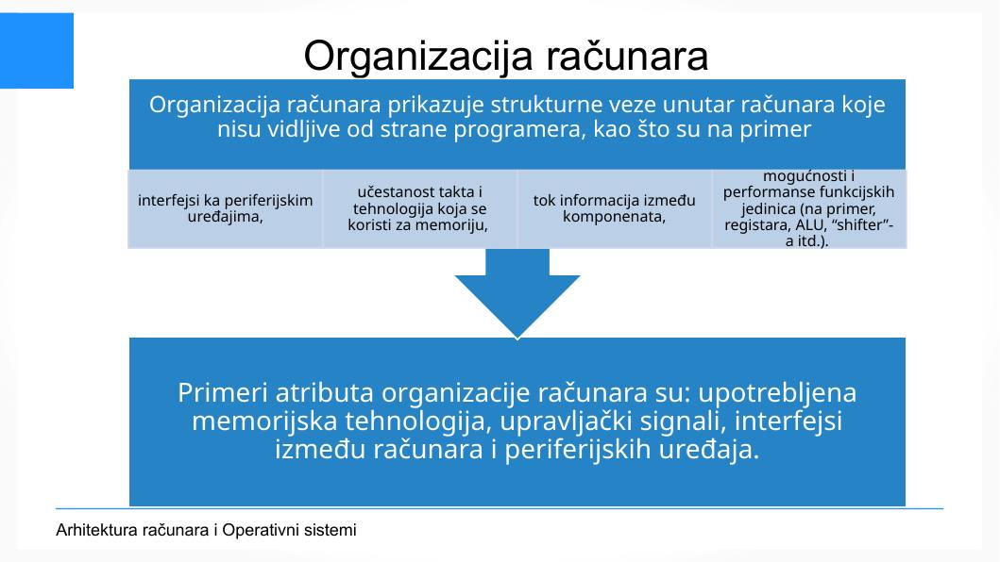
Druga strana medalje je organizacija računara: ona prikazuje strukturne veze unutar računara koje programer ne vidi, odnosno kako je arhitektura stvarno izvedena u hardveru. Na slajdu 15, ispod definicije, četiri kućice daju primere šta sve organizacija obuhvata: interfejse ka periferijskim uređajima; učestanost takta i tehnologiju kojom je napravljena memorija; tok informacija između komponenti; mogućnosti i performanse funkcijskih jedinica (registara, ALU, „shifter“-a, to jest sklopa za pomeranje bitova). Strelica vodi ka sažetku na dnu: tipični atributi organizacije su upotrebljena memorijska tehnologija, upravljački signali i interfejsi.
Najlakše je da zapamtiš poređenje sa automobilom. Arhitektura je sve što vozač vidi i koristi: volan, pedale gas-kočnica, menjač, žmigavci. Organizacija je ono ispod haube: da li je motor benzinski, dizel ili električni, koliko ima cilindara, kakva je kočiona instalacija. Vozač koji zna da vozi jedan auto vozi i drugi, jer je „interfejs“ isti, iako je motor potpuno drugačiji. Isto tako, program napisan za x86 radi i na jeftinom Intel Core i3 i na skupom i9: arhitektura im je ista, a organizacija (broj jezgara, keš, takt) vrlo različita.
Na primeru množenja: to da li procesor ima instrukciju MUL je arhitektura, jer programer mora da zna sme li da je napiše. To kako se množenje izvodi, posebnim brzim sklopom ili nizom sabiranja, je organizacija: program daje isti rezultat, samo za različito vreme.
Za svaku stavku izaberi gde pripada. Posle odgovora dobijaš objašnjenje. Ovo je jedno od najčešćih ispitnih pitanja iz Modula 1.
Novi model procesora ima veći keš i brži takt, a iste instrukcije kao stari. Da li se promenila arhitektura?
Šta je u kutiji: komponente, memorija i ko ih pravi
Hardverske komponente (slajd 16)
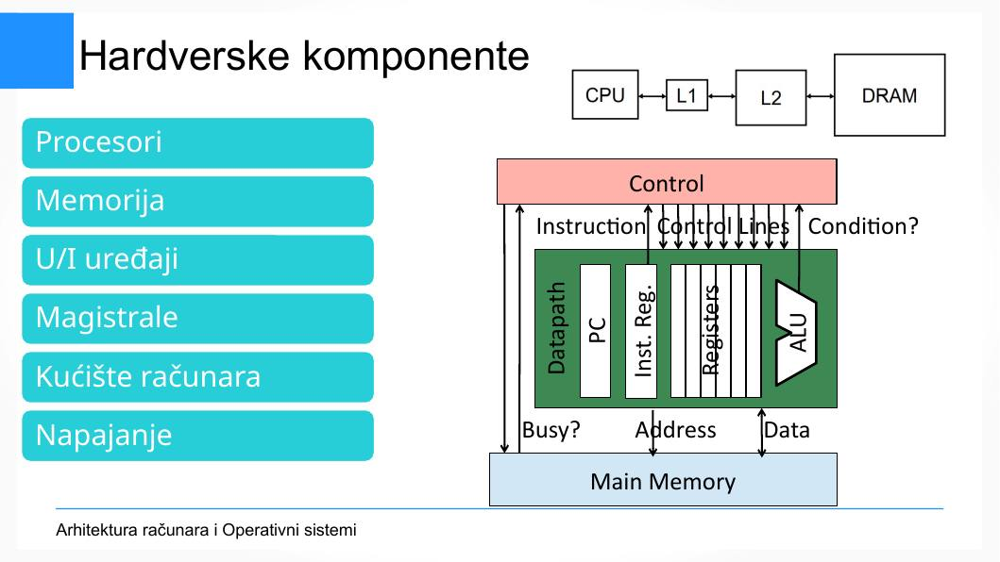
Levo na slajdu je spisak onoga što bi video kad otvoriš računar: procesori, memorija, U/I (ulazno-izlazni) uređaji, magistrale (veze između njih), kućište i napajanje. Desno je ono što je za nas važnije, pojednostavljena šema rada procesora. Hajde da je pročitamo pomoću našeg programa za prosek:
- Program (onih pet instrukcija) i ocene 8, 9, 10 nalaze se u glavnoj memoriji (Main Memory, dole desno). Gore vidiš da između procesora i glavne memorije stoje još i L1 i L2 keš, manje i brže memorije, o kojima ćemo za trenutak.
- Registar PC (Program Counter, brojač naredbi) čuva adresu sledeće instrukcije. Procesor tu adresu pošalje memoriji linijom Address, a memorija vrati instrukciju linijom Data. Signal Busy? govori da li je memorija još zauzeta.
- Instrukcija stiže u Inst. Reg. (registar instrukcije). Odatle je čita Control, upravljačka jedinica: ona shvati šta treba uraditi (npr. „saberi“) i šalje Control Lines, upravljačke signale ostalim delovima.
- Sabiranje radi ALU (aritmetičko-logička jedinica) u delu koji se zove Datapath (put podataka), zajedno sa registrima u kojima se čuva međuzbir. Upravljačka jedinica preko linije Condition? proverava rezultat (npr. da li je nula), što joj treba za odluke tipa „ako je…, skoči“.
Ovaj krug (donesi instrukciju, shvati je, izvrši je, pređi na sledeću) je srce celog predmeta. Ovde ga samo vidimo izdaleka; u Modulu 3 ćemo ga raditi korak po korak.
U kom registru je adresa instrukcije koja će se sledeća izvršiti, a u kom sama instrukcija koja se upravo izvršava?
Zašto memorija ima „spratove“ (slajd 17)
Na slajdu 16 si video da između procesora i glavne memorije stoje keševi. Zašto? Zato što procesor radi neuporedivo brže nego što memorija može da mu dostavlja podatke. Slajd 17 to pokazuje brojevima:

Slika se čita sleva nadesno: što je memorija dalje od procesora, to je veća, sporija i jeftinija po bajtu. Registri (oko 1000 bajtova) odgovaraju za 300 pikosekundi, L1 keš (64 KB) za oko 1 ns, L2 (256 KB) za 3–10 ns, L3 (nekoliko MB) za 10–20 ns, glavna memorija (gigabajti) za 50–100 ns, a disk (terabajti) za 5–10 milisekundi.
Trake su na logaritamskoj skali: svaki podeok udesno znači 10 puta duže. Na običnoj skali disk bi bio traka dugačka oko 5 km, a registar tačka. SSD nije na slajdu; dodat je radi poređenja.
Prebaci infografiku na „kao da je registar 1 sekunda“. Ako bi čitanje registra trajalo jednu sekundu, čitanje iz RAM-a bi trajalo nekoliko minuta, a sa diska oko 8 meseci. Zato procesor ne sme stalno da ide u RAM, a pogotovo ne na disk.
Prati sada naše ocene. Excel fajl je na disku. Kad ga otvoriš, operativni sistem ga prenese u RAM. Kad program počne da sabira, ocene se kopiraju u keš, pa u registre, i tek tamo ALU može da ih sabere. Hijerarhija radi zato što programi imaju osobinu koja se zove lokalnost: ako je upotrebljen neki podatak, verovatno će uskoro biti upotrebljen opet (npr. međuzbir u petlji), ili podatak odmah do njega (sledeća ocena u nizu). Zato se isplati držati malu količinu „vrućih“ podataka blizu procesora. Keš ćemo detaljno raditi u Modulu 3.
Zašto ne napravimo celu memoriju od registara, kad su najbrži?
Gde se na mapi nalazi ovaj predmet (slajd 18)
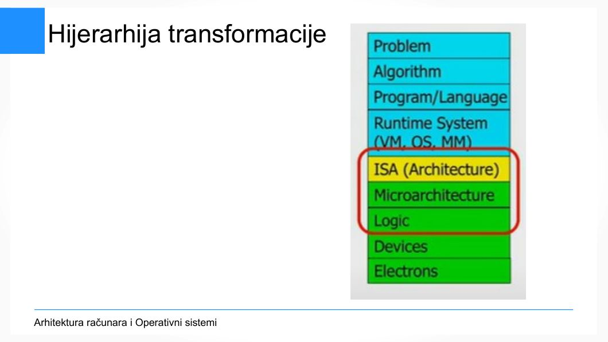
Ovde profesor prvi put pokazuje stub od devet nivoa: od problema na vrhu do elektrona na dnu. Detaljno ćemo ga raditi u delu 5, a sada samo obrati pažnju na crveni okvir: on obuhvata ISA (arhitekturu skupa instrukcija, žuto), mikroarhitekturu i logiku. To je teritorija predmeta Arhitektura računara. Sve iznad (algoritmi, programski jezici, operativni sistem) je softver, a sve ispod (uređaji, elektroni) je fizika i elektronika. Mi stojimo na granici između njih.
Ko pravi ove delove i gde se sve nalaze (slajdovi 19–20)
Hardver koji smo opisali projektuje mali broj kompanija. Intel pravi procesore, grafičke i mrežne čipove, matične ploče i disk kontrolere. AMD pravi procesore, grafičke čipove i čipsete za matične ploče. IBM pravi procesore (npr. za servere i mejnfrejm računare), diskove i kontrolere. ARM projektuje procesore za SoC (System on Chip, ceo računar na jednom čipu, kakav je u telefonu) i te projekte licencira drugima. NVIDIA pravi grafičke čipove i specijalne uređaje na osnovu ARM SoC-a. Na listi je i Apple, koji danas sam projektuje svoje procesore na ARM osnovi.
Slajd 20 dodaje važnu misao: iste komponente (procesor, memorija, magistrale, U/I) nalaze se u desktop i laptop računarima, serverima, telefonima, tabletima i IoT uređajima (pametne sijalice, satovi, senzori). Razlikuju se samo veličina, potrošnja struje i količina podataka koju obrade u jedinici vremena. Zato je ono što učiš u ovom predmetu primenljivo na svaki uređaj oko tebe.
Telefon i server imaju „iste komponente“. Šta je onda razlika između njih, u jezicima ovog predmeta?
Tehnologija gura sve napred: Murov zakon i Denardovo skaliranje
Kako tehnologija menja računare: model i familija (slajd 21)
Slajd 21 povezuje tehnologiju sa onim što smo naučili u delu 2. Redosled uticaja je ovakav: nova tehnologija (manji i brži tranzistori, brža memorija) najpre menja organizaciju (više keša, brži takt, više jezgara), a to dalje omogućava uvođenje moćnijih i složenijih arhitektura (nove instrukcije, širi registri, npr. prelazak sa 32 na 64 bita).
Odatle dva pojma koja se pitaju:
- Model računara obuhvata izabranu (projektovanu) arhitekturu. Unutar istog modela organizacija može da se menja.
- Familija modela: proizvođač nudi više modela koji svi imaju istu arhitekturu, a različitu organizaciju, pa zato i različitu cenu i performanse.
Prva prava familija bila je baš IBM System/360 iz 1964, ona čiji je arhitekta Padegs sa slajda 13. Pre nje je svaki novi IBM-ov računar imao drugačiji skup instrukcija, pa su kupci morali iznova da pišu sav softver. Sa 360 su mogli da kupe jeftin model, a kad im zatreba više snage, pređu na jači bez menjanja ijedne linije programa. Današnji primer familije su sve generacije x86 procesora: program iz 2010. radi i na procesoru iz 2026.
Zašto je familija modela dobra i za kupca i za proizvođača?
Kako smo ovde stigli: istorija u brojevima (slajd 28)
Slajd sa istorijom dolazi kasnije u prezentaciji, ali ovde mu je mesto, jer pokazuje koliko je tehnologija napredovala:
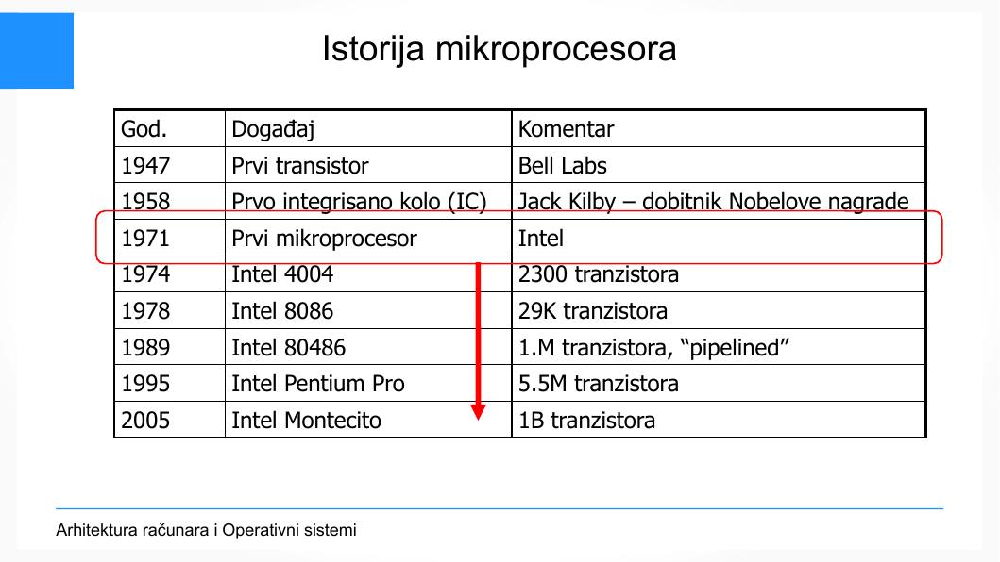
Sve počinje tranzistorom (Bell Labs, 1947), električnim prekidačem bez pokretnih delova koji je zamenio velike i nepouzdane elektronske cevi. Jack Kilby 1958. pravi prvo integrisano kolo, više tranzistora na jednoj pločici silicijuma (za to je dobio Nobelovu nagradu). Godine 1971. Intel pravi prvi mikroprocesor, 4004, ceo procesor na jednom čipu sa 2300 tranzistora (slajd ima posebne redove za 1971. i 1974, ali 4004 je iz 1971). Zatim: 8086 (1978, 29 hiljada tranzistora, početak x86 arhitekture koju i danas koristimo), 80486 (1989, 1,2 miliona, prvi Intelov sa protočnom obradom, „pipelined“), Pentium Pro (1995, 5,5 miliona) i Montecito (2005, oko milijardu; tačnije 1,72 milijarde, dvojezgarni Itanium u prodaji od 2006).
Od 2300 do milijardu je skok od oko 500 000 puta za 34 godine. To nije slučajno, to je Murov zakon.
Murov zakon (slajd 22)
Gordon Moore, jedan od osnivača Intela, primetio je 1965. da se broj tranzistora na čipu redovno udvostručuje; 1975. je procenu korigovao na udvostručavanje otprilike svake dve godine. To nije zakon prirode, nego zapažanje o tempu kojim industrija napreduje, i važilo je pedesetak godina. Udvostručavanje svake dve godine znači: za 10 godina 2⁵ = 32 puta više, za 20 godina oko 1000 puta, za 40 godina oko milion puta. Isprobaj:
Linija je predviđanje „udvostručavanje svake 2 godine“ počev od Intel 4004. Tačke su stvarni čipovi sa slajda 28 (plus Apple M1 iz 2020, radi poređenja). Vertikalna osa je logaritamska. Pomeri klizač.
Primeti dve stvari. Prvo, na logaritamskoj skali eksponencijalni rast izgleda kao prava linija; zato se ovakvi grafici uvek crtaju logaritamski. Drugo, stvarni čipovi nisu tačno na liniji (Montecito je bio ogroman serverski čip, pa je iznad nje), ali nagib prate: sedam redova veličine za pedeset godina.

Slajd 22 pokazuje šta se desilo poslednjih godina. Vertikalna osa je opet logaritamska, horizontalna su godine 1970–2020. Plava linija je ono što predviđa Murov zakon (verzija iz 1975), a crvena je stvarna gustina tranzistora kod Intela. Do oko 2000. linije idu skoro zajedno, a zatim crvena sve više zaostaje, pa je 2020. razlika oko 15 puta (ljubičasta oznaka 15X). Tekst na slajdu dodaje da i cena po tranzistoru opada sporije nego ranije, jer su fabrike čipova sve skuplje. Citat na dnu je od samog Mura (2003): „Nijedna eksponencijalna funkcija nije večna, ali ‘večno’ može da se odloži.“
Denardovo skaliranje i zid snage (slajd 23)
Murov zakon govori koliko tranzistora stane na čip. Ali zašto su procesori decenijama postajali i brži, a da se nisu pregrevali? Odgovor je dao Robert Dennard (IBM, 1974). Kad se tranzistor u novoj generaciji proizvodnje smanji (dimenzije za oko 0,7 puta):
- površina mu se prepolovi, pa na isti čip stane duplo više tranzistora,
- napon i struja se smanje za oko 30%, pa svaki tranzistor troši upola manje energije,
- tranzistor se brže prebacuje, pa takt može da poraste oko 40%,
- i ključno: snaga po kvadratnom milimetru ostaje ista. Čip ima duplo više tranzistora i brži je, a ne greje se više.
To je bio „besplatan ručak“: svake dve godine programi su sami od sebe radili brže, bez ikakvog truda programera.
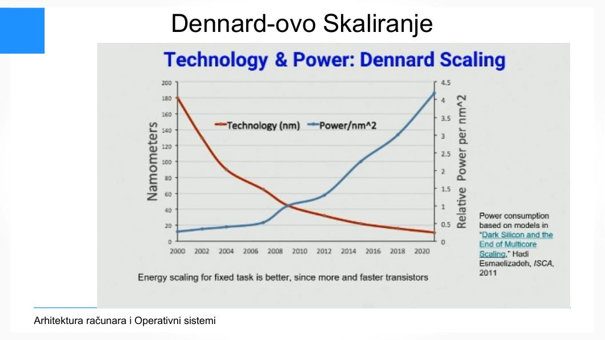
Na slajdu 23 crvena linija (leva osa) je veličina tehnologije u nanometrima i pada sa oko 180 nm (2000) na oko 10 nm (2020). Plava linija (desna osa) je relativna snaga po mm². Do oko 2006–2008 plava je skoro ravna, što znači da Denardovo skaliranje važi. Posle toga ona naglo raste, oko 4 puta do 2020: manji tranzistori sada znače topliji čip.
Zašto je prestalo? Kad su tranzistori postali jako mali, napon više nije mogao da se smanjuje, jer postoji minimalni napon (prag) ispod koga tranzistor ne radi pouzdano. Uz to, kroz sve tanje izolatore počela je da „curi“ struja i kad tranzistor ne radi (struja curenja, leakage). Ako napon ne pada, a tranzistora je duplo više i rade brže, snaga po površini raste. Rezultat je „power wall“ (zid snage): procesor od 5–6 GHz bi se pregrejao. Intel je 2004. upravo zbog toga otkazao procesore Tejas i Jayhawk.
Posledice su oblikovale sve današnje računare:
- Takt je oko 2005. praktično stao na 3–5 GHz.
- Višak tranzistora se troši na više jezgara umesto na brži takt. Zato danas imamo 8, 16 i više jezgara.
- Više jezgara pomaže samo ako je program paralelan. Koliko tačno pomaže, kaže Amdalov zakon, glavna računska tema Modula 2.
- „Dark silicon“: ne mogu svi tranzistori da rade istovremeno jer bi se čip pregrejao, pa se dodaju specijalizovane jedinice (grafika, NPU za veštačku inteligenciju) koje se uključuju po potrebi.
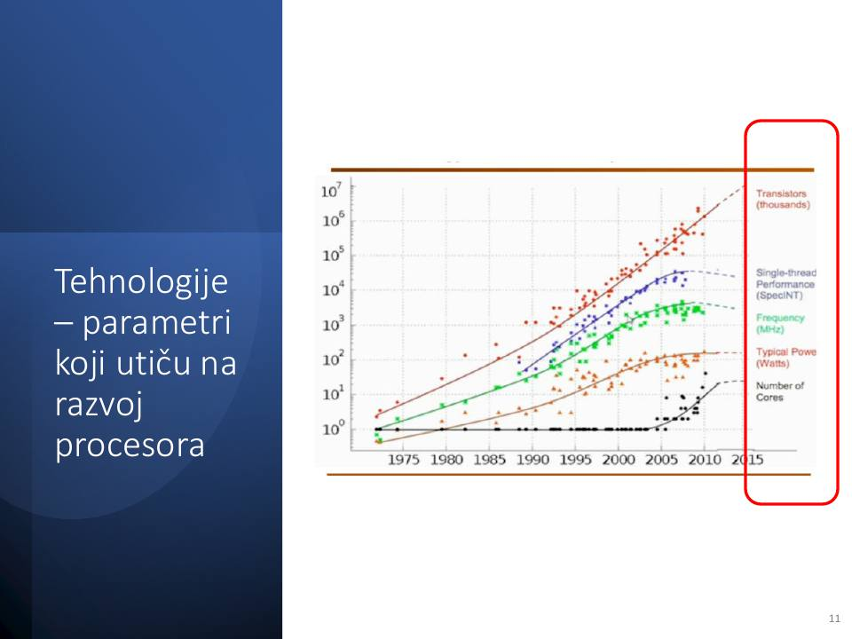
Ovaj grafik priča celu priču u jednoj slici (opet logaritamska osa, 1971–2015). Narandžasto: broj tranzistora stalno raste, to je Murov zakon. Zeleno: takt (MHz) raste do oko 2005, a onda je ravan. Crveno: tipična snaga raste do oko 100 W i staje, jer to je granica hlađenja. Plavo: brzina jednog jezgra raste sve sporije. Crno: broj jezgara je 1 sve do oko 2005, a onda počinje da raste. Tranzistora ima sve više, ali takt i snaga su udarili u zid, pa se tranzistori troše na jezgra.
U Modulu 2 profesor dodaje i drugu stranu priče (slajdovi 4–5, istraživanje Leisersona i saradnika, Science 2020): kad hardver prestane da ubrzava sam od sebe, ubrzanje mora da dođe „sa vrha“, iz boljeg softvera i algoritama. Isto množenje dve matrice 4096 × 4096, na istom računaru, traje 7 sati u Pythonu, a 0,41 sekundu u C-u koji koristi sva jezgra i vektorske instrukcije procesora: preko 60 000 puta brže. To je najbolji argument zašto programer treba da razume arhitekturu.
Murov zakon još uvek (usporeno) važi, a Denardovo skaliranje ne. Šta je od toga razlog što danas imamo višejezgarne procesore?
Kako se nosimo sa složenošću: slojevi apstrakcije
„The Big Picture“ (slajd 24)
Slajd 24 je citat iz najpoznatije knjige o arhitekturi računara (Hennessy i Patterson, dobitnici Tjuringove nagrade). Prevod, rečenicu po rečenicu, sa objašnjenjem:
- „I hardver i softver se sastoje od hijerarhijskih slojeva, gde svaki niži sloj skriva detalje od višeg.“ Programer u Javi ne zna u kom registru je promenljiva; kompajler zna. Kompajler ne zna kako je sabirač napravljen od tranzistora; projektant procesora zna.
- „Ovaj princip apstrakcije je način na koji se i projektanti hardvera i softvera nose sa složenošću računarskih sistema.“ Svako radi na svom sloju i mora da poznaje samo sloj ispod kao „crnu kutiju“: šta ona radi, ne i kako.
- „Jedan ključni interfejs između nivoa apstrakcije je arhitektura skupa instrukcija (ISA): interfejs između hardvera i softvera niskog nivoa.“ To je ista misao kao Padegsova sa slajda 13: arhitektura je granica i dogovor.
- „Ovaj apstraktni interfejs omogućava mnogo implementacija različite cene i performansi koje izvršavaju identičan softver.“ To je ideja familije modela sa slajda 21: ista ISA, različite organizacije.
Vidiš kako se priča zatvara: arhitektura (deo 2), familija (deo 4) i apstrakcija (ovde) su tri pogleda na istu ideju.
Interfejs kaže „šta“, a krije „kako“ (slajd 25)

Stub desno ide odozgo nadole: aplikacija → operativni sistem → prevodilac → mašinski jezik (ISA) → digitalna logika → elektronska kola → poluprovodnički uređaji. Tekst levo kaže da apstrakcija omogućava upravljanje složenim sistemima pomoću interfejsa koji specificiraju šta treba uraditi, a skrivaju detalje kako se to radi.
Kao u restoranu: gost naruči „ćevape i pomfrit“ (šta), a ne zanima ga kako kuhinja radi, ko je čistio krompir i na kojoj ringli se pržilo (kako). Meni je interfejs. Kuhinja može da promeni šporet ili kuvara, a gost to ni ne primeti, dokle god dobije ono što je naručio. Isto tako, Excel kaže operativnom sistemu „otvori fajl ocene.xlsx“ i ne zanima ga na kom sektoru diska je fajl.
Devet nivoa, od problema do elektrona (slajd 27)
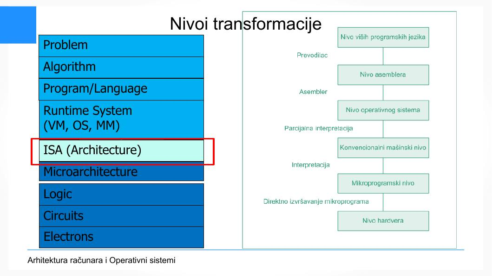
Levo je stub koji smo videli na slajdu 18, sada sa crvenim okvirom samo oko ISA, jer je ISA granica: sve iznad je softver, sve ispod je hardver. Prođimo kroz sve nivoe na našem prosek primeru:
| Nivo | Šta je to | Naš primer |
|---|---|---|
| Problem | Šta želimo, rečima | „Izračunaj prosek ocena“ |
| Algoritam | Precizan, konačan i determinisan postupak | Saberi sve ocene, podeli sa brojem ocena |
| Program / jezik | Algoritam zapisan u programskom jeziku | p = (a+b+c)/3; u C-u |
| Runtime sistem (VM, OS, MM) | Okruženje u kome program radi: virtuelna mašina, operativni sistem, upravljanje memorijom | Windows učitava program u RAM i daje mu procesor |
| ISA | Instrukcije koje procesor razume | LOAD a, ADD b, ADD c, DIV 3, STORE p |
| Mikroarhitektura | Kako je ISA izvedena u konkretnom čipu (organizacija) | Koraci kojima procesor donosi i izvršava ADD |
| Logika | Logička kola: I, ILI, NE, sabirači, flip-flopovi | Sabirač u ALU koji sabira bit po bit |
| Kola (Circuits) | Elektronska kola od tranzistora | CMOS kola od kojih je sabirač napravljen |
| Elektroni | Fizika poluprovodnika | Napon na tranzistoru: visok = 1, nizak = 0 |
Desna strana slajda je ista ideja kako je opisuje naš udžbenik, kao niz nivoa: nivo viših programskih jezika, nivo asemblera, nivo operativnog sistema, konvencionalni mašinski nivo, mikroprogramski nivo i nivo hardvera. Važnije od imena nivoa su reči na strelicama, jer kažu kako se prelazi naniže: prevodilac (viši jezik → asembler), asembler (asembler → mašinski kod), parcijalna interpretacija (operativni sistem neke stvari izvršava sam, a ostalo propušta hardveru), interpretacija (mikroprogram tumači mašinske instrukcije) i direktno izvršavanje mikroprograma u hardveru.
Računar kao niz virtuelnih mašina (slajd 26)
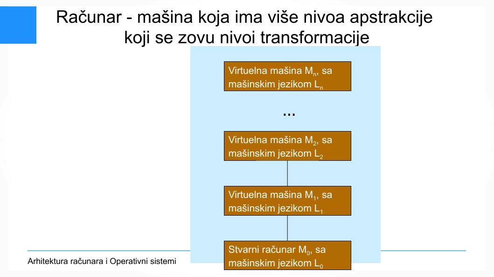
Slajd 26 istu ideju kaže apstraktnije. Na dnu je stvarni računar M0 sa svojim mašinskim jezikom L0: to je jedini jezik koji hardver zaista izvršava. Iznad njega je virtuelna mašina M1 sa jezikom L1, pa M2 sa L2, i tako do Mn sa Ln. „Virtuelna“ znači da ta mašina ne postoji kao hardver: programer koji piše u L2 ponaša se kao da postoji mašina koja direktno razume L2, a zapravo se njegov program pretvara u L1, pa u L0. Pretvaranje se radi na jedan od dva načina:
- Prevođenje (kompilacija): ceo program se unapred pretvori u niži jezik, pa se tek onda izvršava. Tako radi C.
- Interpretacija: program se čita naredba po naredba, i svaka se prevodi i izvršava u trenutku kad na nju dođe red. Tako radi Python.
Prednost ovog pogleda: kad pišeš u višem jeziku, uopšte ne moraš da misliš o nižim mašinama. To je apstrakcija na delu.
Sada možemo da uradimo ono što je ceo ovaj deo najavio: da pratimo jednu naredbu kroz sve slojeve. Uzećemo korak A = B + C, isti oblik kao „S = a + b“ u našem proseku. Klikni redom na slojeve i gledaj kako se ista stvar opisuje sve detaljnije:
Primeri koriste jednostavnu akumulatorsku mašinu sa kojom ćeš raditi u Modulu 3 (B je na adresi 4, C na 5, A na 6). Neki detalji (mikrooperacije, nazivi registara) biće ti potpuno jasni tek tada, ovde je bitan osećaj kako se korak „cepa“ na sve sitnije delove.
Na kom nivou prestaje softver, a počinje hardver? I zašto je baš taj nivo toliko važan?
Programer piše u Javi. Koje sve „mašine“ (nivoi) rade ispod njegovog programa?
U Modulu 4 profesor ovu temu zaokružuje sa dve „velike ideje“. Prva: univerzalni računarski uređaj. Uz dovoljno vremena i memorije, svi računari, od džepnog uređaja do superračunara, mogu da izračunaju iste stvari; razlikuju se samo po brzini i kapacitetu. Druga: problem se rešava transformacijama kroz slojeve, tačno onim strelicama sa slajda 27: problem → algoritam (projektovanje softvera) → program (programiranje) → ISA (prevođenje) → mikroarhitektura (projektovanje procesora) → kola (logičko projektovanje) → uređaji (proizvodnja čipa).
Otvaramo računar: funkcije, struktura i Von Neumann
Četiri stvari koje računar radi (slajdovi 29–33)
Šta god da računar radi, od igrice do Excel-a, sve se svodi na samo četiri osnovne funkcije (slajd 29):
- Obrada podataka: računanje, poređenje, menjanje podataka.
- Skladištenje podataka: čuvanje, kratkoročno (registri, RAM) ili dugoročno (disk).
- Prenos podataka: premeštanje između računara i spoljnog sveta ili između delova računara.
- Upravljanje: koordinacija prethodne tri, odlučivanje šta se radi i kojim redom.
Na slajdovima 30–33 profesor ih crta uvek istom slikom: gore prenos, dole levo skladištenje, dole desno obrada, a u sredini mehanizmi upravljanja, povezani strelicama u oba smera sa svakom od njih. Na svakom slajdu jedna kućica je obojena, uz primer. Umesto da gledaš četiri skoro iste slike, isprobaj ih ovde:

Zašto je upravljanje u sredini? Jer se nijedna od ostale tri funkcije ne dešava sama od sebe: neko mora da odluči kad se podatak prenosi, gde se skladišti i koja se operacija nad njim radi. U procesoru to radi upravljačka jedinica, a na višem nivou i operativni sistem. Pokreni u infografici „naš primer“ da vidiš kako prosek ocena koristi sve četiri funkcije.
Snimaš sliku sa telefona na USB fleš. Koje funkcije učestvuju?
Zumiranje u tri koraka (slajd 34)

Slika je kao zum u tri koraka, a isprekidane linije pokazuju šta se uvećava:
- Gornji krug (COMPUTER): računar se sastoji od četiri dela: CPU (procesor, obrađuje i upravlja), glavna memorija (Main memory, skladišti program i podatke), U/I (I/O, prenos ka spoljnom svetu) i sistemska magistrala (System bus, prenos između njih). Vidiš kako se četiri funkcije preslikavaju na delove.
- Srednji krug (CPU): procesor se sastoji od registara, ALU, interne magistrale (Internal bus) i upravljačke jedinice (Control unit).
- Donji krug (CONTROL UNIT): upravljačka jedinica ima logiku za sekvenciranje (Sequencing logic, određuje redosled koraka), svoje registre i dekodere i upravljačku memoriju (Control memory, u kojoj se čuva mikroprogram, o čemu više u Modulu 3).
Poruka slike je ista kao kod apstrakcije: svaka komponenta je sama sastavljena od manjih komponenti, i u svakom trenutku gledamo samo jedan nivo.
Unutar procesora (slajd 35)
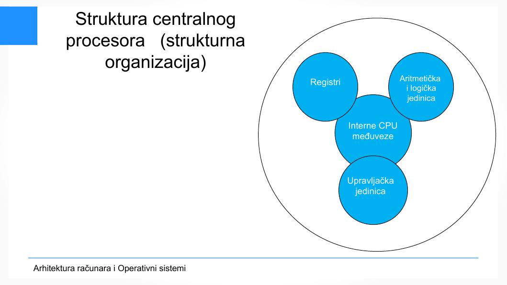
Slajd 35 je drugi korak zuma u većem: četiri dela procesora i njihove veze. Svakom delu možemo da damo ulogu u našem proseku:
- Upravljačka jedinica (UJ) je „dirigent“. Donosi instrukcije iz memorije, dekodira ih (shvati šta treba uraditi) i šalje upravljačke signale ostalima: „memorijo, daj podatak sa adrese ocene a“, „ALU, saberi“.
- Aritmetičko-logička jedinica (ALU) je „kalkulator“. Radi aritmetičke operacije (+, −, ×, /) i logičke (I, ILI, NE, poređenje, pomeranje bitova). Posle operacije postavlja zastavice: da li je rezultat nula, negativan, da li je bilo prekoračenja.
- Registri su najbrža i najmanja memorija, unutar samog procesora. U njima je međuzbir 8, pa 17, pa 27.
- Interne CPU međuveze su unutrašnje magistrale kojima podaci putuju između registara, ALU i UJ.
Šta čini arhitekturu procesora (slajd 36)

Slajd 35 je pokazao organizaciju procesora (delove i veze). Slajd 36 se vraća na arhitekturu, ono što programer vidi, i kaže tačno od čega se ona sastoji. Arhitektura procesora je određena sa šest stvari:
- Skupom registara: koliko ih ima, koliko su široki i čemu služe.
- Skupom tipova podataka koje podržava: celi brojevi od 8/16/32/64 bita, brojevi u pokretnom zarezu, znakovi.
- Skupom instrukcija: koje operacije postoje (ADD, LOAD, JMP…).
- Formatom instrukcija: kako instrukcija izgleda u bitovima (koliko bita je kod operacije, koliko adresa ima).
- Načinima adresiranja: kako instrukcija pronalazi operand (Modul 4).
- Mehanizmom prekida: kako procesor reaguje na spoljne događaje, npr. pritisak tastera (Modul 4).
Uporedi sa slajdom 14: to je ista lista „onoga što programer mora da zna“, samo detaljnija. Ove stavke su ujedno i plan Modula 3 i 4.
Zašto učestanost takta NIJE na listi sa slajda 36?
Kako procesor razgovara sa ostatkom računara (slajd 37)

Procesor, memorija i U/I uređaji povezani su sistemskom magistralom (bus): skupom provodnika (linija) kojima putuju signali. Magistrala ima tri dela, i svaki ima svoj posao:
| Deo | Šta prenosi | Smer | Šta određuje njena širina |
|---|---|---|---|
| Adresna magistrala | Adresu memorijske lokacije ili U/I uređaja | Od procesora ka memoriji i uređajima | Koliko memorije može da se adresira: n linija → 2ⁿ adresa |
| Magistrala podataka | Sam podatak ili instrukciju | U oba smera | Koliko bita se prenese odjednom (8, 16, 32, 64) |
| Upravljačka magistrala | Signale: čitaj (RD), piši (WR), spremno (READY), prekid, takt | U oba smera | Koje vrste operacija i dogovora postoje |
Kad procesor čita ocenu iz memorije, sve tri rade zajedno: na adresnu stavi adresu ocene, na upravljačkoj aktivira signal „čitaj“, a memorija vrati vrednost po magistrali podataka. Tačan redosled tih signala (vremenski dijagram) radi se u Modulu 4.
Iz tabele izvuci najvažnije pravilo za zadatke: n adresnih linija daje 2ⁿ različitih adresa. Adresna magistrala od 32 linije adresira 2³² = 4 294 967 296 bajtova, to jest 4 GB, i zato 32-bitni Windows nije mogao da koristi više od 4 GB RAM-a.
Podsetnik: binarni i heksadecimalni brojevi, stepeni dvojke (otvori ako ti ovo nije sasvim sigurno)
Pozicioni sistem. U dekadnom sistemu 347 = 3·100 + 4·10 + 7·1: svaka pozicija vredi 10 puta više od one desno. U binarnom (osnova 2) cifre su samo 0 i 1, a pozicije vrede 1, 2, 4, 8, 16, 32, 64, 128… zdesna nalevo.
Bajt 0010 1101 = 32 + 8 + 4 + 1 = 45. Obrnuto (45 u binarni): deli sa 2 i zapisuj ostatke: 45 → 22 ost. 1 → 11 ost. 0 → 5 ost. 1 → 2 ost. 1 → 1 ost. 0 → 0 ost. 1. Ostaci čitani odozdo nagore: 101101.
Heksadecimalni sistem (osnova 16) ima cifre 0–9 i A=10, B=11, C=12, D=13, E=14, F=15. Koristi se zato što je jedna hex cifra tačno 4 bita, pa se dugački binarni brojevi pišu 4 puta kraće: 0010 1101 = 2D. Oznake 0x2D, 2Dh i 2DH znače isto.
| Stepen | Vrednost | Naziv | Gde se pojavljuje |
|---|---|---|---|
| 2⁸ | 256 | vrednosti jednog bajta (0–255) | |
| 2¹⁰ | 1 024 | 1 K | 1 KB = 1024 bajta |
| 2¹⁶ | 65 536 | 64 K | 16-bitna adresa |
| 2²⁰ | 1 048 576 | 1 M | 1 MB, adresni prostor procesora 8086 |
| 2³⁰ | 1 073 741 824 | 1 G | 1 GB |
| 2³² | 4 294 967 296 | 4 G | 32-bitna adresa → 4 GB |
| 2³⁴ | 17 179 869 184 | 16 G | RAM od 16 GB (domaći 1) |
Dva pravila koja rešavaju pola zadataka: n bita daje 2ⁿ vrednosti, i obrnuto, za N adresa treba log₂ N bita. Primer: 16 GB = 2⁴ · 2³⁰ = 2³⁴ B, pa adresa ima 34 bita. Pri množenju se stepeni sabiraju (2ᵃ · 2ᵇ = 2ᵃ⁺ᵇ), pri deljenju oduzimaju. U ovom predmetu 1 KB = 1024 B.
Procesor ima adresnu magistralu od 20 linija. Koliko najviše memorije može da adresira (ako je svaka adresa jedan bajt)?
Von Neumann-ova mašina (slajd 38)
Prvi elektronski računari (npr. ENIAC, 1945) „programirali“ su se prespajanjem kablova i prekidača: da bi računar radio drugi posao, ljudi su danima menjali žice. Džon fon Nojman (John von Neumann) je 1945. opisao računar čija je ključna ideja koncept zapamćenog programa (stored program): program se čuva u memoriji, isto kao i podaci, kao niz brojeva. Da bi računar radio nešto drugo, dovoljno je u memoriju učitati drugi program.
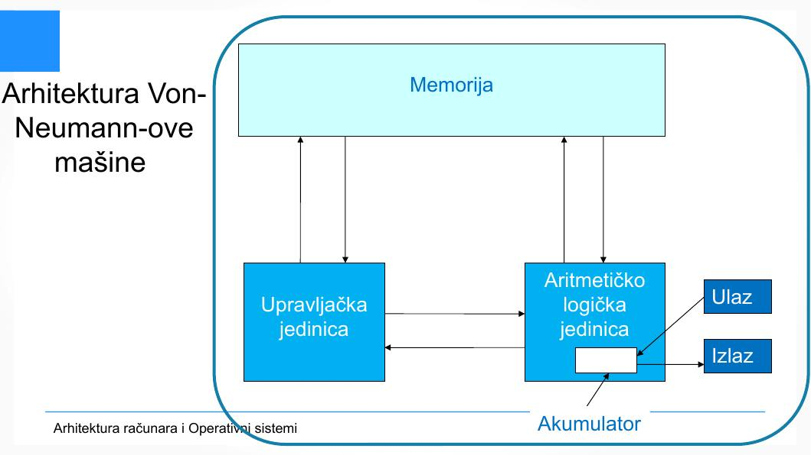
Slika ima pet delova: memoriju (gore; u njoj su i program i podaci), upravljačku jedinicu (levo dole), aritmetičko-logičku jedinicu sa akumulatorom (desno dole; akumulator je mali pravougaonik, registar u kome ALU drži međurezultat), ulaz i izlaz. Upravljačka jedinica čita instrukcije iz memorije i šalje komande ALU; ALU čita i upisuje podatke u memoriju; ulaz i izlaz idu preko ALU i akumulatora. Prepoznaješ li delove sa slajdova 34 i 35? Upravljačka jedinica, ALU sa registrom, memorija i U/I: ista građa, opisana pre 80 godina.
Principi Von Neumann-ove mašine, koje treba znati:
- Program i podaci su u istoj memoriji i ne razlikuju se po obliku (sve su binarni brojevi).
- Memorija je podeljena na numerisane lokacije (adrese), a sadržaju se pristupa preko adrese.
- Instrukcije se izvršavaju sekvencijalno, jedna za drugom, osim kad instrukcija skoka promeni redosled.
- Postoji brojač naredbi (PC) koji pokazuje koja instrukcija je sledeća.
Za naš primer to znači: u memoriji, u nizu lokacija, stoje pet instrukcija programa, a odmah pored njih ocene 8, 9, 10 i mesto za rezultat. Procesor ne „zna“ šta je instrukcija, a šta ocena; zna samo da sa adrese na koju pokazuje PC uzme sledeću instrukciju.
U Modulu 3 profesor prikazuje i kako ovakvi računari ulaze u klasifikaciju (M3_02, slajd 3): računar može biti analogni ili digitalni; digitalni može biti fiksne funkcije (kao stari kalkulator) ili sa zapamćenim programom; takav može biti mehanički ili elektronski; a elektronski može biti specijalne ili opšte namene. Ovaj predmet proučava upravo poslednju granu: digitalni, elektronski računar opšte namene sa zapamćenim programom, to jest Von Neumann-ovu ideju.

Princeton i Harvard (slajdovi 39–40)


Poslednja dva slajda porede dva načina da se procesor poveže sa memorijom. Princeton je drugo ime za Von Neumann-ovu arhitekturu (fon Nojman je radio na Prinstonu): postoji jedna operativna memorija, a između nje i procesora idu dve strelice, adresiranje i podaci i instrukcije. Dakle isti put za oboje. Harvard (po računaru Harvard Mark I) ima dve odvojene memorije, memoriju za instrukcije i memoriju za podatke, i svaka ima svoj par linija. Procesor (registri sa brojačem naredbi, ALU, upravljačka jedinica) i U/I uređaji su na obe slike isti; razlika je samo u memoriji i putevima do nje.
Zašto je to bitno? Zato što procesor gotovo svakom instrukcijom traži dve stvari: samu instrukciju i podatak nad kojim radi (npr. „ADD b“ traži instrukciju ADD i vrednost b). U Princeton mašini oba moraju da prođu kroz isti put, jedno posle drugog. U Harvard mašini mogu istovremeno. Pogledaj koliko to vredi:
Svaka instrukcija u ovom primeru mora da donese sebe (I) i jedan podatak iz memorije (D). Jedan prenos traje jedan ciklus magistrale. Pomeri klizač.
Ovo čekanje ima ime: Von Neumann-ovo usko grlo (bottleneck). Procesor je mnogo brži od memorije, a sve, i instrukcije i podaci, mora da prođe kroz jednu magistralu, pa procesor često stoji i čeka. Seti se hijerarhije memorije iz dela 3: keš postoji upravo da bi ublažio ovo usko grlo.
| Von Neumann / Princeton | Harvard | |
|---|---|---|
| Memorija | Jedna, zajednička za program i podatke | Dve: za instrukcije i za podatke |
| Putevi (magistrale) | Jedan | Dva odvojena |
| U jednom ciklusu | Ili instrukcija ili podatak | I instrukcija i podatak |
| Prednost | Jednostavnija i jeftinija; memorija se fleksibilno deli između programa i podataka | Brža, paralelan pristup |
| Mana | Usko grlo | Složenija i skuplja; jedna memorija može biti puna dok je druga prazna |
| Gde se koristi | Opšti računari (na nivou RAM-a) | Mikrokontroleri (Arduino/AVR, PIC), DSP, L1 keš modernih procesora |
Današnji procesori uzimaju najbolje od oba: modifikovana Harvard arhitektura. Najbliži procesoru, L1 keš je podeljen na keš za instrukcije (L1i) i keš za podatke (L1d), pa procesor u istom ciklusu dobija i instrukciju i podatak (Harvard). L2, L3 i RAM su zajednički (Von Neumann), pa zadržavamo fleksibilnost jedne velike memorije.
Arduino ima program u flash memoriji, a promenljive u posebnoj SRAM memoriji. Koja je to arhitektura?
Zašto je Von Neumann-ova ideja zapamćenog programa bila revolucionarna, kad danas izgleda očigledno?
Ceo Modul 1 u jednom pogledu
Evo cele priče koju smo ispričali, kao niz od osam rečenica. Ako svaku umeš da objasniš svojim rečima, Modul 1 znaš:
- Računar ume samo elementarne operacije; program je njihov niz, a algoritam mora biti konačan i determinisan (sl. 11–12).
- Arhitektura je ono što programer vidi (instrukcije, adresiranje, U/I, tipovi podataka), organizacija je kako je to izvedeno (takt, tehnologija, signali) (sl. 13–15).
- Računar čine procesor, memorija, U/I i magistrale; memorija je hijerarhija od brzih i malih do sporih i velikih (sl. 16–17).
- Ista arhitektura sa različitim organizacijama daje familiju modela (sl. 21).
- Mur: tranzistora je duplo više svake ~2 godine. Denard: to je bilo bez rasta snage po mm², do ~2005. Posle toga takt staje, a rastu broj jezgara (sl. 22–23, 28).
- Složenost se savladava apstrakcijom: slojevi od problema do elektrona, a granica hardvera i softvera je ISA (sl. 18, 24–27).
- Računar radi četiri stvari: obradu, skladištenje, prenos i upravljanje; CPU čine UJ, ALU, registri i interne veze, povezani sa ostatkom adresnom, magistralom podataka i upravljačkom magistralom (sl. 29–37).
- Von Neumann: program i podaci u istoj memoriji, jedna magistrala, pa usko grlo; Harvard razdvaja memorije; današnji procesori su Harvard u L1 kešu, a Von Neumann u RAM-u (sl. 38–40).
Kad takt prestane da raste: više jezgara i Amdalov zakon
Modul 1 se završio jednim neprijatnim otkrićem: oko 2005. takt procesora je stao na nekoliko GHz, jer bi brži čip počeo da se topi. Proizvođači su višak tranzistora iskoristili za više jezgara. Danas laptop ima 8 ili 16 jezgara. Da li to znači da je program 16 puta brži? Modul 2 odgovara na to pitanje, i uči te kako se brzina računara uopšte meri.
Kroz ceo modul pratimo jedan program: aplikaciju koja obrađuje 1000 fotografija sa putovanja (smanji ih, popravi boje i spakuje u jedan album). Na jednom jezgru ona radi 100 sekundi, i to ovako:
Ova podela 25 + 50 + 25 nije izmišljena: to su tačno brojevi iz primera koji profesor radi na slajdovima 19–20. Videćemo da je u njoj sakriven odgovor na pitanje o 16 jezgara.
Računarski sistem i gde se gubi vreme (slajd 3)

Modul počinje slikom celog sistema, da bi se videlo gde su delovi čije performanse merimo. Levo je procesor (žuti krug) sa hijerarhijom keša (zeleno), dakle ono što smo u Modulu 1 zvali registri, L1, L2, L3. Oni su sistemskom memorijskom magistralom (System Memory Bus, debela vertikalna linija) povezani sa memorijskim sistemom gore, koji ima svoj memorijski kontroler (MEM CONTR). Preko mosta (Bridge Controller) brza sistemska magistrala je spojena sa sporijom U/I magistralom (I/O Bus), na kojoj su mrežna kartica (NIC) ka lokalnoj mreži LAN i dalje preko rutera ka internetu (WAN), disk kontroler (SCSI/SATA) sa diskovima i mrežni adapter ka SAN-u (posebnoj mreži za skladištenje, nizu diskova).
Natpis ispod slike je teza celog modula: performanse se mogu poboljšati dodavanjem procesora ili jezgara. Ostatak modula proverava koliko je to tačno. Isti crtež ćeš videti i na početku Modula 4, gde je naglašen spoj procesora i memorije.
Ima mesta „na vrhu“ (slajdovi 4–5)

Desno na slajdu 4 je stari poznanik iz Modula 1: stub nivoa od problema do elektrona, sa žuto obeleženom ISA. Levo je tumačenje iz čuvenog članka „There's plenty of room at the Top“ (ima mnogo mesta na vrhu). Naslov je igra reči sa predavanjem fizičara Ričarda Fajnmana iz 1959, „There's plenty of room at the Bottom“, koje je najavilo minijaturizaciju. Pedeset godina je ubrzanje dolazilo sa dna (The Bottom, poluprovodnička tehnologija, sve manji tranzistori). Sada, kad se dno usporilo, ubrzanje mora da dođe sa vrha, iz tri izvora:
- Softver: izbacivanje nepotrebnog koda (software bloat) i prilagođavanje softvera mogućnostima hardvera.
- Algoritmi: novi, efikasniji algoritmi i novi modeli mašina.
- Hardverska arhitektura: pojednostavljenje procesora i specijalizovani čipovi (grafički, za veštačku inteligenciju).
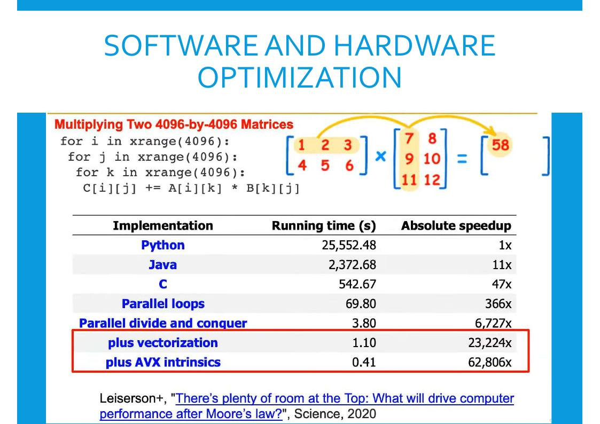
Slajd 5 pokazuje koliko je to „mesta“. Zadatak je množenje dve matrice 4096 × 4096 (tri ugnježdene petlje, kod je gore levo, a primer množenja manjih matrica desno). Tabela pokazuje koliko traje isti algoritam na istom računaru, napisan na različite načine:
| Verzija | Vreme | Ubrzanje | Šta je promenjeno |
|---|---|---|---|
| Python | 25 552 s (≈7 h) | 1× | polazna tačka, jezik koji se interpretira |
| Java | 2 372 s | 11× | jezik koji se prevodi (uz JIT) |
| C | 542 s | 47× | prevodi se direktno u mašinski kod |
| Paralelne petlje | 69,8 s | 366× | posao podeljen na sva jezgra |
| Paralelno „podeli pa vladaj“ | 3,8 s | 6 727× | bolji algoritam, koji pametno koristi keš |
| + vektorizacija | 1,1 s | 23 224× | jedna instrukcija radi nad više brojeva |
| + AVX instrukcije | 0,41 s | 62 806× | direktno korišćenje vektorskih instrukcija procesora |
Crveno uokvirena su poslednja dva reda: najveći skokovi dolaze kad softver iskoristi arhitekturu procesora (vektorske instrukcije). Poruka je ona ista iz Modula 1: programer koji razume arhitekturu može da dobije ubrzanje veće nego decenije napretka tehnologije. Primeti i četvrti red: posao podeljen na jezgra dao je „samo“ oko 8 puta u odnosu na C. Zašto ne više? Na to odgovara Amdalov zakon.
Kratko skretanje: RISC, CISC i RISC-V (slajdovi 6–9)
Pre Amdala profesor ubacuje četiri slajda o vrstama procesora, jer je vrsta procesora jedan od faktora brzine. RISC (Reduced Instruction Set Computing) koristi mnogo jednostavnih instrukcija da završi posao, a CISC (Complex Instruction Set Computing) manji broj složenih instrukcija (slajd 6). RISC-V je konkretna RISC arhitektura nastala na Berkliju od 2010, peta generacija Berkeley RISC-a, i otvorena je: bilo ko sme da projektuje i prodaje RISC-V procesor bez licence (slajdovi 7–8). Slajd 9 poredi tri današnje ISA: x86 (zatvorena, Intel i AMD, većina desktop računara i servera), ARM (zatvorena, licencira se, Android i iOS uređaji i noviji Apple računari) i RISC-V (otvorena).
Detaljno ovo radimo u Modulu 3, u delu o CISC i RISC procesorima. Ovde zapamti samo vezu sa brzinom: CISC program ima manje instrukcija, ali svaka traje duže; RISC ima više instrukcija, ali kratkih. Koji je brži, saznaćemo kad u delu 2 naučimo formulu za CPU vreme.
Amdalov zakon: ideja (slajdovi 10–12)
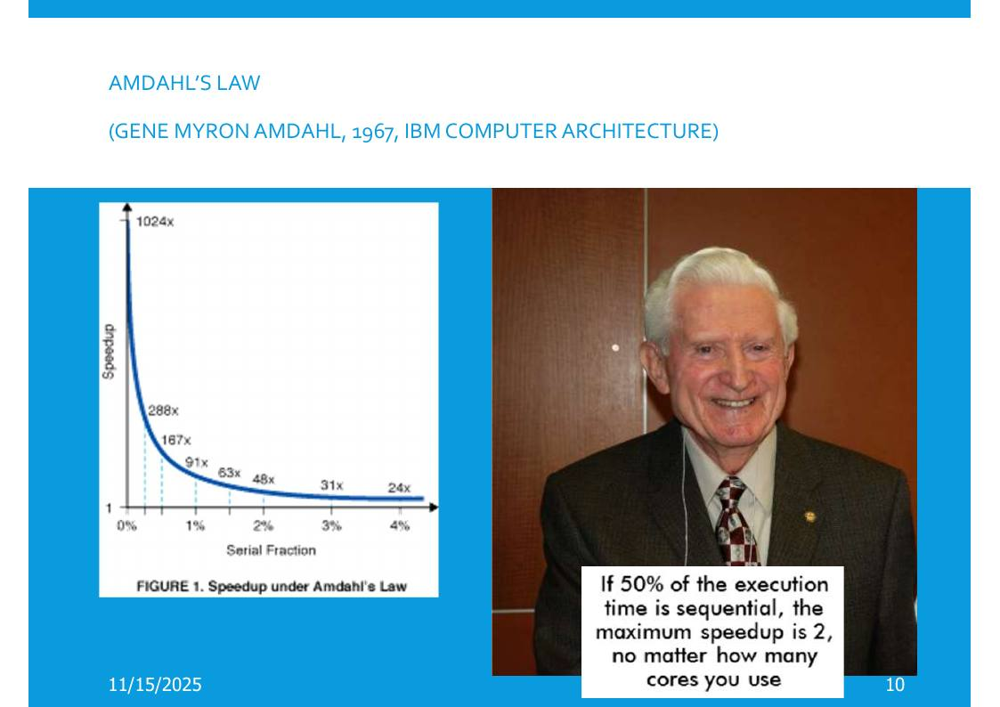
Gene Amdahl je bio jedan od arhitekata računara IBM 360 (one prve familije iz Modula 1). Godine 1967. pokazao je zašto dodavanje procesora ne ubrzava program onoliko koliko bi se očekivalo. Grafik na slajdu 10 to pokazuje u jednoj slici: na horizontalnoj osi je udeo sekvencijalnog dela programa (deo koji mora redom), od 0 do 5%, a na vertikalnoj najveće ubrzanje koje se može postići sa 1024 procesora. Ako je sekvencijalni deo 0%, ubrzanje je 1024 puta. Ali već pri samo 1% pada na oko 91, pri 2% na oko 48, a pri 5% na oko 20. Mali deo programa koji ne može paralelno „pojede“ skoro sve procesore.

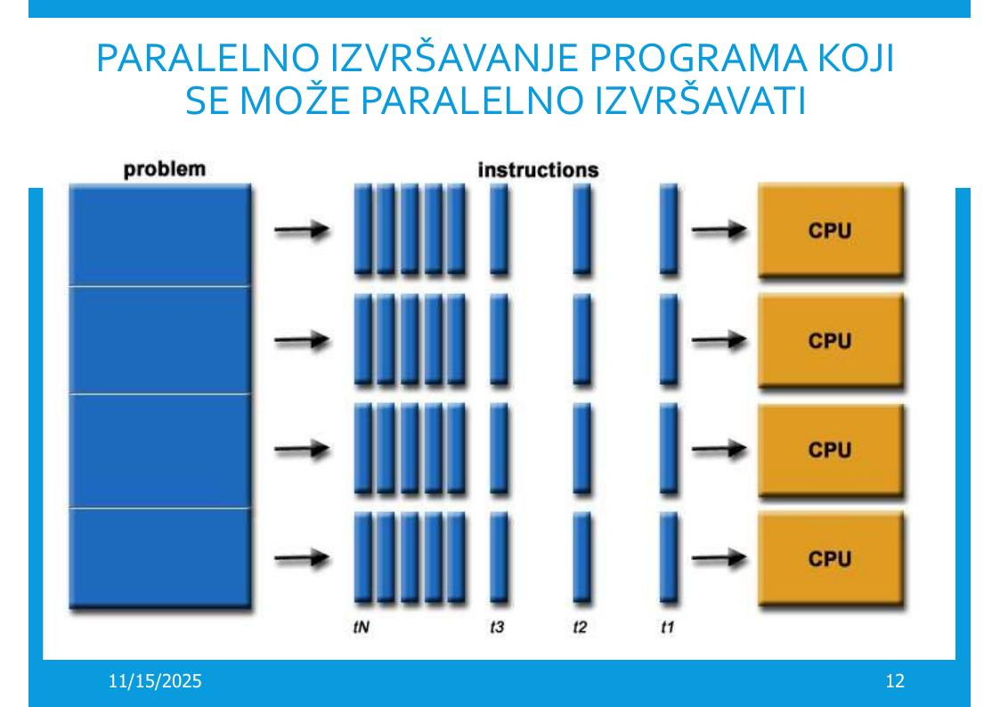
Slajdovi 11 i 12 pokazuju razliku. Sekvencijalno (slajd 11): problem se razloži na niz instrukcija i sve one idu redom kroz jedan CPU. Paralelno (slajd 12): problem se prvo podeli na delove (crveni blokovi levo), svaki deo je svoj niz instrukcija, i svaki deo ide na svoj CPU, istovremeno. Važan uslov: to može samo za delove problema koji su međusobno nezavisni. U našem albumu, obrada slike 37 ne zavisi od slike 36, pa 50 sekundi obrade može da se podeli na jezgra. Ali pakovanje u album mora redom, slika po slika, u jedan fajl.
Zašto neki delovi moraju redom (slajd 15)

Slajd 15 daje najmanji mogući primer. Programi imaju sekvencijalne delove (S) i delove koji se mogu paralelizovati (P):
1 a = b + c; ┐ 2 d = a + 1; │ S: red 2 treba a iz reda 1, red 3 treba d iz reda 2 3 e = d + a; ┘ → svaki korak čeka prethodni, mora redom 4 for (k=0; k<e; k++) ┐ P: M[0]=1, M[1]=1, M[2]=1 … ne zavise jedno od drugog 5 M[k] = 1; ┘ → svako jezgro može da popuni svoj deo niza
Redovi 1–3 su lanac zavisnosti: ne možeš izračunati d dok ne znaš a, ni e dok ne znaš d. Ni hiljadu jezgara ne pomaže, jer drugo jezgro nema šta da radi dok prvo ne završi. Petlja u redovima 4–5 je suprotna: ako je e = 1000, jedno jezgro može da upiše M[0] do M[249], drugo M[250] do M[499], i tako dalje, sva u isto vreme.
U našoj aplikaciji, koji od tri dela (priprema, obrada, pakovanje) je „S“, a koji „P“?
Kako se računa ubrzanje (slajdovi 13–14 i 16)

Gore levo na slajdu 13 isti program se izvršava na 1, 2, 3 i 4 jezgra. Ružičasti deo je sekvencijalni (serial, s), zeleni je paralelni (parallelizable, f). Pogledaj šta se dešava: ružičasti deo uvek ostaje iste dužine, a zeleni se deli na 2, 3, 4 komada koji se rade istovremeno. Desno je to zapisano: ako je vreme na jednom jezgru 1 = s + f, na P jezgara sekvencijalni deo i dalje traje s, a paralelni f/P. Novo vreme je s + f/P.
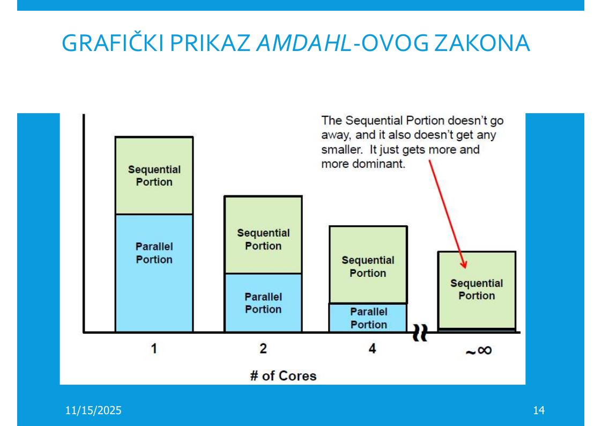
Slajd 14 je ista priča u stubovima: vreme izvršavanja na 1, 2, 4 i „beskonačno“ jezgara. Plavi (paralelni) deo se svaki put prepolovi, a zeleni (sekvencijalni) ostaje isti. Na beskonačno jezgara ostaje samo sekvencijalni deo. Tekst gore desno to kaže najbolje: „Sekvencijalni deo ne nestaje i ne smanjuje se. Samo postaje sve dominantniji.“
Sad možemo da izvedemo formulu sa slajda 16. Oznake:
- f: deo programa (udeo u vremenu izvršavanja) koji se može paralelno izvršavati, i to bez dodatnog opterećenja za raspoređivanje posla (scheduling overhead);
- 1 − f: deo koji je prirodno sekvencijalan;
- T: ukupno vreme izvršavanja programa na jednom procesoru (jezgru);
- N: broj procesora (jezgara).
Na jednom procesoru program traje T = T(1 − f) + Tf. Na N procesora sekvencijalni deo traje isto, T(1 − f), a paralelni se podeli na N delova, Tf/N. Ubrzanje (speedup) je odnos starog i novog vremena; T se skrati:
Slajd 16 dodaje i da je ubrzanje metrika za kvantitativno merenje performansi: broj koji kaže „koliko puta brže“. Ubrzanje 1 znači „isto“, 2 znači „duplo brže“.
Naš album na 5 jezgara (slajdovi 19–20)
Na slajdu 19 program od 100 s ima 25 s sekvencijalnog dela, 50 s dela koji se može paralelizovati i opet 25 s sekvencijalnog, baš kao naš album. Paralelni deo se raspodeli na 5 niti (T1 do T5), po jedna na svakom jezgru.
- Paralelni deo na 5 jezgara: 50 / 5 = 10 s.
- Novo ukupno vreme: 25 + 10 + 25 = 60 s.
- Ubrzanje = vreme pre / vreme posle = 100 / 60 = 1,67.
- Provera formulom: f = 0,5, N = 5 → S = 1 / (0,5 + 0,5/5) = 1 / 0,6 = 1,67. ✓
Zaključci i grafici (slajdovi 17, 21–22)
Iz formule direktno slede dva zaključka sa slajda 17:
- Ako je f malo, paralelni procesori imaju mali efekat. Ako je paralelno samo 10% programa, ni 1000 jezgara ne daje više od 1,11 puta.
- Kada N → ∞, član f/N → 0, pa je ubrzanje ograničeno sa 1/(1 − f). Sa svakim novim procesorom dobit je sve manja.

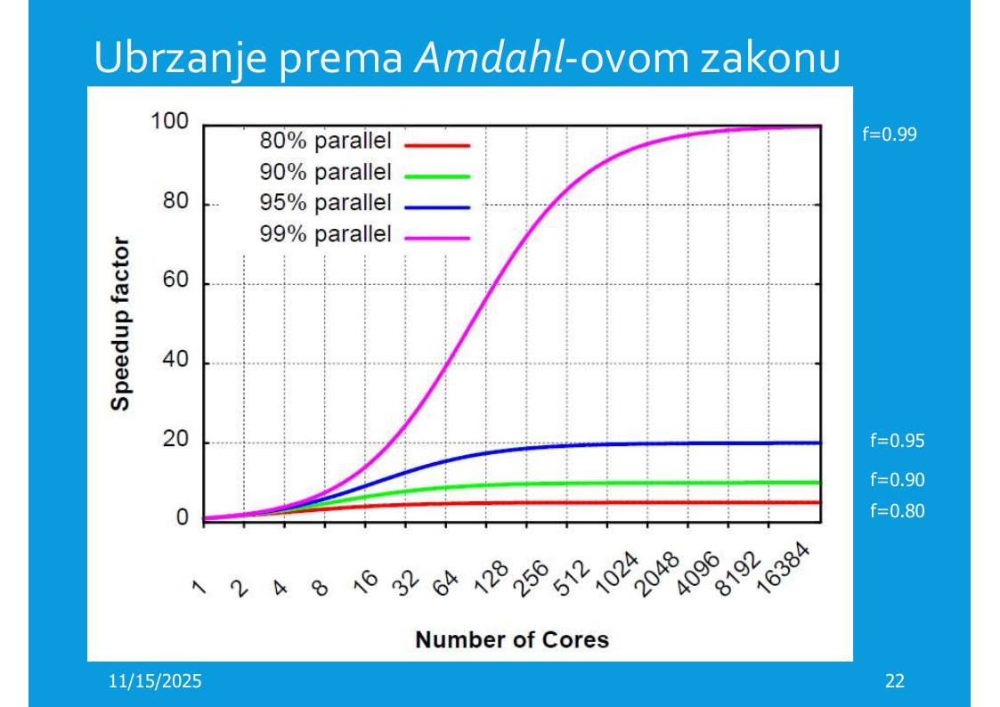
Na slajdu 21 su tri krive ubrzanja u zavisnosti od broja jezgara. Zelena je idealno, linearno ubrzanje (N jezgara = N puta brže), koje u praksi ne postoji. Plava je gornja granica po Amdalu: savija se i približava 1/(1 − f). Crvena je ono što se stvarno meri: posle nekog broja jezgara ubrzanje čak počinje da opada, jer jezgra troše sve više vremena na međusobnu komunikaciju i usklađivanje (onaj „scheduling overhead“ iz definicije f). Slajd 22 crta krive za 80%, 90%, 95% i 99% paralelnog koda: čak i sa 99% (ljubičasta) ubrzanje ne prelazi 100, a sa 80% (crvena) staje na 5.
Isprobaj sam. Postavi f = 0,50 i N = 5 i dobićeš naš album:
Koliko jezgara bi trebalo našem albumu (f = 0,5) da dostigne ubrzanje 2?
Program je 95% paralelan. Koliko je najviše moguće ubrzanje, ma koliko jezgara dodali?
Zakon ne važi samo za jezgra (slajd 18)
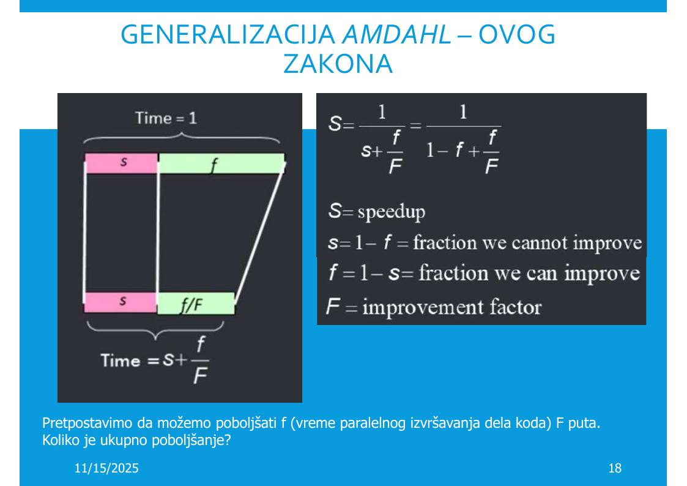
Pogledaj formulu još jednom: N u njoj zapravo znači „koliko puta brže radi paralelni deo“. Ništa ne mora biti paralelno. Ako bilo koji deo programa f ubrzamo F puta (brža jedinica za računanje sa decimalnim brojevima, brži disk, bolji algoritam baš za taj deo), važi ista formula, samo sa F umesto N. To je generalizacija Amdalovog zakona sa slajda 18:
gde je S ukupno ubrzanje, f deo vremena koji poboljšavamo, 1 − f deo koji ostaje isti, a F koliko puta je poboljšani deo brži. Odatle i princip dizajna koji je profesor stavio u rezime: „make the common case fast“, ubrzaj ono što zauzima najviše vremena. Ubrzati za 100 puta deo koji traje 1% vremena skoro ništa ne donosi; ubrzati za 20% deo koji traje 90% vremena donosi mnogo.
Rešeni primeri sa predavanja (slajdovi 40–45)
Profesor primere radi na kraju predavanja, ali logično pripadaju ovde, odmah posle formule. Primer 4 zahteva i CPI i takt, pa njega radimo na kraju dela 2.
- f = 0,1 (ubrzava se 10%), F = 2.
- S = 1 / (0,9 + 0,1/2) = 1 / (0,9 + 0,05) = 1 / 0,95 = 1,053.
- Zamenimo poznato: 2 = 1 / ((1 − f) + f/4).
- Okrenemo obe strane: (1 − f) + f/4 = 1/2 = 0,5.
- Sredimo: 1 − f + 0,25f = 0,5 → 1 − 0,75f = 0,5 → 0,75f = 0,5.
- f = 0,5 / 0,75 = 0,667, to jest 66,7%.
- f = 0,75, F = 3.
- S = 1 / ((1 − 0,75) + 0,75/3) = 1 / (0,25 + 0,25) = 1 / 0,5 = 2.
Za vežbu, ovde možeš da rešiš bilo koji zadatak ovog tipa, i unapred i unazad. Izaberi šta se traži, upiši ostalo i pogledaj korake:
Primeri sa predavanja: Primer 1 (traži S: f = 0,1, F = 2), Primer 2 (traži f: S = 2, F = 4), Primer 3 (traži S: f = 0,75, F = 3).
Gde se paralelizacija stvarno isplati (slajd 23)
Ako je Amdalov zakon toliko strog, gde onda više procesora ima smisla? Tamo gde je f blizu 1, to jest gde je skoro sav posao sastavljen od nezavisnih pod-zadataka. Slajd 23 nabraja primere: serveri koji paralelno opslužuju mnogo klijenata (transakcioni server banke: svaki klijent je nezavisan), proračuni nad velikim bazama podataka (podaci se podele na delove koji se obrađuju paralelno), Big Data integracija, i naučne simulacije: interakcija molekula, seizmički talasi, prognoza vremena (atmosfera se podeli na kocke koje se računaju istovremeno). Upravo za takve poslove se grade superračunari sa stotinama hiljada jezgara.
Šta tačno merimo: CPU vreme, CPI i radni takt
Kad kažemo da je jedan računar „brži“ od drugog, moramo tačno da kažemo šta merimo. Broj GHz, broj jezgara, količina keša, sve to samo utiče na brzinu. Najpoštenija mera brzine procesora je jednostavna: koliko sekundi treba da se izvrši dati program. To vreme se zove CPU vreme (CPU execution time), i profesor ga na slajdu 24 naziva kvantitativnim parametrom, jer je to broj koji se može izmeriti i izračunati.
Formula za CPU vreme (slajd 24)
Ideja slajda 24 je da vreme izvršavanja razložimo na tri pitanja, koja se mogu posebno meriti i posebno popravljati:
- Koliko instrukcija program izvrši?
- Koliko ciklusa takta u proseku traje jedna instrukcija?
- Koliko sekundi traje jedan ciklus?
Pomnožimo odgovore i jedinice se „skrate“ kao razlomci:
- IC (Instruction Count), broj instrukcija: koliko instrukcija program izvrši. Ne koliko ih piše u kodu, nego koliko se stvarno izvrši: instrukcija u petlji koja se ponovi 1000 puta broji se 1000 puta.
- CPI (Cycles Per Instruction): koliko ciklusa takta u proseku traje jedna instrukcija.
- T: trajanje jednog ciklusa takta, ili umesto njega f, frekvencija takta (T = 1/f).
Da bismo formulu stvarno razumeli, prođimo kroz njena tri dela. Počinjemo od poslednjeg, takta, jer od njega sve počinje.
Radni takt: srce koje kuca (slajdovi 28–30)
Unutar procesora sve se dešava u ritmu jednog signala, radnog takta (clock). To je pravougaoni signal koji stalno ide 0 → 1 → 0 → 1, milijardama puta u sekundi. Jedan pun prolaz, od jedne uzlazne ivice do sledeće, zove se jedan ciklus (one cycle). Slajd 28 kaže šta takt radi:
- sinhroniše sve operacije procesora i magistrala: svi delovi „pomeraju se“ na istu ivicu takta, kao veslači na komandu;
- mašinski takt meri vreme jedne operacije: najjednostavnija operacija traje jedan ciklus, složenije više;
- koristi se za aktiviranje događaja: na primer, na uzlaznu ivicu se nova vrednost upisuje u registar.
Frekvencija f je broj ciklusa u sekundi i meri se u hercima (Hz). Slajd 29 daje tablicu jedinica, a slajd 30 kaže kako se iz frekvencije dobija vreme jednog ciklusa:
| Frekvencija | Ciklusa u sekundi | Vreme jednog ciklusa |
|---|---|---|
| 1 Hz | 1 | 1 s |
| 1 kHz | 10³ | 1 ms (10⁻³ s) |
| 1 MHz | 10⁶ | 1 µs (10⁻⁶ s) |
| 1 GHz | 10⁹ | 1 ns (10⁻⁹ s) |
| 1 THz | 10¹² | 1 ps (10⁻¹² s) |
Primer sa slajda 30: 1 GHz = 1 000 000 000 ciklusa u sekundi, pa je T = 1/10⁹ s = 10⁻⁹ s = 1 ns. Za 4 GHz: T = 1/(4·10⁹) s = 0,25 ns. Da bi osetio koliko je to kratko: za vreme jednog ciklusa na 4 GHz svetlost pređe samo 7,5 cm.
Procesor radi na 2 GHz. Koliko traje jedan ciklus?
CPI: koliko ciklusa traje jedna instrukcija (slajd 26)
Različite instrukcije traju različito. Sabiranje dva registra može da traje 1 ciklus, a čitanje podatka iz memorije 2 ili više, jer mora da se čeka memorija. Zato CPI programa nije jedan broj iz kataloga, nego ponderisani prosek (prosek u kome se češće instrukcije više računaju):
gde je Iᵢ broj instrukcija klase i (npr. svih load instrukcija), a udeoᵢ = Iᵢ / IC procenat te klase u programu.
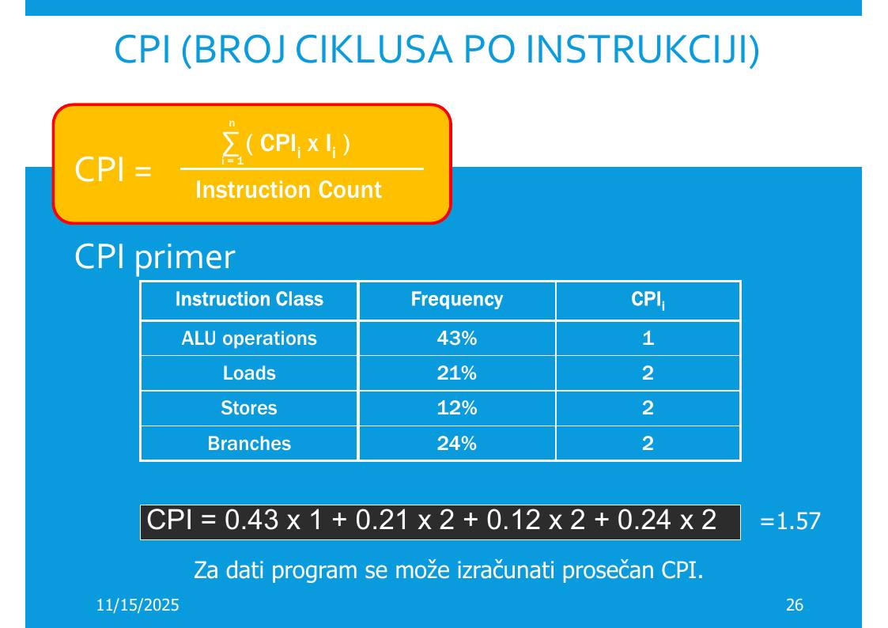
Primer sa slajda 26 deli instrukcije u četiri klase. Svaki red tabele množimo, pa saberemo:
| Klasa instrukcija | Udeo | CPIᵢ | Doprinos = udeo × CPIᵢ |
|---|---|---|---|
| ALU operacije (računanje) | 43% | 1 | 0,43 |
| Load (čitanje iz memorije) | 21% | 2 | 0,42 |
| Store (upis u memoriju) | 12% | 2 | 0,24 |
| Branch (skokovi) | 24% | 2 | 0,48 |
| Ukupno | 100% | CPI = 1,57 |
Tumačenje: ovaj procesor za ovaj program u proseku troši 1,57 ciklusa po instrukciji. Ako je takt 2 GHz, on izvršava 2·10⁹ / 1,57 ≈ 1,27 milijardi instrukcija u sekundi.
Sad možemo da odgovorimo zašto naš album traje 100 sekundi. Recimo da laptop ima takt 2 GHz, a mešavina instrukcija aplikacije je baš ona sa slajda 26 (CPI = 1,57). Iz formule, IC = vreme × f / CPI = 100 × 2·10⁹ / 1,57 ≈ 127 milijardi instrukcija. Toliko sitnih koraka treba da se obradi 1000 fotografija.
Pola instrukcija programa ima CPI 1, a pola CPI 3. Koliki je prosečan CPI?
Ko utiče na koji deo formule (slajd 25)

Slajd 25 je jedan od najkorisnijih u modulu, jer kaže ko može da popravi koji činilac. Ispod formule je tabela u kojoj X znači „utiče“. Čitaj je red po red i poveži sa onim što znaš iz Modula 1:
| Šta utiče | IC | CPI | T (takt) | Zašto |
|---|---|---|---|---|
| Program (algoritam) | ✓ | Bolji algoritam izvrši manje instrukcija. | ||
| Kompajler | ✓ | ✓ | Bira koliko i koje instrukcije će koristiti, pa menja i prosečan CPI. | |
| ISA | ✓ | ✓ | Složenije instrukcije (CISC): manje njih, ali duže traju. RISC obrnuto. | |
| Organizacija | ✓ | ✓ | Protočna obrada i keš smanjuju CPI; organizacija određuje i koliko kratak takt sme da bude. | |
| Tehnologija | ✓ | Brži tranzistori daju brži takt (Mur i Denard). |
Ovde se zatvara pitanje iz dela 1: CISC ili RISC, koji je brži? CISC smanjuje IC, ali povećava CPI; RISC povećava IC, ali smanjuje CPI i dozvoljava brži takt. Pobeđuje onaj kome je proizvod IC × CPI × T manji, i to se ne može reći bez merenja.
Kako se poredi „brže“ (slajd 27)
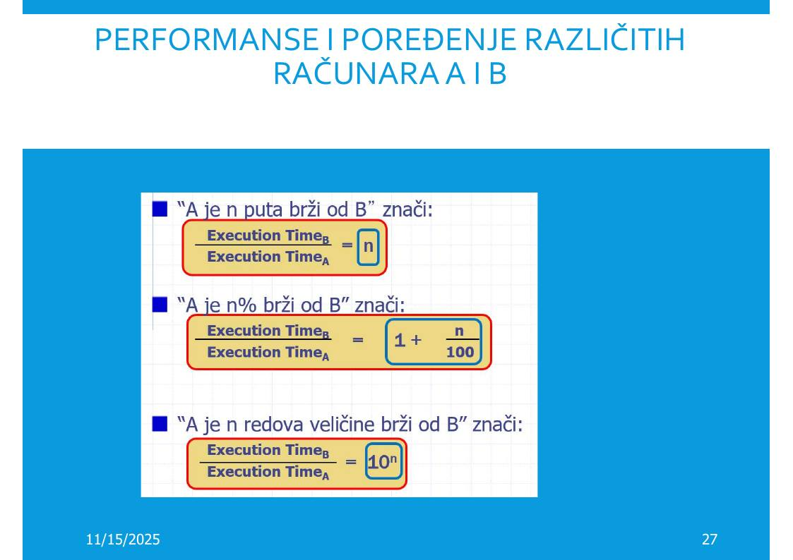
Kad imamo vremena, treba nam precizan jezik za poređenje. Performansa je obrnuto srazmerna vremenu: performansa = 1 / vreme izvršavanja. Kraće vreme, veća performansa. Zato se na slajdu 27 u razlomku uvek gore piše vreme sporijeg (B), a dole vreme bržeg (A):
Na našem albumu: na jednom jezgru 100 s, na pet jezgara 60 s. 100/60 = 1,67, pa je verzija sa pet jezgara 1,67 puta brža, odnosno 67% brža. Ako bi neki superračunar to uradio za 0,1 s, odnos bi bio 100/0,1 = 1000 = 10³, dakle 3 reda veličine brže.
Program traje 12 s na računaru B i 8 s na računaru A. Koliko je A brži?
Ceo račun na jednom primeru (slajd 31)
Slajd 31 spaja takt, CPI i broj instrukcija u jedan zadatak. Pazi kako se CPI dobija iz faza izvršavanja instrukcije: svaka instrukcija prolazi kroz uzimanje instrukcije, uzimanje operanada, izvršavanje i upis rezultata (te faze detaljno radimo u Modulu 3).
- Jedna instrukcija: 2 + 2 + 4 + 0 = 8 ciklusa. To je CPI.
- Ceo program: 8 × 2000 = 16 000 ciklusa.
- T = 1/10¹² s = 1 ps. Vreme = 16 000 × 10⁻¹² s = 16 × 10⁻⁹ s = 16 ns.
Laboratorija ispod je podešena baš na ovaj zadatak. Promeni brojeve i prati korake:
- Vreme A = 5·10⁹ × 1,6 / 2,5·10⁹ = 8 / 2,5 = 3,2 s.
- Vreme B = 5·10⁹ × 2,2 / 3·10⁹ = 11 / 3 = 3,67 s.
- A je brži: 3,67 / 3,2 = 1,15 puta (15% brži), iako ima niži takt.
Brzina nije samo jedan broj (slajd 39)
Do sada je „brže“ značilo „kraće vreme jednog programa“. Slajd 39 podseća da postoji više aspekata performansi, i da su za različite sisteme važni različiti:
| Pojam | Značenje | Primer |
|---|---|---|
| Latency (latentnost, kašnjenje) | Vreme od početka do kraja jednog posla | Za koliko se otvori jedna veb strana |
| Throughput (propusnost, propusni opseg) | Broj poslova završenih u jedinici vremena | Koliko zahteva u sekundi server obradi |
| Availability (raspoloživost) | Deo vremena kada sistem radi | 99,9% znači oko 8,8 sati prekida godišnje |
| Power consumption (potrošnja) | Meri se kao performanse po vatu | Bitno za telefone (baterija) i data centre (račun za struju) |
Latentnost je „za koliko jedan auto stigne od Beograda do Novog Sada“, a propusnost „koliko auta prođe kroz naplatnu rampu za sat“. Dodavanje traka na autoputu (više jezgara) povećava propusnost, ali jedan auto ne stiže brže. To je druga strana Amdalovog zakona: više jezgara odlično povećava propusnost servera koji opslužuje hiljade nezavisnih korisnika, a malo pomaže latentnosti jednog programa sa velikim sekvencijalnim delom.
Završni primer: koje poboljšanje izabrati (slajdovi 46–50)
Sad imamo sve alate da rešimo najteži primer sa predavanja, koji spaja CPI, takt i Amdalov zakon.

- Branch CPI 4 → 3 (slajd 47). Ubrzava se deo f = 0,2; F = staro/novo = 4/3 = 1,33. S = 1 / (0,8 + 0,2/1,33) = 1 / (0,8 + 0,15) = 1,05.
- Takt 2 → 2,3 GHz (slajd 48). Takt ubrzava ceo program, pa je f = 1; F = 2,3/2 = 1,15. S = 1 / (0 + 1/1,15) = 1,15.
- Store CPI 3 → 2 (slajd 49). f = 0,1; F = 3/2 = 1,5. S = 1 / (0,9 + 0,1/1,5) = 1 / 0,967 = 1,034.
Zašto je kod povećanja takta f = 1?
Paralelizam u procesoru i oko njega, i princip lokalnosti
Do sada smo paralelizam videli na nivou celog programa: delovi albuma na različitim jezgrima. Slajdovi 32–38 idu korak dublje i odgovaraju na dva pitanja. Prvo: kako su više procesora i memorija uopšte povezani? Drugo: kako i jedan procesor iznutra radi više stvari odjednom?
Kako više procesora deli memoriju (slajd 32)
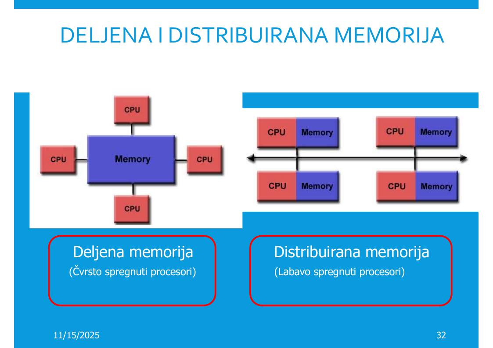
Kad imamo više procesora, odmah se postavlja pitanje: gde su podaci? Slajd 32 pokazuje dva odgovora. Levo su četiri CPU-a oko jedne zajedničke memorije (Memory u sredini). To je deljena memorija, a procesori se zovu čvrsto spregnuti: svi vide iste podatke i komuniciraju tako što pišu i čitaju istu memoriju. Tako rade jezgra u tvom laptopu, i tako bi radio naš album: svih pet jezgara čita fotografije iz istog RAM-a.
Desno su četiri para CPU + sopstvena memorija, povezani međusobno. To je distribuirana memorija, a procesori su labavo spregnuti: svaki ima svoje podatke, a sa drugima razmenjuje poruke preko mreže. Tako rade klasteri servera i superračunari. Prednost: može se povezati ogroman broj čvorova. Mana: slanje poruke preko mreže traje mnogo duže od čitanja iz sopstvene memorije, pa to postaje deo onog „dodatnog opterećenja“ koje kvari Amdalovu krivu (crvena kriva sa slajda 21).
Ko raspoređuje posao na jezgra (slajd 33)
Većina današnjih operativnih sistema podržava rad sa više jezgara (multi-core). OS komunicira sa svakim jezgrom kao sa posebnim procesorom, a njegov planer (scheduler) raspoređuje niti (thread-ove) i procese na različita jezgra. Kad naša aplikacija pokrene 5 niti za obradu slika, upravo planer odlučuje koja nit ide na koje jezgro i kada. Ovo je most ka drugom delu predmeta (operativni sistemi, dodela procesora procesima).
Ciklus izvršavanja instrukcije (slajdovi 34–35)

Levo na slajdu 34 je ciklus kroz koji prolazi svaka instrukcija, u šest koraka koji se ponavljaju u krug:
- Fetch[PC]: donesi instrukciju sa adrese na koju pokazuje PC (brojač naredbi iz Modula 1);
- Decode: dekodiraj je, to jest shvati šta treba uraditi;
- Read Inputs: pročitaj operande (ulazne podatke);
- Execute: izvrši operaciju u ALU;
- Write Output: upiši rezultat;
- Next PC: pređi na sledeću instrukciju, pa nazad na korak 1.
Desno je isto to na šemi. PC pokazuje na instrukciju I-1 u programu u memoriji (program je niz I-1, I-2, I-3, I-4). Ona se donese (fetch) u registar instrukcije (instruction register) i tamo dekodira (decode, zaokruženo crveno). Operandi op1 i op2 se čitaju (read) iz registara, ALU izvršava operaciju (execute) i postavlja zastavice (flags), a rezultat (output) se upisuje (write) nazad u registre. Ovo je onaj isti krug sa slajda 16 iz Modula 1, sada sa imenima faza.

Slajd 35 ponavlja istu sliku i crveno izdvaja faze Read Inputs i Write Output. To su faze u kojima se pristupa podacima (registrima ili memoriji). Zašto su posebno označene? Zato što tu nastaju zastoji ako je memorija spora, i tu nastaju problemi kad dve instrukcije rade istovremeno, a koriste iste podatke (druga hoće da pročita ono što prva još nije upisala). Zapamti ovo, trebaće nam za trenutak.
Četiri načina da procesor radi više stvari odjednom (slajd 36)
Slajd 36 kaže: da bi procesori bili brži, paralelizam se može ostvariti na četiri načina. Ovo su osnovni principi dizajna savremenih procesora.
1. Pipelining (protočna obrada). Faze iz slajda 34 rade različiti delovi procesora. Dok jedan deo izvršava instrukciju 1, drugi već dekodira instrukciju 2, a treći donosi instrukciju 3 iz memorije. Isto kao pokretna traka u fabrici, ili pranje veša: dok se prva tura suši, druga se pere. Pojedinačna instrukcija ne traje kraće, ali kad se traka napuni, u svakom ciklusu se završi po jedna, pa CPI teži 1.
Zašto baš k + (n − 1)? Prvoj instrukciji treba svih k ciklusa da prođe kroz celu traku. Posle toga traka je puna i u svakom sledećem ciklusu izlazi po jedna instrukcija, pa preostalih n − 1 instrukcija traje još n − 1 ciklusa. Za mnogo instrukcija ubrzanje se približava broju faza k, ali ga nikad ne dostiže.
A sad se vraća slajd 35. Ako instrukcija 2 treba rezultat instrukcije 1, a instrukcija 1 ga još nije upisala (Write Output), imamo hazard podataka: traka mora da stane i čeka. Ako je instrukcija 1 skok, ne znamo koja je sledeća instrukcija dok se skok ne izvrši: to je upravljački hazard, pa procesor ili čeka ili „pogađa“ (predviđanje skokova). Hazardi su razlog što pravi CPI nije tačno 1.
2. ILP (Instruction Level Parallelism), paralelizam na nivou instrukcija. Procesor ima više izvršnih jedinica (npr. dve ALU, jedinicu za decimalne brojeve, jedinicu za Load/Store) i u istom ciklusu pokrene više nezavisnih instrukcija. Takav procesor se zove superskalarni. Na primer, a = b + c i x = y * z ne zavise jedna od druge, pa mogu istovremeno. Tako CPI pada i ispod 1 (dve instrukcije po ciklusu znače CPI = 0,5).
3. DLP (Data Level Parallelism), paralelizam na nivou podataka. Ista operacija nad mnogo podataka odjednom. Vektorske (SIMD) instrukcije, npr. AVX, saberu 8 parova brojeva jednom instrukcijom. Grafička kartica je ekstremni primer. To su oni redovi „plus vectorization“ i „plus AVX intrinsics“ iz tabele sa slajda 5 koji su dali najveće ubrzanje. U našem albumu to je idealno: popravka boja radi istu operaciju nad milionima piksela.
4. TLP (Thread Level Parallelism), paralelizam na nivou niti. Program se podeli na više niti (thread-ova) koje rade na različitim jezgrima. To je tačno ono što smo radili sa albumom u delu 1, i na šta se odnosi Amdalov zakon.
Koji od četiri oblika paralelizma pomaže i programu koji je potpuno sekvencijalan (f = 0 po Amdalu)?
Šta je danas u procesoru (M3_02, slajdovi 4–6, 12–13)
Na početku Modula 3 profesor ponovo pokazuje procesor i memoriju, pa to ovde dodajemo jer zatvara priču o performansama.

Levo je memorija (ili cela hijerarhija memorije), desno CPU, a između njih magistrala. U CPU su upravljačka jedinica (Control Unit) i Data Path (put podataka, izvršna jedinica): registri i A/L jedinica. Rečenica ispod je cilj Modula 4: razumevanje komunikacije između centralnog procesora i glavne memorije.

Primer sa slajda je Intel Core i9-10900K: 10 jezgara, 20 niti, 3,30 GHz osnovna frekvencija, 13,75 MB L3 keša. U savremenim računarima ceo CPU je na jednom čipu integrisanog kola koji se zove mikroprocesor. Kao ključne faktore koji utiču na performanse profesor navodi broj jezgara, frekvenciju (GHz), veličinu keša (L1, L2, L3) i tip procesora (CISC ili RISC). Sve četiri smo u ovom modulu povezali sa formulom: jezgra preko Amdala, frekvencija preko T, keš preko CPI, a tip procesora preko IC i CPI.
Slajd 13 iz istog predavanja nabraja moguće načine za poboljšanje performansi, i sad za svaki znaš zašto radi i gde mu je granica:
- Povećanje frekvencije takta: smanjuje T, ali je ograničeno toplotom (kraj Denardovog skaliranja).
- Protočna obrada (pipelining): smanjuje CPI prema 1.
- Superskalarni pristup (više protočnih linija u procesoru): smanjuje CPI ispod 1.
- Povećanje veličine i brzine keša (L1, L2, L3): manje čekanja na memoriju, manji CPI.
- Povećanje broja procesora: TLP, ograničeno Amdalovim zakonom.
- Povećanje broja jezgara unutar procesora (multi-core): isto, TLP i Amdal.
Hyper-Threading (M3_02, slajdovi 8–9)
Na slici i9 piše „10 jezgara, 20 niti“. Kako 10 jezgara izvršava 20 niti? Multithreading je podela posla na više softverskih niti koje se izvršavaju paralelno, po jedna nit na jednom jezgru. Hyper-Threading (Intelov naziv za SMT, simultaneous multithreading) je hardverska tehnologija koja dozvoljava da na jednom fizičkom jezgru rade 2 niti istovremeno. Operativni sistem jedno fizičko jezgro vidi kao 2 „logička jezgra“.
Iznutra, jezgro dobije dupli skup registara (svaka nit ima svoj PC, svoje registre i svoje stanje), ali obe niti dele izvršne jedinice (ALU, FPU) i keš. Zašto to pomaže? Jedna nit često čeka, na primer podatak iz RAM-a, što traje stotine ciklusa (seti se hijerarhije memorije iz Modula 1). Dok ona čeka, izvršne jedinice bi bile besposlene; sa Hyper-Threading-om ih koristi druga nit.
Zato Hyper-Threading nije isto što i duplo više jezgara. Prema slajdu, povećava propusnost do oko 30% u serverskim aplikacijama. Kod programa koji već maksimalno koriste izvršne jedinice dobitak je mali ili ga nema.
Laptop ima 4 fizička jezgra sa Hyper-Threading-om. Koliko „procesora“ vidi operativni sistem, i da li je to kao 8 pravih jezgara?
Princip lokalnosti (slajd 37)
Ostao je još jedan princip dizajna, možda najvažniji za brzinu u praksi. Slajd 37: programi provode oko 90% vremena izvršavanja u oko 10% svog koda. Zbog toga se sa razumnom tačnošću može predvideti koje instrukcije i podatke će program koristiti u bliskoj budućnosti. Lokalnost ima dva oblika:
- Vremenska lokalnost: ono što je upravo korišćeno, verovatno će uskoro biti korišćeno opet. Primer: telo petlje se izvršava 1000 puta, a promenljiva
sumase koristi u svakom krugu. - Prostorna lokalnost: ako je korišćena jedna adresa, verovatno će uskoro biti korišćene i susedne. Primer: elementi niza a[0], a[1], a[2] stoje jedan do drugog u memoriji, a i instrukcije se izvršavaju redom.
U našem albumu obe su prisutne: kod za obradu jedne slike je mala petlja koja se ponavlja 1000 puta (vremenska), a pikseli jedne slike se obrađuju redom, jedan do drugog (prostorna). Na lokalnosti počiva keš memorija: kad procesor zatraži jedan bajt, keš donese ceo blok oko njega (npr. 64 bajta, prostorna lokalnost) i čuva ga neko vreme (vremenska lokalnost). Zato 90% i više pristupa „pogodi“ keš, i procesor retko čeka spori RAM. Kako keš tačno radi, detaljno radimo u Modulu 3.
Program prolazi kroz niz element po element. Koja je to lokalnost? A brojač petlje i koji se menja u svakom krugu?
Rezime predavanja (slajd 38)

Profesor celo predavanje sažima u tri kutije:
- Amdalov zakon: S = 1/(s + f/p). Na slajdu je s = 1 − f sekvencijalni deo, a p broj procesora (isto što i N u ovom vodiču).
- Princip dizajna „make the common case fast“.
- CPU performanse: T = N_instr × CPI / f. Pazi: ovde T znači ukupno CPU vreme, a ne trajanje jednog ciklusa kao u T = 1/f; N_instr je isto što i IC.
- Principi dizajna: iskoristi paralelizam, iskoristi princip lokalnosti, ubrzaj deo koda koji se često koristi.
Domaći zadaci (slajdovi 51–52)
Predavanje se završava sa dva domaća zadatka: računari sa 4 i sa 6 jezgara, keš L1 od 64 KB sa linijama od 32 bajta, RAM od 16 GB i od 128 GB. Pitanja su koliko lokacija procesor može da adresira, koliko linija ima keš i koliko adresa keš može da mapira. Za njih ti trebaju stepeni dvojke iz Modula 1 (deo 1.6) i keš memorija iz Modula 3, zato su potpuno rešena, korak po korak, u završnom poglavlju ★.
Ceo Modul 2 u jednom pogledu
- Kad takt više ne raste, ubrzanje dolazi „sa vrha“: bolji softver, algoritmi i arhitektura, i više jezgara (sl. 3–5).
- Program ima sekvencijalni deo (1 − f) i deo koji se može paralelizovati (f); sekvencijalni deo se ne smanjuje dodavanjem jezgara (sl. 10–15).
- Amdalov zakon: S = 1/((1 − f) + f/N), a najviše 1/(1 − f). Naš album: f = 0,5, na 5 jezgara 1,67 puta brže, nikad više od 2 (sl. 13–22).
- Generalizacija: za bilo koje poboljšanje F puta, S = 1/((1 − f) + f/F); zato „make the common case fast“ (sl. 18, 40–45).
- CPU vreme = IC × CPI × T = IC × CPI / f, gde je T = 1/f; prosečan CPI je ponderisani prosek po klasama instrukcija (sl. 24–31).
- Program i kompajler menjaju IC, ISA i kompajler i CPI, organizacija CPI i takt, tehnologija samo takt; „A je n puta brži“ znači vreme_B / vreme_A = n (sl. 25, 27).
- Više procesora deli memoriju (čvrsto spregnuti) ili ima svaki svoju (labavo spregnuti); OS planer raspoređuje niti na jezgra (sl. 32–33).
- Jedno jezgro ubrzavaju pipelining, ILP, DLP, a više jezgara TLP; Hyper-Threading daje 2 niti po jezgru; lokalnost (90% vremena u 10% koda) omogućava keš (sl. 34–37).
Dodatni izvori: J. Gustafson, Amdahl's Law · Georgia Tech, Amdahl's Law Quiz (video sa slajda) · Intel, Hyper-Threading Technology Architecture (Cambridge) · Intel, Architecture All Access: Modern CPU Architecture (video sa slajda)
Procesor iznutra: registri, instrukcije i prvi program
U Modulu 1 smo procesor gledali izdaleka: upravljačka jedinica, ALU, registri, magistrala. U Modulu 2 smo merili koliko je brz. Sada ulazimo unutra i odgovaramo na pitanje koje je od početka u pozadini celog predmeta: kako procesor zapravo izvršava program, instrukciju po instrukciju, registar po registar.
Kroz ceo Modul 3 pratimo jedan isti, najmanji mogući program: naredbu A = B + C;, to jest „saberi dva broja i sačuvaj zbir“. To je ono isto sabiranje ocena iz Modula 1, samo svedeno na jedan korak. Videćemo kako ta naredba izgleda kao mašinski kod, kako je procesor izvršava kroz faze, kako je asembler prevodi i kako bi izgledala na različitim vrstama procesora.
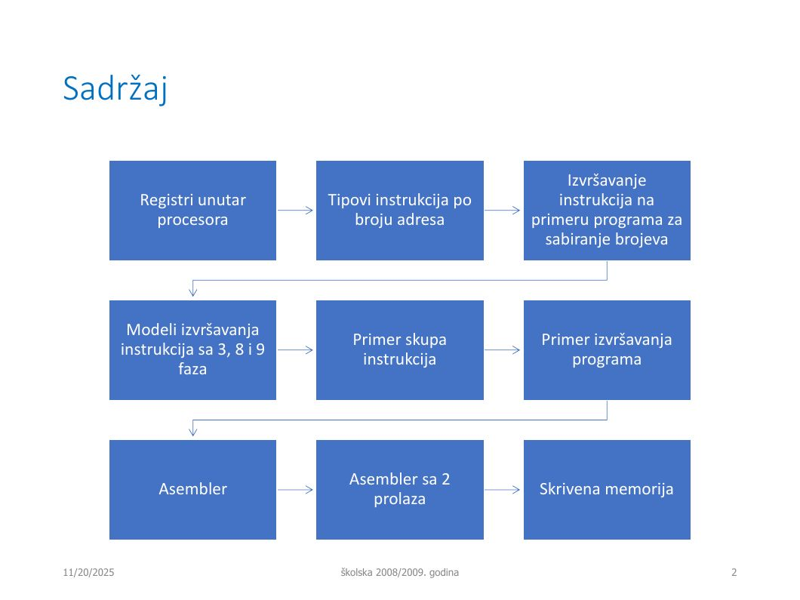
Slajd 2 je mapa ovog predavanja, i strelice na njemu su upravo redosled naše priče: registri unutar procesora → tipovi instrukcija po broju adresa → izvršavanje instrukcija na primeru programa za sabiranje → modeli izvršavanja sa 3, 8 i 9 faza → primer skupa instrukcija → primer izvršavanja programa → asembler → asembler sa 2 prolaza → skrivena (keš) memorija. Posle toga drugo predavanje Modula 3 (M3_02) gleda skup instrukcija „odozgo“: koje vrste procesora postoje i po čemu se razlikuju (CISC i RISC).
Šta procesor radi sa svakom instrukcijom (slajd 3)
Za svaku instrukciju procesor obavlja do pet poslova, i sve što ćemo raditi u ovom modulu su detalji ovih pet koraka:
- Donošenje instrukcije iz memorije (fetch). Program je u RAM-u (Von Neumann, Modul 1), pa instrukcija mora prvo da se prenese u procesor.
- Dekodiranje (analiza) instrukcije. Upravljačka jedinica „pročita“ operacioni kod i shvati šta treba da se uradi.
- Donošenje podataka iz memorije, ako instrukcija radi sa podatkom koji je u memoriji.
- Izvršavanje instrukcije, to jest obrada podataka: ALU uradi operaciju.
- Upisivanje rezultata u registar ili u memoriju.
Da bi sve to mogao, procesoru trebaju mala mesta za pamćenje unutar samog čipa: gde je sledeća instrukcija, koja instrukcija se upravo izvršava, koji podatak je stigao iz memorije. To su registri.
Registri i njihove uloge (slajdovi 4–5)
Registar je mala memorijska ćelija unutar procesora, širine jedne reči (npr. 32 ili 64 bita). Registri su najbrža memorija u računaru, vrh hijerarhije memorije iz Modula 1. Slajdovi 4 i 5 ih dele u dve grupe:
Registri vidljivi korisniku
Dostupni programeru u asembleru ili mašinskom jeziku; programer (ili kompajler) ih koristi da bi što ređe išao u sporu memoriju. To su:- registri opšte namene,
- registri podataka,
- registri adresa,
- registri za uslovne kodove (zastavice).
Upravljački i statusni registri
Koristi ih upravljačka jedinica za upravljanje radom procesora, i operativni sistem za upravljanje izvršavanjem programa. Programer ih obično ne menja direktno. To su:- PC, IR, MAR, MBR, PSW.
Setićeš se iz Modula 1 (slajd 36): skup registara je jedna od šest stvari koje čine arhitekturu procesora. Ovo je razlog: registre iz leve kolone programer mora da poznaje da bi napisao program.
Udžbenik i slajdovi koriste srpske nazive, a drugi materijali (i Modul 4) engleske. Evo obe verzije na jednom mestu, uz analogiju koja pomaže da ih zapamtiš:
| Srpski naziv | Engleski | Šta čuva | Analogija |
|---|---|---|---|
| BN, brojač naredbi (programski brojač) | PC, Program Counter | Adresu sledeće instrukcije koju treba izvršiti | Obeleživač u knjizi: gde nastavljaš da čitaš |
| RN, registar naredbi | IR, Instruction Register | Instrukciju koja se trenutno izvršava | Rečenica koju upravo čitaš |
| ARM, adresni registar memorije | MAR, Memory Address Register | Adresu kojoj se pristupa u memoriji; odatle adresa ide na adresnu magistralu | Broj police koji si dao magacioneru |
| PRM, prihvatni registar memorije | MBR, Memory Buffer Register (MDR) | Podatak koji je upravo pročitan iz memorije ili koji treba upisati | Pult na koji magacioner spusti robu |
| PSW, statusni registar | Program Status Word | Zastavice: Z (rezultat nula), N (negativan), C (prenos), V (prekoračenje), dozvola prekida, režim rada (korisnički/privilegovani) | Kontrolne lampice na instrument tabli |
| AK, akumulator | AC, Accumulator | Jedan operand, a posle operacije i rezultat | Ekran kalkulatora |
Pazi i na imena: ARM ovde znači „adresni registar memorije“ i nema veze sa firmom ARM i njenim procesorima (deo 4 ovog modula). Isto tako, instrukcija
MAR reg iz skupa sa slajda 19 nije registar MAR.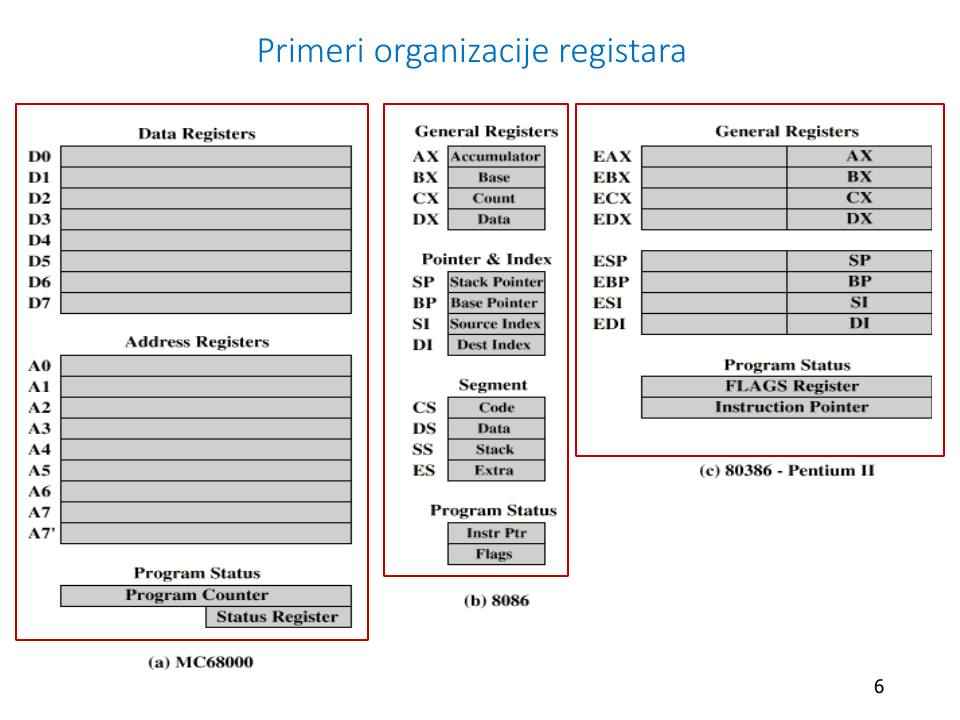
Slajd 6 pokazuje kako to izgleda na tri stvarna procesora. (a) Motorola MC68000 ima 8 registara podataka (D0–D7) i 8 adresnih registara (A0–A7, gde je A7 pokazivač steka), plus Program Counter i Status Register: podaci i adrese su strogo odvojeni. (b) Intel 8086 (16-bitni) ima opšte registre AX (Accumulator), BX (Base), CX (Count), DX (Data); pokazivače i indekse SP (Stack Pointer), BP (Base Pointer), SI (Source Index), DI (Destination Index); segmentne registre CS (Code), DS (Data), SS (Stack), ES (Extra); i statusne: Instr Ptr (to je PC) i Flags (to je PSW). (c) 80386 – Pentium II (32-bitni) ima iste registre proširene na 32 bita, pa EAX sadrži AX, ESP sadrži SP i tako dalje. Poruka slajda: različite arhitekture različito organizuju registre, ali svaka ima brojač naredbi, statusni registar i registre za podatke i adrese. Intelove registre detaljno radimo u Modulu 4.
Procesor upravo izvršava instrukciju sa adrese 5. Šta je u BN, a šta u RN?
Najjednostavniji računar: akumulatorska mašina (slajd 7)
Da bi se princip video bez suvišnih detalja, udžbenik koristi zamišljen, vrlo jednostavan računar. Sa njim ćemo raditi većinu ovog modula, pa ga dobro upoznaj:
- Memorija ima 16 lokacija (adrese 0–15), svaka od 8 bita.
- Instrukcija ima 8 bita: 4 bita operacioni kod (opkod) + 4 bita adresa. Četiri bita za adresu daju 2⁴ = 16 adresa, upravo koliko ima memorija. Četiri bita za opkod daju do 16 različitih instrukcija.
- Procesor ima BN, RN, A/L jedinicu i akumulator.

Tabela na slajdu je ceo skup instrukcija ove mašine. Svaka instrukcija ima četiri imena: opis (šta radi, zapisano formulom), brojnu oznaku, binarni opkod i simbolički opkod (reč koju pišemo u asembleru):
| Opis instrukcije | Brojna oznaka | Binarni opkod | Simbolički opkod | Šta radi, rečima |
|---|---|---|---|---|
| AK ← 0 | 0 | 0000 | CLR | Obriši akumulator |
| AK ← S(M) | 1 | 0001 | LOAD | Napuni akumulator sadržajem lokacije M |
| M ← S(AK) | 2 | 0010 | STORE | Upiši akumulator u lokaciju M |
| AK ← S(AK) + S(M) | 3 | 0011 | ADD | Dodaj sadržaj M na akumulator |
| AK ← S(AK) − S(M) | 4 | 0100 | SUB | Oduzmi |
| AK ← S(AK) × S(M) | 5 | 0101 | MUL | Pomnoži |
| AK ← S(AK) / S(M) | 6 | 0110 | DIV | Podeli |
| Prekid rada | 7 | 0111 | HALT | Zaustavi program |
Notacija koju moraš da čitaš tečno: S(M) znači „sadržaj lokacije M“, a strelica ← znači „upiši u“. Dakle AK ← S(AK) + S(M) čitaj: „u akumulator upiši zbir sadržaja akumulatora i sadržaja lokacije M“.
Tekst sa slajda postavlja tri pravila koja važe za svaki računar: da bi izvršio obradu, računar mora da izvrši niz pojedinačnih instrukcija; skup instrukcija koje čine celinu zove se program; procesor može da izvrši samo instrukciju koja se nalazi u memoriji, nad podacima koji su takođe u memoriji ili u registrima.
Naš program: saberi dva broja (slajd 8)
Zadatak sa slajda 8: saberi broj sa adrese 8 i broj sa adrese 9, a rezultat upiši na adresu 10. U višem jeziku to je baš naša naredba A = B + C; (B je na adresi 8, C na 9, A na 10). Neka je B = 20 i C = 60:
Binarno Simbolički Značenje Posle izvršenja 0001 1000 LOAD 8 AK ← S(8) AK = 20 0011 1001 ADD 9 AK ← S(AK) + S(9) AK = 20 + 60 = 80 0010 1010 STORE 10 10 ← S(AK) M[10] = 80 0111 0000 HALT prekini sa radom
Pročitaj prvu instrukciju bit po bit: 0001 je opkod za LOAD, a 1000 je adresa 8. Procesor ne vidi reči LOAD ili ADD, vidi samo ovih osam bita, a dekoder operacionog koda u upravljačkoj jedinici iz prva četiri bita zaključi koja je instrukcija. Probaj sam:
Upiši 8 bita (npr. 00111001). Prva 4 bita su opkod, druga 4 adresa. Ovo radi dekoder operacionog koda.
Ove instrukcije se zovu jednoadresne jer navode samo jednu adresu: drugi operand je uvek u akumulatoru. Zato slajd 8 naglašava: računar koji koristi jednoadresne instrukcije mora da ima akumulator, čija je funkcija da u izvršenju jedne instrukcije čuva jedan operand, a zatim i rezultat.

Desno na slajdu 8 je mala skica koja već najavljuje sledeći deo: put kojim instrukcija stiže do izvršenja u stvarnom procesoru. Iz RAM-a ide u L2 keš, pa u L1 keš za instrukcije, odatle je uzima jedinica za donošenje (Fetch Unit), predaje jedinici za dekodiranje (Decode Unit), pa izvršnoj jedinici (Execution Unit), a podaci se čitaju i upisuju preko L1 keša za podatke. Prepoznaješ podeljen L1 keš, modifikovanu Harvard arhitekturu iz Modula 1: instrukcije i podaci imaju odvojene keševe.
Kako bi izgledala binarna instrukcija „oduzmi sadržaj lokacije 12 od akumulatora“?
0100, a 12 binarno je 1100. Instrukcija je 0100 1100. Proveri u dekoderu iznad.A = B + C; u višem jeziku. Kako izgleda instrukcija kad je posmatramo kao strukturu, i da li uvek mora da ima tačno jednu adresu?Od višeg jezika do instrukcije (slajdovi 9–10)
Slajd 9 podseća da se programi pišu u višim jezicima. Pokazuje A = B + C; i deo Java koda (otvaranje mrežne veze sa Socket, učitavanje ključeva sa KeyStore), i kaže: program se mora prevesti u binarni oblik. Jedna linija Jave postaje desetine ili stotine mašinskih instrukcija, a naša naredba A = B + C postaje četiri (LOAD, ADD, STORE, HALT). To je prevođenje „1 : n“ sa nivoa programskog jezika na nivo ISA, koje smo videli na stubu nivoa transformacije u Modulu 1.
Slajd 10 daje strukturu instrukcije. Svaka instrukcija mora da ima operacioni deo (opkod), koji kaže šta treba uraditi, i može da ima jedan ili više adresnih delova, koji kažu sa čim to treba uraditi. U našem simboličkom kodu LOAD B / ADD C / STORE A / HALT: LOAD, ADD, STORE i HALT su opkodi, a B, C i A adresni delovi; HALT nema adresni deo jer mu ne treba podatak.
Koliko adresa ima instrukcija (slajd 11)
Za binarnu operaciju kao što je sabiranje potrebne su, u principu, tri adrese: A1 (adresa prvog operanda), A2 (adresa drugog operanda) i A3 (adresa rezultata). Instrukcija može sve tri da navede eksplicitno, ili neke od njih da „podrazumeva“. Prema tome koliko ih navodi, instrukcije su troadresne, dvoadresne, jednoadresne ili nulaadresne. Evo naše naredbe A = B + C na sva četiri načina:
| Tip | Oblik | A = B + C | Broj instrukcija | Napomena |
|---|---|---|---|---|
| Troadresne | OP A3, A1, A2 | ADD A, B, C | 1 | Najmanje instrukcija, ali je svaka dugačka (tri adrese) |
| Dvoadresne | OP A1, A2 (rezultat u A1) | MOV A, BADD A, C | 2 | Jedan operand se „pregazi“ rezultatom, pa ga prvo kopiramo. Tipično za x86 |
| Jednoadresne | OP A (drugi operand i rezultat su u AK) | LOAD BADD CSTORE A | 3 | Mora postojati akumulator. To je naša mašina |
| Nulaadresne | OP (operandi na vrhu steka) | PUSH BPUSH CADDPOP A | 4 | Stek mašina; ADD skine dva broja sa vrha, sabere i stavi rezultat na vrh |
Nulaadresne instrukcije koriste stek (stack): deo memorije koji radi po principu LIFO (Last In, First Out), poslednje stavljeno prvo se skida, kao gomila tanjira. Postoje samo dve operacije: PUSH (stavi na vrh) i POP (skini sa vrha). Gde je vrh, pamti registar SP (Stack Pointer, pokazivač steka), onaj A7 kod Motorole i SP kod Intela sa slajda 6. Stek se osim za nulaadresne instrukcije koristi za pozive potprograma (čuvanje adrese povratka) i za prekide (čuvanje PC i PSW, Modul 4).
Najbolje se razlika vidi kad pustiš sva četiri programa da se izvršavaju i pratiš gde je međurezultat:
Program
Stanje
Zašto troadresna instrukcija ADD A, B, C na našoj mašini sa 16 lokacija ne bi stala u 8 bita?
Jedna instrukcija korak po korak: mikrooperacije, faze i ciklus
Najvažnija slika Modula 3 (slajd 12)
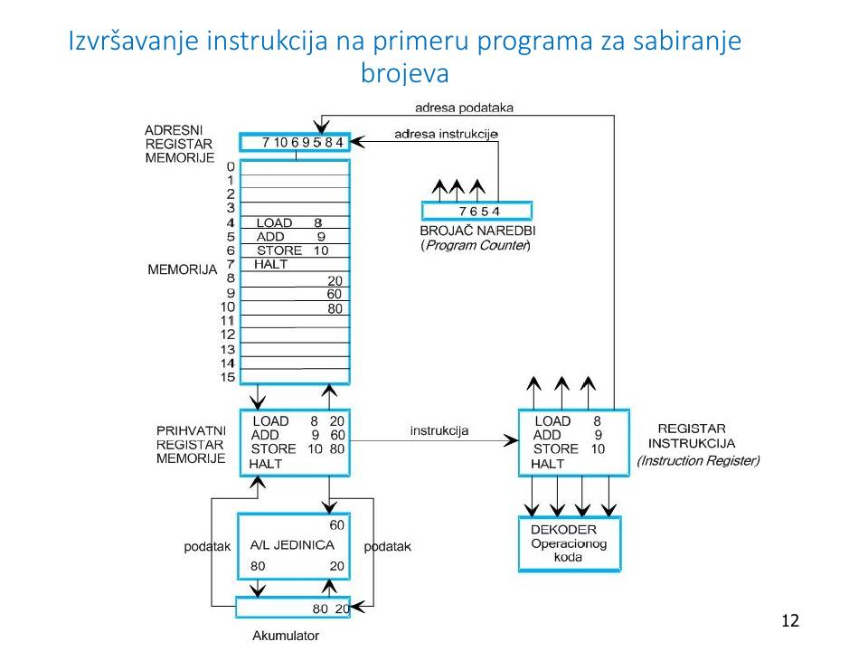
Ovu sliku profesor detaljno prolazi na tabli, jer je na njoj ceo naš program u pokretu. Čitaj je deo po deo:
- Memorija (sredina levo) ima lokacije 0–15. Program je ovde smešten na adrese 4–7 (LOAD 8, ADD 9, STORE 10, HALT), a podaci na 8, 9, 10 (20, 60, a posle izvršenja 80).
- Brojač naredbi (gore desno) prikazuje sve vrednosti kroz koje prolazi: 4, 5, 6, 7, jednu po instrukciji.
- Adresni registar memorije (gore) prikazuje redom sve adrese koje su u njega upisane: 4, 8, 5, 9, 6, 10, 7. Zapamti ovaj niz, jer pokazuje ritam rada: naizmenično adresa instrukcije pa adresa podatka. Linija adresa instrukcije dolazi iz brojača naredbi, a linija adresa podataka iz adresnog dela registra instrukcija.
- Prihvatni registar memorije (dole levo) prima redom sve što je pročitano: instrukciju LOAD 8, podatak 20, instrukciju ADD 9, podatak 60, instrukciju STORE 10, a pri upisu sadrži 80.
- Instrukcije odatle idu desno u registar instrukcija, a opkod iz njega u dekoder operacionog koda. Podaci idu dole u A/L jedinicu i akumulator, koji redom sadrži 20, pa 80.
Zašto se adresa 7 pojavljuje u adresnom registru memorije, a adresa 11 ne?
Šta se tačno dešava: mikrooperacije (slajd 13)
Slika 12 pokazuje šta prolazi kroz registre. Slajd 13 kaže kojim redom. Svaka instrukcija se izvršava kroz niz sitnih koraka koji se zovu mikrooperacije; svaki je jedno prebacivanje između registara ili jedno čitanje memorije. Evo ih za prvu instrukciju našeg programa, LOAD 8, sa adrese 4:
| # | Mikrooperacija | Šta se dešava | Faza |
|---|---|---|---|
| 1 | ARM ← S(BN) | Adresa instrukcije (iz BN, ovde 4) se upiše u adresni registar memorije | Donošenje (fetch) |
| 2 | PRM ← S(S(ARM)) | Memorija pročita lokaciju čija je adresa u ARM i stavi instrukciju u PRM. Dvostruko S znači: „sadržaj lokacije čija adresa je sadržaj ARM“ | |
| 3 | RN ← S(PRM) | Instrukcija se prebaci u registar naredbi | |
| 4 | BN ← S(BN) + 1 | BN se poveća za 1 (sada je 5); tako se obezbeđuje automatski prelazak na sledeću instrukciju | |
| 5 | ANALIZIRAJ | Dekoder pročita opkod 0001 i zaključi: LOAD | Dekodiranje |
| 6 | ARM ← S(RNA) | Adresni deo instrukcije (RNA = adresni deo RN, ovde 8) ide u ARM | Izvršavanje |
| 7 | PRM ← S(S(ARM)) | Memorija pročita lokaciju 8; podatak 20 stiže u PRM | |
| 8 | AK ← S(PRM) | Podatak se upiše u akumulator |
Prva četiri koraka su ista za svaku instrukciju: tako se instrukcija donosi. Razlikuje se samo ono posle dekodiranja. Za ADD 9 bi poslednji korak bio AK ← S(AK) + S(PRM) (sabiranje u ALU), a za STORE 10 bi se podatak kretao obrnuto: PRM ← S(AK), pa upis u memoriju na adresu iz ARM.
Napiši mikrooperacije za izvršni deo instrukcije ADD 9 (posle dekodiranja).
ARM ← S(RNA) (adresa 9 u ARM), PRM ← S(S(ARM)) (podatak 60 u PRM), AK ← S(AK) + S(PRM) (ALU sabira 20 + 60, u akumulatoru je 80).Modeli izvršavanja: 3, 8 i 9 faza (slajdovi 14–16)
Slajd 14 kaže da izvršavanje instrukcije obuhvata više koraka, ili faza. Najjednostavniji model ima 3 faze: donošenje (fetch), dekodiranje (decode) i izvršavanje (execute). Naših osam mikrooperacija se uklapa u njega: koraci 1–4 su donošenje, 5 je dekodiranje, 6–8 izvršavanje. Ali „izvršavanje“ tu krije mnogo toga, pa udžbenik koristi detaljniji model sa 9 faza:
| # | Faza | Engleski (sa slike) | Objašnjenje |
|---|---|---|---|
| 1 | Donošenje instrukcije iz memorije u procesor | Instruction fetch | MAR ← PC, čitanje, IR ← MBR |
| 2 | Dekodiranje operacionog koda | Instruction operation decoding | Šta treba uraditi i koliko operanada ima |
| 3 | Izračunavanje adrese operanda | Operand address calculation | Zavisi od načina adresiranja (Modul 4) |
| 4 | Donošenje operanda iz memorije | Operand fetch | Ako ima više operanada, faze 3–4 se ponove |
| 5 | Izvršavanje instrukcije | Data operation | ALU radi operaciju |
| 6 | Izračunavanje adrese za upis rezultata | Operand address calculation | Gde ide rezultat |
| 7 | Upisivanje rezultata u memoriju | Operand store | Ako ima više rezultata, faze 6–7 se ponove |
| 8 | Provera da li postoji prekid | Interrupt check | Ako je stigao zahtev za prekid, ide se na obradu prekida |
| 9 | Izračunavanje adrese sledeće instrukcije | Instruction address calculation | Obično PC + 1 (ili + dužina instrukcije); kod skoka nova adresa |
Model sa 8 faza (slajd 15) je isti, samo bez provere prekida. Faze nisu obavezne za svaku instrukciju: LOAD 8 ima donošenje operanda, ali nema upis rezultata u memoriju; STORE 10 ima upis, ali ne donosi operand iz memorije; HALT nema nijedan operand.
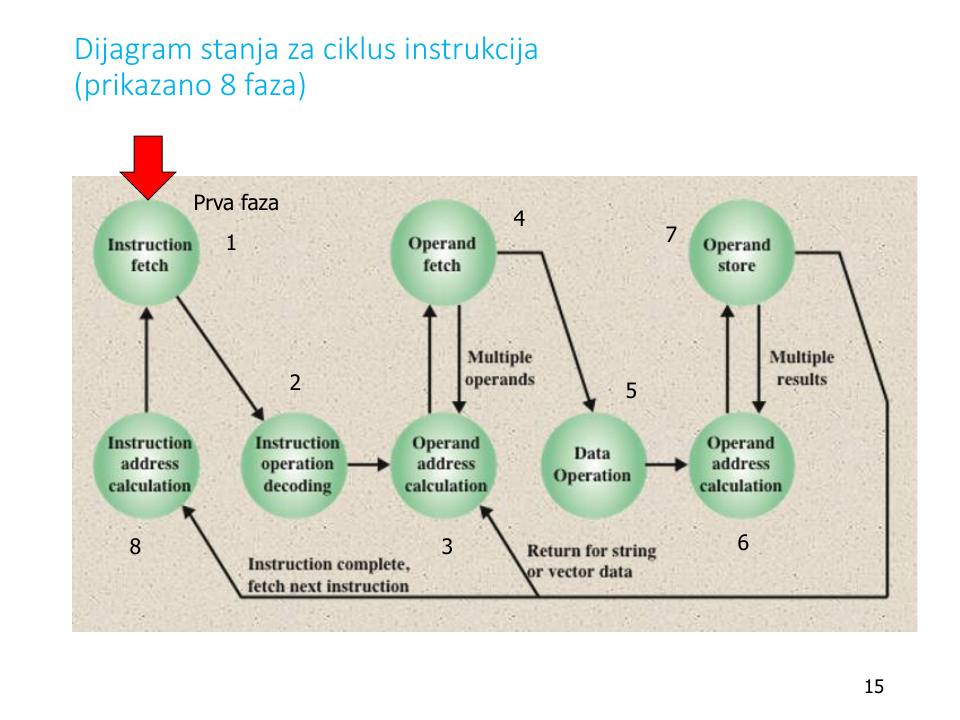

Slajdovi 15 i 16 crtaju faze kao dijagram stanja: svaki krug je jedno stanje (faza), a strelice su prelazi. Crvena strelica označava prvu fazu. Gornji red krugova su faze u kojima se pristupa memoriji (instruction fetch, operand fetch, operand store); donji red su faze unutar procesora (računanje adresa, dekodiranje, operacija). Tri petlje na dijagramu treba da prepoznaš: Multiple operands (između 3 i 4: ako instrukcija ima više operanada, vrati se i donesi sledeći), Multiple results (između 6 i 7: više rezultata) i Return for string or vector data (iz 5 nazad na 3: instrukcija koja radi nad nizom ponavlja to za svaki element). Na slajdu 16 je dodata faza 8, Interrupt check: ako nema prekida (No interrupt), ide se na fazu 9 i sledeću instrukciju; ako ima (Interrupt), ide se u stanje Interrupt (obrada prekida, Modul 4), pa tek onda na sledeću instrukciju.
U infografici ispod pusti kroz dijagram svaku instrukciju našeg programa i gledaj koje faze preskače:
Gornji red: faze u kojima se pristupa memoriji. Donji red: faze unutar procesora. Sivo: faze koje ova instrukcija preskače.
Koje faze od 9 prolazi instrukcija STORE 10 na akumulatorskoj mašini?
Kakve sve instrukcije postoje (slajdovi 17–18)

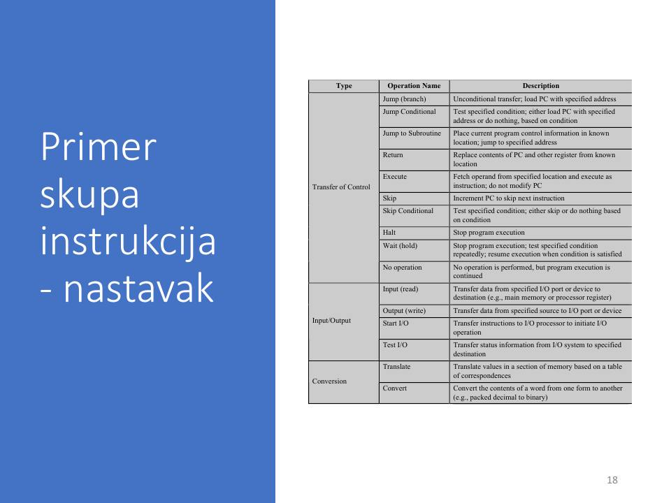
Slajdovi 17 i 18 su tabela iz Stallingsove knjige sa tipičnim instrukcijama, podeljenim u grupe. Grupe vredi zapamtiti, jer svaka odgovara jednoj od četiri funkcije računara iz Modula 1: prenos podataka i U/I su prenos, aritmetičke i logičke su obrada, a prenos upravljanja je upravljanje.
| Grupa | Instrukcija | Šta radi |
|---|---|---|
| Prenos podataka (Data Transfer) | Move (transfer) | Prenosi reč ili blok sa izvora na odredište |
| Store | Prenosi reč iz procesora u memoriju | |
| Load (fetch) | Prenosi reč iz memorije u procesor | |
| Exchange | Zameni sadržaje izvora i odredišta | |
| Clear (reset) | Upiše sve nule | |
| Set | Upiše sve jedinice | |
| Push | Stavi reč na vrh steka | |
| Pop | Skini reč sa vrha steka | |
| Aritmetičke | Add, Subtract, Multiply, Divide | Zbir, razlika, proizvod, količnik dva operanda |
| Absolute, Negate, Increment, Decrement | Apsolutna vrednost, promena znaka, +1, −1 | |
| Logičke | AND, OR, NOT, XOR | Logičke operacije bit po bit |
| Test, Compare | Proveri uslov ili uporedi; postavi zastavice prema rezultatu (rezultat se ne upisuje) | |
| Set Control Variables | Podešavanja za zaštitu, prekide, tajmer | |
| Shift, Rotate | Pomeranje bitova levo/desno. Shift na kraj ubacuje konstantu (0); Rotate ubacuje bit koji je ispao sa drugog kraja („u krug“) | |
| Prenos upravljanja (Transfer of Control) | Jump (branch) | Bezuslovni skok: upiši zadatu adresu u PC |
| Jump Conditional | Proveri uslov; ako važi upiši adresu u PC, ako ne, ne radi ništa | |
| Jump to Subroutine | Sačuvaj trenutno stanje (adresu povratka) na poznato mesto i skoči na potprogram | |
| Return | Vrati PC i druge registre sa sačuvanog mesta (povratak iz potprograma) | |
| Execute | Izvrši operand kao instrukciju, bez menjanja PC | |
| Skip, Skip Conditional | Preskoči sledeću instrukciju (PC + 1), bezuslovno ili uslovno | |
| Halt, Wait, No operation | Zaustavi; čekaj dok se ne ispuni uslov; ne radi ništa (ali nastavi) | |
| Ulaz/izlaz | Input, Output | Prenos podatka sa U/I porta u memoriju ili registar i obrnuto |
| Start I/O, Test I/O | Pokreni U/I operaciju na U/I procesoru; pročitaj status U/I sistema | |
| Konverzija | Translate, Convert | Prevedi vrednosti preko tabele; pretvori iz jednog oblika u drugi (npr. pakovani decimalni u binarni) |
Posebno obrati pažnju na prenos upravljanja. To su jedine instrukcije koje menjaju BN drugačije nego „+1“, i upravo one omogućavaju petlje i odluke (if). Bez njih bi svaki program bio samo prav niz koraka.
Mašina sa registrima i njen skup instrukcija (slajd 19)
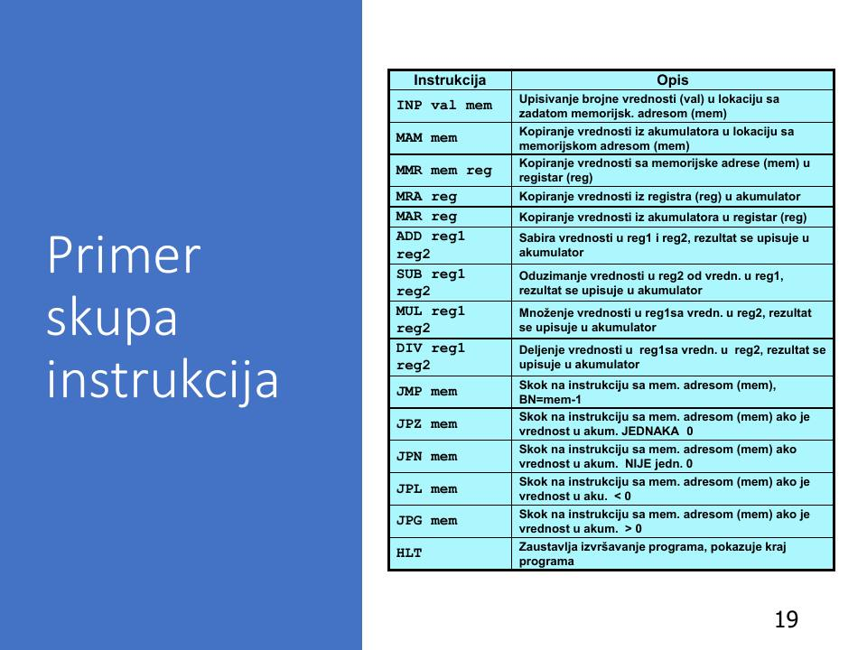
Za primer izvršavanja koji sledi, slajd 19 uvodi nešto bogatiju mašinu: pored akumulatora ima i registre opšte namene R1 i R2. Imena instrukcija su skraćenice koje se čitaju kao „odakle-kuda“:
| Instrukcija | Opis |
|---|---|
INP val mem | Upiši brojnu vrednost val u lokaciju mem |
MAM mem | Kopiraj iz Akumulatora u Memoriju (M-A-M) |
MMR mem reg | Kopiraj iz Memorije u Registar |
MRA reg | Kopiraj iz Registra u Akumulator |
MAR reg | Kopiraj iz Akumulatora u Registar (ovo nije registar MAR!) |
ADD / SUB / MUL / DIV reg1 reg2 | reg1 op reg2, rezultat u akumulator |
JMP mem | Bezuslovni skok na mem (postavlja BN = mem − 1, jer će se BN posle povećati za 1) |
JPZ mem | Skok ako je AK = 0 |
JPN mem | Skok ako AK ≠ 0 |
JPL mem | Skok ako je AK < 0 |
JPG mem | Skok ako je AK > 0 |
HLT | Kraj programa |
Na ovoj mašini naša naredba A = B + C (B na adresi 06, C na 07, A na 08) izgleda ovako: MMR 06 R1, MMR 07 R2, ADD R1 R2, MAM 08, HLT. Pet instrukcija umesto četiri, ali sabiranje se sada radi nad registrima, što je u stvarnim procesorima mnogo brže od rada nad memorijom.
00: MMR 10 R1 01: MMR 11 R2 02: SUB R1 R2 AK = R1 − R2 03: JPZ 06 ako je AK = 0, sledeća instrukcija je ona na 06 04: MAM 12 inače upiši razliku u 12 05: HLT 06: INP 1 13 upiši 1 u 13 07: HLTPrimeti kako JPZ menja redosled izvršavanja: umesto 03 → 04, ide 03 → 06. Na slajdu stoji da JMP postavlja BN = mem − 1: to je zato što se posle izvršenja BN automatski poveća za 1, pa sledeća instrukcija bude baš ona na adresi mem.
Ceo program u pokretu (slajdovi 20–40)

Slajdovi 20–40 su jedna animacija od 21 slike: isti crtež, a na svakom slajdu se pomeri po jedna vrednost. Levo je memorija sa programom na adresama 00–04 i podacima 100 i 200 na adresama 06 i 07. Desno je CPU: upravljačka jedinica (uzima, dekodira, izvršava instrukcije) sa registrima BN i RN, A/L jedinica sa registrima R1, R2 i akumulatorom AC, i magistrala podataka između njih. Tekst ispod svakog slajda kaže u kom smo koraku.
Priča počinje pre prve instrukcije (slajd 21): program se pokreće pomoću operativnog sistema, koji prebaci instrukcije i podatke u memoriju (to radi loader, videćemo u delu 3) i postavi BN na prvu instrukciju programa, 00. Tek tada počinje da se ponavlja ciklus „Uzmi – analiziraj – izvrši“, posle koga se BN poveća. Klikći i prati sve registre:
Ovo je tačno ono što prikazuje 20 slajdova (20–40). Klikći „Sledeći korak“ i prati BN, RN, R1, R2 i AC. Narandžasto je lokacija na koju pokazuje BN, zeleno ona kojoj se upravo pristupa.
Pet instrukcija, pet ciklusa, i svaki ima ista četiri koraka. U prvom ciklusu (slajdovi 22–25) instrukcija sa lokacije 00 stiže u RN, upravljačka jedinica je dekodira, vrednost 100 se kopira u R1, a BN postaje 01. U drugom (26–29) isto za 200 i R2. U trećem (30–33) ALU sabira registre i u AC je 300. U četvrtom (34–37) MAM 08 upisuje 300 u memoriju. U petom (38–40) dolazi HLT: kraj programa. Poslednji slajd kaže šta se tada dešava: procesor pita operativni sistem za sledeću vrednost BN, to jest za adresu sledećeg programa koji treba izvršiti. Procesor nikad zaista ne „staje“; samo prelazi na drugi program.
Koliko je BN posle izvršenja instrukcije MAM 08, i zašto?
Kako to izgleda u pravom procesoru (slajdovi 41–42)
Na kraju prvog dela predavanja profesor pokazuje da naš model nije samo školski. Slajd 41 opisuje Intel Core 2 Duo: Intelov procesor sa 64-bitnom arhitekturom i x86-64 skupom instrukcija, sa dva nezavisna jezgra koja dele do 6 MB L2 keša, razvijen sa novom mikroarhitekturom koja se zove Core Microarchitecture.
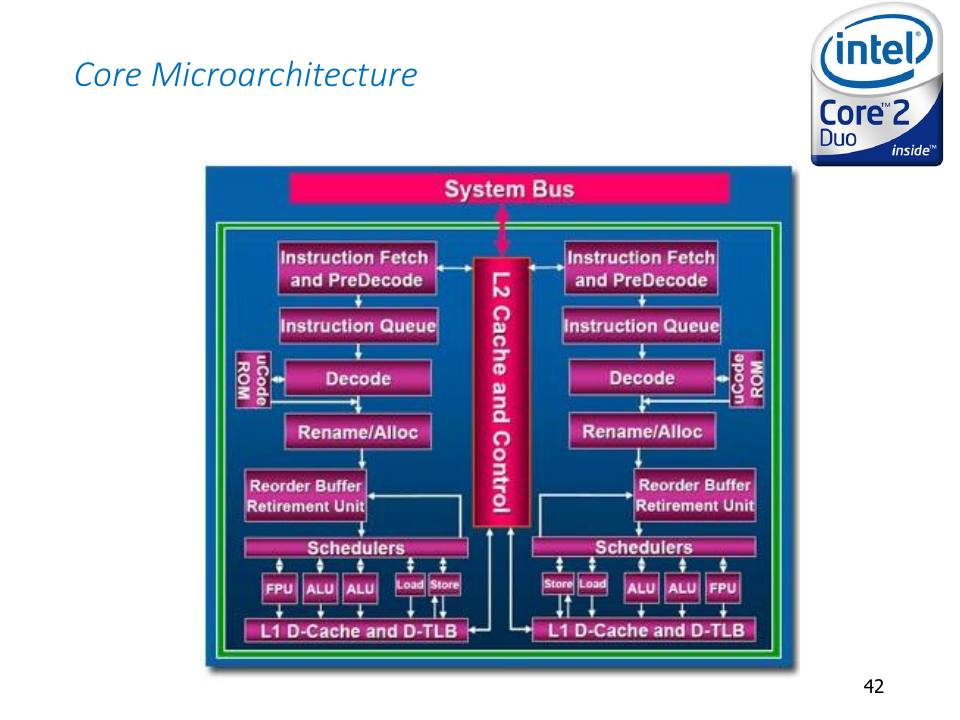
Dve identične kolone na slajdu 42 su dva jezgra, a u sredini je zajednički L2 keš povezan sa sistemskom magistralom (System Bus). Svako jezgro odozgo nadole prati upravo naš ciklus instrukcije, samo kao stvarne hardverske blokove: Instruction Fetch and PreDecode (donošenje i preliminarno dekodiranje), Instruction Queue (red instrukcija koje čekaju), Decode (dekodiranje; uz njega je uCode ROM, mikroprogramska memorija za složene x86 instrukcije, o kojoj više u delu 4), Rename/Alloc (preimenovanje registara da bi nezavisne instrukcije mogle paralelno), Reorder Buffer / Retirement Unit (instrukcije se izvršavaju van redosleda, a ovde se vraćaju u pravi redosled), Schedulers (raspoređivači koji šalju instrukcije izvršnim jedinicama), pa izvršne jedinice: FPU, dve ALU, Load i Store. Na dnu je L1 D-Cache (keš podataka) i D-TLB. Ovo je superskalarni procesor iz Modula 2: faze se preklapaju (protočna obrada), a više instrukcija se izvršava istovremeno.
Od simboličkog koda do mašinskog, i memorija koja hrani procesor
Put od izvornog koda do programa koji radi (slajd 43)
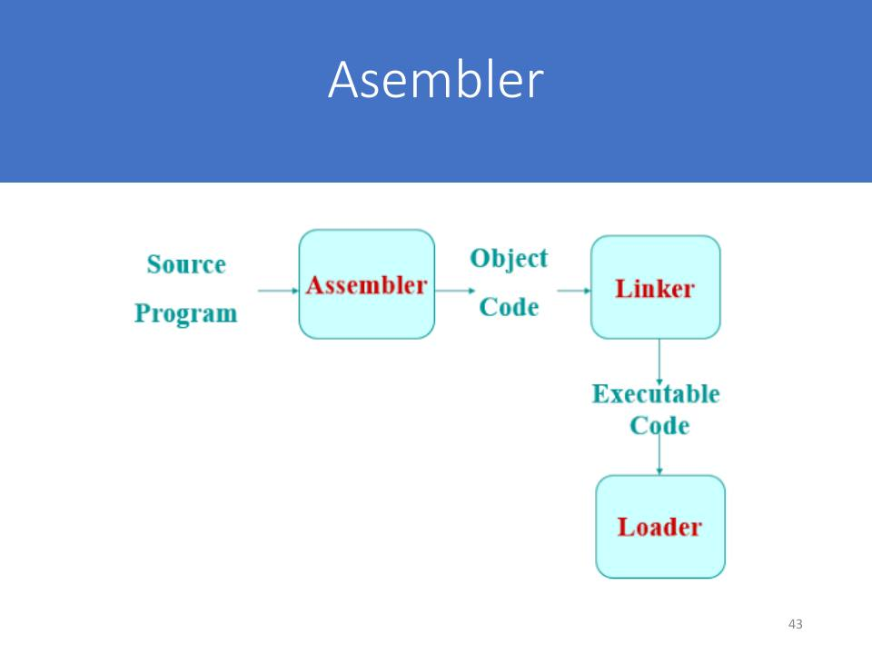
Slajd 43 pokazuje lanac alata kroz koji prolazi svaki program pre nego što ga procesor izvrši:
- Izvorni program (Source Program): program u asemblerskom jeziku, sa simboličkim imenima (LOAD, ADD, oznake promenljivih kao A, B, C).
- Asembler prevodi simboličke instrukcije u binarni mašinski kod. Rezultat je objektni kod (Object Code): mašinski kod, ali još sa „rupama“ za adrese koje su u drugim fajlovima.
- Linker (povezivač) spaja više objektnih fajlova i biblioteka u jedan izvršni kod (Executable Code) i popunjava te „rupe“ (npr. adresu funkcije
printfiz biblioteke). - Loader (punilac) je deo operativnog sistema koji učitava izvršni program u memoriju, podešava adrese prema mestu gde je program smešten i postavlja BN na prvu instrukciju. To je onaj korak sa slajda 21, pre prvog ciklusa.
Zašto asembler čita program dva puta (slajdovi 44–45)
Asembler na prvi pogled ima lak posao: zameni LOAD sa 0001, ADD sa 0011 i tako dalje. Problem su adrese. Program može da koristi simboličku adresu pre nego što je ona definisana (referenca unapred, forward reference). Na primer JMP KRAJ na početku programa, a oznaka KRAJ je tek na kraju. Isto važi i za naše promenljive A, B i C: one dobijaju adrese tek kad se zna koliko je dug program, jer se smeštaju iza njega. Kad asembler čita program redom, u trenutku kad vidi LOAD B još ne zna gde će B biti. Rešenje: pročitaj program dva puta. Prvi put samo zapiši gde je šta, drugi put prevedi do kraja.

Slajd 44 to crta kao tok: izvorni program ulazi u Pass 1, koji koristi dve tabele: OPTAB (tabela operacionih kodova: koji simbolički opkod odgovara kom binarnom, npr. ADD → 0011) i SYMTAB (tabela simbola: koja oznaka je na kojoj adresi). Pass 1 pravi međufajl (Intermediate file). Pass 2 čita međufajl, iz SYMTAB-a uzima adrese i pravi konačan objektni kod.

Slajd 45 to radi na našoj naredbi. Gore desno je tabela instrukcija akumulatorske mašine (ista kao na slajdu 7). Levo je tok, koji se čita zdesna nalevo: naredba u višem jeziku A = B + C → (prevodilac, compiler, 1:n jer jedna naredba daje više instrukcija) → simbolički oblik LOAD B / ADD C / STORE A / HALT → prvi prolaz → binarno-simbolički oblik 0001 B / 0011 C / 0010 A / 0111 0000 (opkodi su binarni, adrese još simboličke) → međufaza: tabela simbola dobija fizičke adrese pomoću brojača lokacija BL (B = 4 = 0100, C = 5 = 0101, A = 6 = 0110) → drugi prolaz → binarni oblik 0001 0100 / 0011 0101 / 0010 0110 / 0111 0000. Desno je algoritam u pseudokodu.
Primeti da su ovde B, C i A na adresama 4, 5 i 6, a na slajdu 12 su bili na 8, 9 i 10. To nije greška: program je ovde smešten od adrese 0, pa promenljive dolaze odmah iza njega (0–3 je program, 4–6 su promenljive). Na slajdu 12 program je bio na 4–7, a podaci iza. Gde će šta biti, odlučuje se pri prevođenju i učitavanju, a sam program je isti.
Algoritam sa slajda, objašnjen red po red:
begin
inicijalizuj tabelu simbola
(* PRVI PROLAZ *)
while nije kraj simboličkog programa do
uzmi instrukciju simboličkog programa
prevedi opkod u binarni oblik pomoću tabele instrukcija
if simbolička adresa nije u tabeli simbola
then upiši je u tabelu simbola
prepiši instrukciju u binarno-simboličkom obliku
BL := BL + 1 (* brojač lokacija: sledeća adresa *)
(* MEĐUFAZA *)
while nije kraj tabele simbola do
upiši S(BL) u sledeći nepopunjen red tabele simbola
BL := BL + 1 (* svaka promenljiva dobija svoju adresu *)
(* DRUGI PROLAZ *)
while nije kraj binarno-simboličkog programa do
uzmi instrukciju
simboličku adresu zameni fizičkom adresom iz tabele simbola
prepiši instrukciju u binarnom obliku
end
Pusti algoritam da radi na nekoliko programa i prati kako se puni tabela simbola:
Program počinje od adrese 0, a promenljive se smeštaju odmah iza programa, redom kojim se prvi put pojave (kao na slajdu 45).
Simbolički program
Tabela simbola
Rezultat prevođenja
LOAD X / SUB Y / STORE Z / HALT, program počinje od adrese 0, a promenljive se smeštaju odmah iza programa redom kojim se pojave.
- Prvi prolaz:
0001 X / 0100 Y / 0010 Z / 0111 0000; tabela simbola: X, Y, Z (bez adresa). BL posle programa = 4. - Međufaza: X = 4 (0100), Y = 5 (0101), Z = 6 (0110).
- Drugi prolaz:
0001 0100 / 0100 0101 / 0010 0110 / 0111 0000.
Problem: memorija kasni za procesorom (slajd 46)
Slajd 46 kaže: operativne memorije su za oko red veličine (10 puta) sporije od procesora. (Tako piše na slajdu; po brojevima iz Modula 1, deo 1.3, razlika između registra i RAM-a je danas i veća, 100–300 puta, pa je keš još važniji.) Kod aplikacija gde je brzina obrade najvažnija, operativna memorija je „usko grlo“ sistema: procesor stalno čeka podatke. To je Von Neumann-ovo usko grlo iz Modula 1, sada izraženo brojem.
Rešenje sa slajda: pored operativne memorije uvodi se još jedan hijerarhijski nivo, čija je brzina pristupa porediva sa brzinom procesora. Zbog visoke cene on ima mali kapacitet. Crtež na dnu slajda pokazuje polaznu situaciju bez keša: CPU (registri i ALU) i memorija (RAM, „niz bajtova“) povezani magistralom podataka i adresnom magistralom.
Hijerarhija memorije (M3_02, slajdovi 14–15)
Drugo predavanje Modula 3 isti problem crta šire, pa ga ovde spajamo:
Piramida na slajdu 14, odozgo: registri → keš (više nivoa, SRAM) → glavna memorija (DRAM, SDRAM, DDR) → SSD memorija → flash i disk → virtuelna memorija i baze podataka. Strelice desno je dele na On-chip storage (na samom čipu procesora), Onboard storage (na matičnoj ploči) i Outboard storage (van ploče). Grafik na slajdu 15 to kaže brojevima: horizontalno je vreme pristupa i veličina memorije, vertikalno brzina prenosa i cena po bitu. Kriva ide od registara gore levo (najbrži, najskuplji po bitu, najmanji) do trake dole desno (najsporija, najjeftinija, najveća). Nijedna memorija nije istovremeno i brza i velika i jeftina, i zato se pravi hijerarhija. Ovo je slika sa slajda 17 Modula 1, samo detaljnija.
Skrivena (keš) memorija (slajdovi 47–48)
Novi nivo između procesora i operativne memorije zove se cache (keš, „skrivena memorija“). Cilj je, kaže slajd 47, da se stvori utisak da cela operativna memorija ima brzinu blisku ultra brzoj memoriji: program misli da radi sa velikim i brzim RAM-om, a zapravo najčešće dobija podatke iz malog keša.


Na slajdu 47 tri kutije su tri nivoa koje procesor vidi kad traži podatak: Registers (unutar procesora), Cache i Physical Memory (RAM). Slajd 48 pokazuje gde je keš umetnut: gore je klasična veza bez keša, CPU i RAM povezani magistralom podataka (dvosmerne strelice) i adresnom magistralom (strelice samo od CPU ka memoriji, jer adresu uvek zadaje procesor). Dole je ista stvar sa kešom: CPU ↔ skrivena memorija ↔ operativna memorija. Procesor keš ne „vidi“ kao posebnu memoriju i ne adresira ga posebno; zato se i zove skrivena.
Slajd 47 uz to daje i nekoliko definicija koje se pitaju:
- Prema dostupnosti programeru, memorija može biti neskrivena (programer mora sam da je koristi i vodi računa o njoj, to je za njega dodatno opterećenje) i skrivena (keš: programer je ne vidi, hardver njome automatski upravlja).
- Primarna (RAM) i sekundarna memorija (disk) se često povezuju preko posebnog ulazno-izlaznog procesora (vidi DMA u Modulu 4).
- Najčešće se memorijskoj lokaciji pristupa pomoću adrese: to je adresni pristup.
- Ponekad znamo samo deo sadržaja lokacije, koji se zove ključ. Asocijativna memorija je memorija kod koje se ćelija pronalazi po ključu, a ne po adresi. Ona paralelno uporedi ključ sa svim ćelijama odjednom. Koristi se upravo u kešu (traženje po tag-u) i u TLB-u (prevođenje adresa).
Kako keš radi (dopuna, ovo profesor objašnjava na tabli)
- Procesor traži podatak sa adrese X. Prvo pita keš.
- Ako je podatak u kešu, to je pogodak (hit): dobija ga za 1–2 ns.
- Ako nije, to je promašaj (miss): podatak se donosi iz RAM-a (50–100 ns), ali ne samo taj bajt, nego ceo blok (keš linija), npr. 64 susedna bajta. Blok se smesti u keš.
- Sledeći put kad procesor traži taj ili susedni podatak, biće pogodak, zahvaljujući vremenskoj i prostornoj lokalnosti (Modul 2).
U našem programu: posle prvog promašaja na instrukciji LOAD, cela linija sa LOAD, ADD, STORE i HALT (susedne adrese) stiže u keš odjednom, pa su sledeća tri donošenja instrukcija pogoci. To je prostorna lokalnost na delu.
Gde se blok smešta u keš (načini mapiranja):
- Direktno mapiranje (direct-mapped): svaki blok RAM-a može ići samo na jedno tačno određeno mesto u kešu: broj_linije = broj_bloka mod broj_linija_u_kešu. Najjednostavnije i najbrže, ali ako dva često korišćena bloka idu na isto mesto, stalno se izbacuju. Adresa se deli na tri dela: tag | indeks linije | offset u liniji. Ovo treba za domaći zadatak 1 (završno poglavlje ★).
- Potpuno asocijativno: blok može na bilo koje mesto; keš traži po sadržaju (tag-u), kao asocijativna memorija. Najfleksibilnije, ali najskuplje.
- Skupno-asocijativno (set-associative): kompromis; blok može na bilo koje od npr. 8 mesta u jednom skupu. Ovo koristi većina modernih procesora.
Direktno mapiranje korak po korak
Ovo je deo koji se najčešće ne razume, a treba za domaći. Keš je podeljen na linije (blokove) iste veličine. Svaka memorijska adresa se deli na tri polja:
- Offset: koji bajt unutar linije. Ako linija ima 2ᵒ bajtova, offset ima o bita. Linija od 32 B → 5 bita.
- Indeks: u koju liniju keša blok sme da ide. Ako keš ima 2ⁱ linija, indeks ima i bita. 2048 linija → 11 bita.
- Tag: svi preostali (gornji) biti adrese. Pošto u istu liniju može da dođe mnogo različitih blokova, keš uz svaku liniju pamti tag, da bi znao koji blok je trenutno tu.
Šta se dešava pri pristupu: iz adrese se uzme indeks i pogleda ta jedna linija. Ako je linija popunjena (bit valid = 1) i njen tag je jednak tagu adrese, to je pogodak: bajt se čita na poziciji offset. Ako nije, to je promašaj: ceo blok se donese iz RAM-a u tu liniju (ono što je bilo tu se izbaci), i upiše se novi tag.
001 011 01: tag 1, linija 3, bajt 1. Adresa 13 = 000 011 01 ima isti indeks 3, ali drugi tag (0), pa se 45 i 13 „svađaju“ oko linije 3.Šta da primetiš u laboratoriji: kod niza redom promašaj je samo na prvom bajtu svake linije (0, 4, 8, 12), a ostali su pogoci; to je prostorna lokalnost. Kod petlje prvi krug su promašaji, a drugi i treći sve pogoci; to je vremenska lokalnost. Kod sukoba svaki pristup je promašaj iako je keš skoro prazan; to je mana direktnog mapiranja koju rešava (skupno-)asocijativni keš.
Adresa ima 32 bita, keš ima 1024 linije po 64 B. Koliko bita ima tag, indeks i offset?
Dodatni izvori: Princeton, Assemblers and Linkers (predavanje) · GeeksforGeeks, Introduction of Assembler
Skup instrukcija kao celina: modeli mašina, CISC i RISC
Drugo predavanje Modula 3 (M3_02) po sadržaju na slajdu 2 ide ovim redom: procesor i memorija (Von Neumann), ključni faktori performansi i načini da se one poboljšaju, primer skupa instrukcija, vrste ISA arhitektura, CISC i RISC. Prvi deo toga već znaš: Von Neumann i klasifikaciju računara (slajdovi 3–5) radili smo u Modulu 1, a procesor, Hyper-Threading i faktore performansi (slajdovi 6–13) u Modulu 2. Hijerarhiju memorije (14–15) smo upravo uradili uz keš. Ostaje ono što je novo: skup instrukcija kao celina.
Skup instrukcija pravog procesora (slajdovi 16–18)
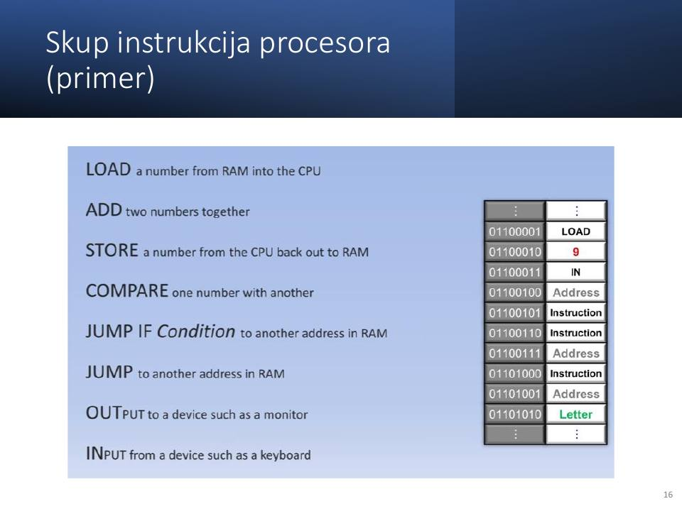

Slajd 16 nabraja šest instrukcija jednostavnog procesora: LOAD (broj iz RAM-a u CPU), ADD (saberi dva broja), STORE (broj iz CPU nazad u RAM), COMPARE (uporedi dva broja), JUMP IF uslov (skok na drugu adresu u RAM-u ako važi uslov) i JUMP (bezuslovni skok). Slajd 17 dodaje OUT (izlaz na uređaj kao što je monitor) i IN (ulaz sa uređaja kao što je tastatura). Desno je deo memorije: svaka instrukcija je binarni kod (npr. 01100001 = LOAD), a iza nje sledi adresa ili podatak. Na slajdu 17 vidiš i ceo mali program: učitaj (LOAD 9), uzmi znak sa tastature (IN Keyboard), uporedi (COMPARE), skoči ako je jednako (JUMP IF = 10100001), ispiši na monitor (OUT Monitor) slovo „G“. Poruka je ista kao kod Von Neumann-a: u memoriji su instrukcije i podaci izmešani i izgledaju isto. Prepoznaj i grupe sa slajdova 17–18 iz M3_01: prenos podataka, aritmetika, logika (COMPARE), prenos upravljanja (JUMP) i U/I (IN, OUT).

Slajd 18 gleda instrukciju iz ugla ALU. Upravljačka jedinica dobija instrukciju i iz nje izdvaja tip operacije (šta ALU treba da radi: sabiranje, poređenje) i ulaze (koji podaci). ALU dobija ta dva ulaza (Input 1, Input 2) i signal operacije, i daje izlaz (rezultat) i flags (zastavice, koje idu u PSW). Desno je ista ideja u Von Neumann-ovom bloku: Memory iznad, Control Unit i Arithmetic Logic Unit kao CPU. Upravo ove zastavice koristi instrukcija JUMP IF: COMPARE ih postavi, a skok ih pročita.
Pet modela mašina: odakle dolaze operandi (slajdovi 19–21)
Slajd 19 deli sve mašine u pet modela prema kriterijumu odakle dolaze operandi. Ovo je proširenje podele po broju adresa iz dela 1:
Na slikama su četiri kolone; u svakoj je gore procesor (plavo), dole memorija (ljubičasto). Žute kutije su mesta na kojima su operandi, a strelice pokazuju odakle ALU uzima ulaze i gde vraća rezultat. Stack: ALU uzima oba operanda sa vrha steka (TOS, top of stack) i vraća rezultat na vrh; instrukcija ne navodi nijedan operand. Accumulator: jedan ulaz je uvek akumulator, drugi iz memorije; navodi se jedan operand (to je naša mašina iz dela 1). Register-Memory: jedan operand iz registra, drugi može direktno iz memorije. Register-Register: oba operanda iz registara, a memoriji pristupaju samo Load i Store. Slajd 21 dole ispisuje naš primer, samo sa drugim imenima: C = A + B.
| Model | Primeri | Eksplicitnih operanada | C = A + B |
|---|---|---|---|
| 1. Stek | Burroughs B5000, HP 3000, JVM, Intel x87 FPU | 0 | Push A; Push B; Add; Pop C |
| 2. Akumulator | Motorola 6800 | 1 | Load A; Add B; Store C |
| 3. Registar–memorija | x86, IBM 360 | 2 ili 3 | Load R1,A; Add R3,R1,B; Store R3,C |
| 4. Memorija–memorija | VAX | 2 ili 3 | Add C, A, B |
| 5. Registar–registar (load/store) | ARM, MIPS, SPARC, RISC-V | 2 ili 3 | Load R1,A; Load R2,B; Add R3,R1,R2; Store R3,C |
Zašto su danas skoro sve nove arhitekture registar–registar? Registri su brzi, a ako samo Load i Store diraju memoriju, sve ostale instrukcije su jednostavne, iste dužine i traju isto. To olakšava protočnu obradu iz Modula 2. To je suština RISC pristupa, do koga upravo stižemo.
Na kom od pet modela program za C = A + B ima najmanje instrukcija, a na kom najviše pristupa registrima?
Add C, A, B. Najviše rada sa registrima ima registar–registar: četiri instrukcije, ali je sabiranje čisto nad registrima, a memoriji se pristupa samo pri Load i Store.Stvarni skupovi instrukcija (slajdovi 22–23)
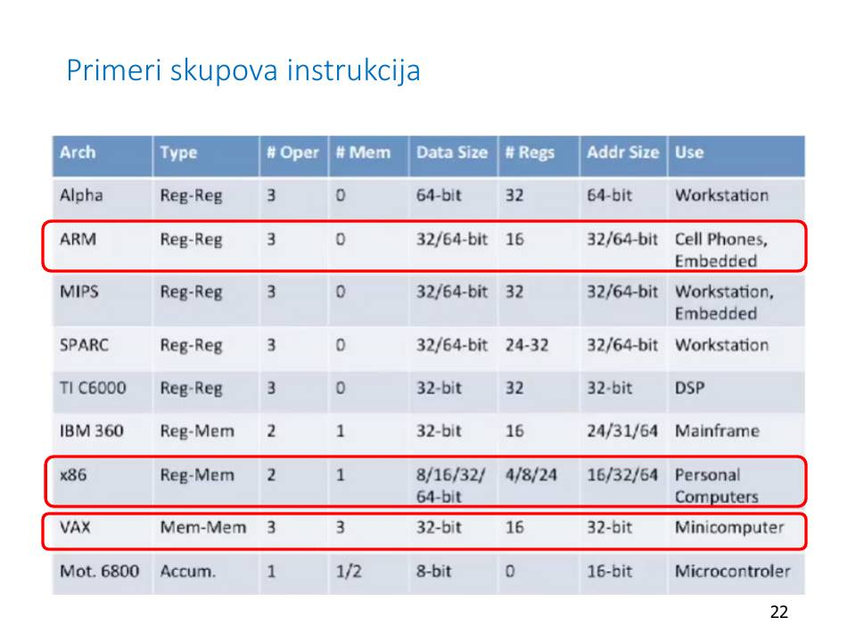
Tabela na slajdu 22 svrstava stvarne procesore u te modele. Kolone su: Type (model), # Oper (koliko operanada ima aritmetička instrukcija), # Mem (koliko od njih sme da bude u memoriji), Data Size (širina podataka), # Regs (broj registara), Addr Size (širina adrese) i Use (gde se koristi). Profesor je crvenim uokvirio tri reda:
- ARM: Reg-Reg, 3 operanda, 0 u memoriji, 16 registara, telefoni i ugrađeni sistemi.
- x86: Reg-Mem, 2 operanda, 1 sme biti u memoriji, 4/8/24 registara (zavisno od generacije), lični računari.
- VAX: Mem-Mem, 3 operanda, sva 3 mogu biti u memoriji, miniračunari.
Ostali redovi (Alpha, MIPS, SPARC, TI C6000) su svi Reg-Reg sa 32 registra, IBM 360 je Reg-Mem, a Motorola 6800 je akumulatorska mašina sa jednim operandom i 0 registara opšte namene. Uoči obrazac: što je arhitektura novija, to više registara i manje pristupa memoriji.

Slajd 23 nabraja savremene ISA: ARM, 80x86/Pentium/K6, PowerPC, MIPS (32-bitni ugrađeni mikrokontroleri, 64-bitni serveri i mrežna infrastruktura), Arduino (ploča sa mikrokontrolerom AVR, memorijom i programabilnim U/I, sa besplatnim razvojnim alatom) i PIC (Peripheral Interface Controller).
CISC i RISC: dužina instrukcije (slajd 24)
Slajd 24 daje polaznu definiciju: CISC (Complex Instruction Set Computer) ima instrukcije promenljive dužine, a RISC (Reduced Instruction Set Computer) instrukcije fiksne dužine. Iako ne postoji strogo pravilo da instrukcijama promenljive dužine odgovara CISC, a fiksne dužine RISC, takva veza je najčešća.
Odakle potiče podela? U 1960-im i 1970-im memorija je bila skupa i spora, a kompajleri slabi. Zato su projektanti pravili procesore sa što moćnijim instrukcijama: jedna instrukcija radi mnogo posla, program je kratak i zauzima malo memorije, a programeru u asembleru je lakše. To su CISC procesori: IBM System/360, VAX, Intel x86. Oko 1980. istraživači sa Berklija (David Patterson) i Stenforda (John Hennessy), isti oni čiji citat o apstrakciji si čitao u Modulu 1, primetili su da kompajleri skoro nikad ne koriste složene instrukcije: oko 80% vremena se izvršava 20% najjednostavnijih instrukcija (load, store, add, branch). Predložili su obrnut pristup: mali skup jednostavnih instrukcija koje se izvršavaju jako brzo, uz pametan kompajler. To je RISC: MIPS, SPARC, ARM, RISC-V.
Mikroprogram ili hardver (slajdovi 25–26)
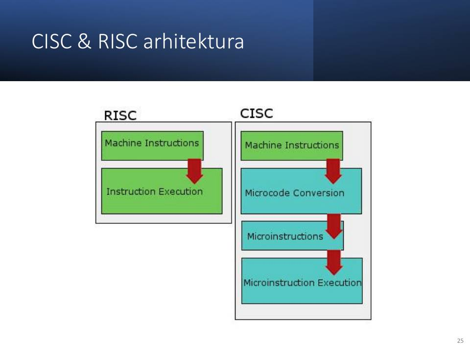
Slajd 25 pokazuje šta se dešava sa mašinskom instrukcijom u svakoj od njih. RISC (levo): mašinska instrukcija → direktno izvršavanje u hardveru. Jedan korak. CISC (desno): mašinska instrukcija → konverzija u mikrokod (Microcode Conversion) → niz mikroinstrukcija → izvršavanje mikroinstrukcija. CISC instrukciju zapravo izvršava mali „program u programu“ (mikroprogram) zapisan u ROM-u procesora. To je onaj uCode ROM koji si video na Core 2 Duo (slajd 42 iz M3_01), i ona upravljačka memorija iz hijerarhijske dekompozicije u Modulu 1, deo 1.6. Ovo je i „mikroprogramski nivo“ iz sadržaja predmeta.
Upravljačka jedinica, dakle, može da generiše upravljačke signale (naše mikrooperacije sa slajda 13) na dva načina:
- Hardversko (ožičeno) upravljanje: signali se dobijaju direktno iz logičkih kola. Brzo, ali teško za menjanje i projektovanje kad ima mnogo složenih instrukcija. Koristi RISC.
- Mikroprogramsko upravljanje: za svaku mašinsku instrukciju u upravljačkoj memoriji postoji niz mikroinstrukcija koje redom generišu signale. Sporije, ali lako je dodati novu složenu instrukciju: samo se napiše novi mikroprogram. Koristi CISC.
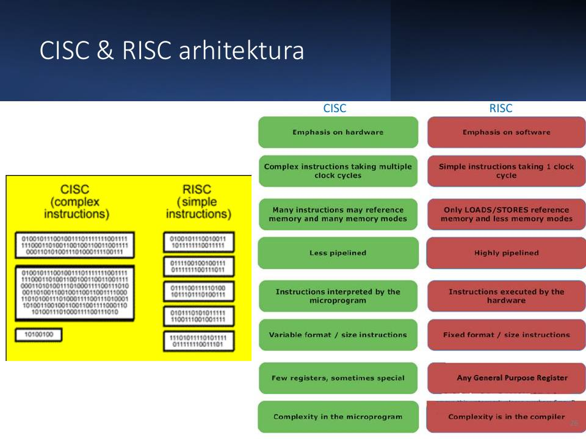
Na slajdu 26 levo (žuto) je ilustracija dužine koda: CISC instrukcije su različite dužine (neke dugačke, neke kratke), a RISC instrukcije su sve iste dužine, ali ih ima više. Desno su parovi osobina (zeleno CISC, crveno RISC), red po red:
| CISC | RISC |
|---|---|
| Naglasak na hardveru | Naglasak na softveru (kompajleru) |
| Složene instrukcije koje traju više ciklusa | Jednostavne instrukcije koje traju 1 ciklus |
| Mnoge instrukcije mogu pristupati memoriji, mnogo načina adresiranja | Samo LOAD/STORE pristupaju memoriji, malo načina adresiranja |
| Slabije protočna obrada | Izrazito protočna obrada (pipelining) |
| Instrukcije interpretira mikroprogram | Instrukcije izvršava direktno hardver |
| Promenljiv format i dužina instrukcija | Fiksan format i dužina instrukcija |
| Malo registara, ponekad specijalne namene | Mnogo registara opšte namene |
| Složenost je u mikroprogramu | Složenost je u kompajleru |
| Kraći program (gust kod), jednostavniji kompajleri | Duži program (više instrukcija), energetski efikasniji |
| Primeri: IBM System/360, x86, IA-32, AMD-64, x86-64 | Primeri: MIPS, ARM, AVR, SPARC, RISC-V |
Jedna CISC instrukcija prema pet RISC instrukcija (slajd 27)
CISC: ADD $4, 14(%eax, %ebx, 8). Ova jedna x86 instrukcija:
- izračuna adresu: 14 + sadržaj registra eax + sadržaj registra ebx × 8,
- pročita broj sa te adrese iz memorije,
- sabere ga sa konstantom 4,
- upiše rezultat nazad na istu adresu u memoriji.
Za to su potrebna dva pristupa memoriji i složeno računanje adrese, pa traje više ciklusa. U jeziku 9 faza: ona prolazi gotovo sve faze, uključujući računanje adrese operanda (3), donošenje operanda (4) i upis rezultata (7).
RISC: ADD R5 R7 znači R5 ← R5 + R7. Samo registri, jedan ciklus. Evo šta bi RISC procesor morao da uradi da bi dobio isti efekat kao gornja CISC instrukcija (uzmimo da je eax u R1, a ebx u R2):
CISC (x86): 1 instrukcija
ADD $4, 14(%eax,%ebx,8)
Dugačka (više bajtova), traje više ciklusa. Unutra je dekoder ipak razbija na 3–4 mikro-operacije.
RISC: 5 instrukcija
SHL R3, R2, 3 R3 = R2 × 8 ADD R3, R3, R1 R3 = R3 + R1 LOAD R4, 14(R3) R4 = M[R3 + 14] ADD R4, R4, #4 R4 = R4 + 4 STORE R4, 14(R3) M[R3 + 14] = R4
Svaka je kratka, iste dužine, i u protočnoj obradi završava se po jedna u ciklusu. Memoriji pristupaju samo LOAD i STORE.
Pomeranje ulevo za 3 bita (SHL) isto je što i množenje sa 2³ = 8; tako procesori brzo množe stepenom dvojke. Oba programa imaju po dva pristupa memoriji; razlika je u tome ko razlaže posao na korake: kod CISC-a mikroprogram u procesoru, kod RISC-a kompajler.
Zašto je RISC lakši za protočnu obradu? Ako su sve instrukcije iste dužine i traju isto, svaka faza pokretne trake (Modul 2) uvek zna gde počinje sledeća instrukcija i koliko traje. Kod CISC-a instrukcija može biti od 1 do 15 bajtova i trajati od 1 do 100 ciklusa, pa se traka stalno „zaglavljuje“.
Veličina programa (slajd 28)

Slajd 28 je rukom nacrtana ilustracija istog „složenog zadatka“ (Complex Task) na dve mašine: levo, kod CISC-a, zadatak zauzima kratak niz dugačkih instrukcija; desno, kod RISC-a, dugačak niz kratkih instrukcija. Ispod su primeri (CISC: IBM System 360, x86, IA-32, AMD-64, x86_64; RISC: MIPS, ARM, AVR) i tri razlike uokvirene crvenom: kod CISC-a instrukcije se duže izvršavaju, dekodiranje je složenije, elektronska kola su složenija; kod RISC-a instrukcije se brže izvršavaju, dekodiranje je brzo, elektronska kola su jednostavnija. Ukupno vreme programa je, setićeš se iz Modula 2, broj instrukcija × CPI × trajanje takta: CISC smanjuje prvi činilac, RISC druga dva.
Jedan procesor ima instrukcije dužine od 1 do 15 bajtova i uCode ROM, a drugi sve instrukcije od 4 bajta i 32 registra opšte namene. Koji je CISC, a koji RISC?
ISA danas: x86, ARM i RISC-V (Modul 2, slajdovi 6–9)
Ovu temu profesor otvara još u Modulu 2, ali tek sada imaš sve pojmove da je razumeš do kraja:

| ISA | Vrsta | Ko pravi | Gde se koristi |
|---|---|---|---|
| x86 (x86-64) | Zatvorena ISA (CISC) | Intel i AMD | Većina desktop i laptop računara i servera |
| ARM | Zatvorena ISA (RISC); firma ARM ne pravi čipove, nego licencira dizajn drugima | Apple, Qualcomm, Samsung, MediaTek… | Android i iOS uređaji, novi Apple računari (M serija) |
| RISC-V | Otvorena i besplatna ISA (RISC) | Bilo ko | Bilo ko može da projektuje i prodaje RISC-V procesor bez dozvole i licence |
RISC-V (slajdovi 7–8): specifična RISC arhitektura. Razvoj je počeo maja 2010. u Parallel Computing Laboratory na Univerzitetu Kalifornija u Berkliju. Jedna od prvih RISC arhitektura nastala je na Berkliju 1980–1984 (Berkeley RISC I), pa je RISC-V 5. generacija Berkeley RISC-a (odatle „V“, rimsko 5). Dizajneri RISC-V jezgara sami odlučuju da li će svoj dizajn (intelektualnu svojinu, IP) objaviti javno, pa nije sav RISC-V hardver otvoren; otvorena je sama ISA. ISA se može slobodno proširivati sopstvenim instrukcijama, što daje veliku fleksibilnost za specijalizovane procesore.
Sve vrste arhitektura u jednoj tabeli (Tabela arhitektura procesora.pdf)
Dodatni PDF iz Modula 3 upoređuje osnovne vrste arhitektura. Neke već znaš (Von Neumann i Harvard iz Modula 1, CISC i RISC iz ovog dela), a neke su nove:
| Arhitektura | Suština | Prednost | Nedostatak | Primena |
|---|---|---|---|---|
| Von Neumann | Jedna memorija i jedna magistrala za program i podatke | Jednostavna i jeftina | Usko grlo magistrale | Opšti računari |
| Harvard | Odvojene memorije i magistrale | Paralelan pristup instrukcijama i podacima | Složenija i skuplja | Mikrokontroleri, DSP, L1 keš |
| RISC | Malo jednostavnih instrukcija fiksne dužine, hardversko upravljanje | Lako za proizvodnju i optimizaciju; energetski efikasan | Više instrukcija za složene zadatke | Telefoni, ugrađeni sistemi, Apple M |
| CISC | Mnogo složenih instrukcija promenljive dužine, mikroprogramsko upravljanje | Gust kod, jednostavniji kompajleri | Složeniji hardver, promenljivo vreme | PC i serveri (Intel, AMD) |
| Superskalarna | Više izvršnih jedinica (ALU, FPU); CPU sam nalazi nezavisne instrukcije i izvršava ih paralelno | Brže bez povećanja takta | Vrlo složeno upravljanje („out-of-order execution“) | Skoro svi moderni procesori |
| VLIW (Very Long Instruction Word) | Kompajler unapred pakuje više operacija u jednu dugačku instrukciju, koje se izvršavaju paralelno (npr. Intel Itanium, EPIC) | Jednostavniji CPU (odgovornost je prebačena na kompajler) | Zavisi od pametnog kompajlera; loše performanse kod loše optimizovanog koda | Specifični serveri, DSP |
| Višejezgarna (CMP) | Više procesorskih jezgara na jednom čipu; fizički paralelizam | Bolje performanse u multitaskingu i višenitnim programima | „Softversko usko grlo“: programi moraju biti pisani paralelno | Od telefona do superračunara |
| GPGPU | Hiljade jednostavnih jezgara za istovremenu obradu velikih skupova podataka (SIMT: NVIDIA CUDA, OpenCL) | Izuzetne performanse za lako deljive zadatke | Neefikasan za sekvencijalne zadatke; specijalizovano programiranje | Veštačka inteligencija, nauka, grafika |
Objašnjenja iz PDF-a, ukratko:
- Von Neumann vs. Harvard: većina modernih procesora koristi modifikovanu Harvard arhitekturu (podela na L1 kešu, Von Neumann u RAM-u).
- RISC vs. CISC: podela je sve manje oštra (µops kod x86, složenije instrukcije kod ARM-a).
- Superskalarna i višejezgarna se koriste zajedno: moderni procesor ima više jezgara, a svako jezgro je superskalarno, baš kao Core 2 Duo.
- Heterogene arhitekture, SoC (System on a Chip): na jednom čipu su CPU jezgra (često big.LITTLE: kombinacija jakih i štedljivih jezgara), GPU, NPU (neuro-procesorska jedinica za AI), DSP, modemi. Cilj je maksimalna efikasnost i performanse po vatu. Primer: Apple M serija, procesori u telefonima. To je „dark silicon“ iz Modula 1 u praksi.
Ceo Modul 3 u jednom pogledu
Evo cele priče Modula 3 kao niza rečenica. Ako svaku umeš da objasniš svojim rečima, Modul 3 znaš:
- Procesor za svaku instrukciju: donosi je, dekodira, donosi podatke, izvršava i upisuje rezultat; za to koristi registre BN (adresa sledeće), RN (trenutna instrukcija), ARM (adresa), PRM (podatak), PSW (zastavice) i AK (M3_01, sl. 3–6).
- Instrukcija = opkod (šta) + adresni delovi (sa čim). Na akumulatorskoj mašini 4 + 4 bita; A = B + C je
LOAD B, ADD C, STORE A, HALT(sl. 7–10). - Po broju adresa instrukcije su tro-, dvo-, jedno- i nulaadresne: manje adresa znači kraće instrukcije, ali više njih (sl. 11).
- Svaka instrukcija se izvodi mikrooperacijama; donošenje je uvek ARM ← BN, PRM ← memorija, RN ← PRM, BN ← BN + 1 (sl. 12–13).
- Model sa 9 faza opisuje svaku instrukciju; faze 3–7 su opcione, a faza 8 proverava prekid (sl. 14–16).
- Instrukcije se dele na prenos podataka, aritmetičke, logičke, prenos upravljanja, U/I i konverziju; skokovi jedini menjaju BN drugačije od +1 (sl. 17–40).
- Asembler prevodi simbolički kod u dva prolaza zbog referenci unapred; linker spaja, loader učitava (sl. 43–45).
- Keš je mala brza skrivena memorija između CPU i RAM-a koja radi zbog lokalnosti; kod direktnog mapiranja adresa = tag | indeks | offset (sl. 46–48, M3_02 sl. 14–15).
- Po tome odakle dolaze operandi postoji 5 modela mašina; nove arhitekture su registar–registar (M3_02, sl. 19–22).
- CISC: složene instrukcije promenljive dužine, mikroprogram (x86). RISC: jednostavne instrukcije fiksne dužine, load/store, hardversko upravljanje, protočnost (ARM, RISC-V) (M3_02, sl. 24–28).
Dodatni izvori: How amateurs created the world's most popular processor (ARM, video sa slajda) · Explaining RISC-V (video sa slajda)
Šta se dešava na žicama: procesor razgovara sa memorijom i uređajima
U Modulu 1 smo rekli da procesor „donese instrukciju iz memorije“, a u Modulu 3 smo to razložili na korake unutar procesora. Ali šta se tačno dešava između procesora i memorije? Memorija je poseban čip, desetinama centimetara daleko, sporija od procesora i ne zna ništa o tome šta procesor radi. Njih dvoje moraju da se dogovore preko magistrale: ko šta šalje, kojim redom i kako jedno zna da je drugo završilo. Modul 4 je priča o tom dogovoru, a zatim o tome kako instrukcija kaže gde je podatak i kako taj podatak izgleda u bajtovima.
Kroz ceo modul pratimo jedan isti primer, nastavak proseka ocena iz Modula 1. U memoriji, počev od adrese 2000, stoji niz od četiri ocene: 8, 9, 7, 10. Program ih sabira u petlji, a srce petlje je jedna instrukcija Intel procesora:
ADD AL, [SI+2000] ; AL ← AL + ocena sa adrese 2000 + SI
U ovom delu gledamo šta se dešava na magistrali dok procesor donosi tu instrukciju i njen operand, šta ako baš tada pritisneš taster, i kako su ocene uopšte stigle sa diska u memoriju. U delu 2 objašnjavamo zašto je operand zapisan baš kao [SI+2000] (načini adresiranja), a u delu 3 kako sve to izgleda na pravom Intel procesoru i kako su brojevi i slova zapisani u bajtovima.
Procesor kao mašina stanja (slajdovi 2–3)
Naslov predavanja je „CPU kao state mašina“. Mašina stanja (state machine) je uređaj koji je u svakom trenutku u tačno jednom stanju i na svaki otkucaj takta prelazi u sledeće stanje, zavisno od toga gde je bio i koje signale vidi. U svakom stanju radi jedan mali, tačno određen posao: „stavi adresu na magistralu“, „pošalji signal čitanja“, „upiši ono što je stiglo u registar“. Kad ovako gledamo procesor, nema više magije: donošenje instrukcije je samo niz stanja kroz koja procesor prolazi takt po takt.

Slajd 3 je isti crtež računarskog sistema koji smo videli na početku Modula 2 (procesor sa kešom, memorija, most, U/I magistrala, mreža i diskovi), ali je sada plavom elipsom i crvenom strelicom istaknut samo jedan spoj: procesor ↔ glavna memorija na sistemskoj magistrali. Tekst kaže da je to centralni deo ovog predavanja. Sve ostalo (diskovi, mreža) dolazi na red na kraju ovog dela, kad budemo pričali o U/I.
Četiri koraka jednog čitanja (slajd 4)
Procesor treba da donese našu instrukciju ADD AL, [SI+2000]. Recimo da je ona u memoriji na adresi 0120. Slajd 4 pokazuje kako izgleda svako čitanje iz memorije, bilo da se čita instrukcija ili podatak:
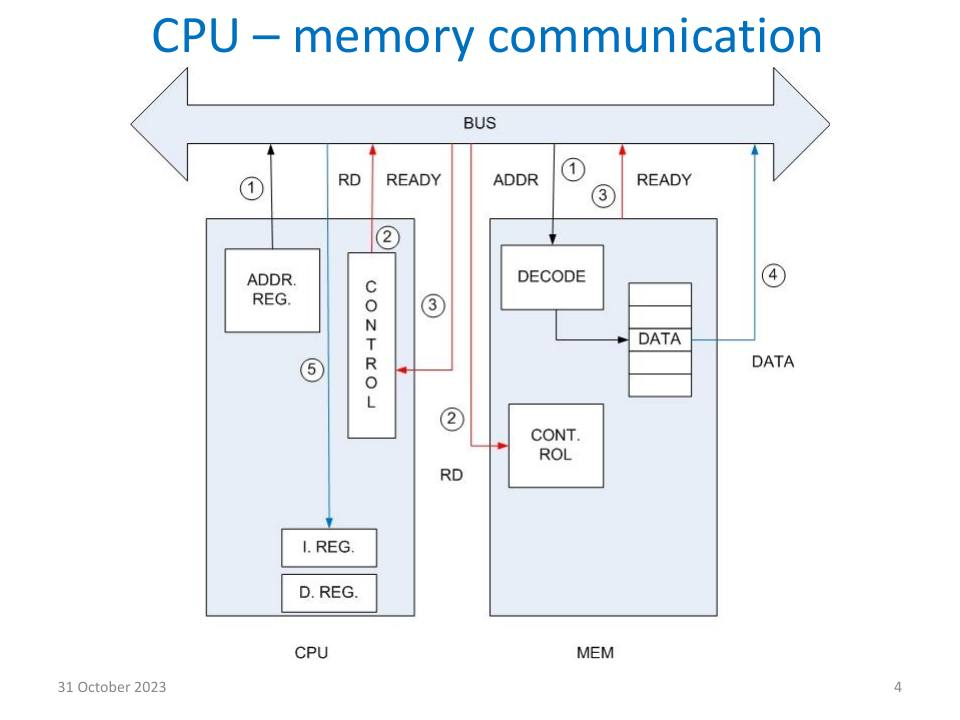
Levo je CPU sa četiri dela: ADDR. REG. (adresni registar, to je MAR), CONTROL (upravljačka jedinica), I. REG. (registar instrukcija) i D. REG. (registar podataka). Desno je MEM: DECODE (dekoder adrese, od broja adrese bira jednu ćeliju), polje ćelija u kome je istaknuta ćelija DATA, i CONT. ROL (kontroler memorije). Gore je zajednička magistrala BUS. Crne linije nose adresu, crvene upravljačke signale (RD, READY), a plave podatke. Brojevi u krugovima su redosled:
- ① CPU iz ADDR. REG. stavlja adresu 0120 na magistralu (ADDR). Memorija je prima i njen DECODE počinje da traži tu ćeliju.
- ② Upravljačka jedinica šalje signal RD (read, čitaj) kontroleru memorije.
- ③ Kad je memorija spremna, kontroler šalje signal READY (spremno) nazad procesoru. Do tada procesor čeka, jer ne može da natera memoriju da radi brže.
- ④ Memorija stavlja sadržaj ćelije (DATA) na magistralu podataka.
- ⑤ CPU uzima ono što je na magistrali i upisuje u I. REG. (ako je to instrukcija, kao sada) ili u D. REG. (ako je podatak).
Najvažnija reč na slici je READY. Procesor i memorija nemaju istu brzinu, pa memorija mora nekako da javi „gotovo je“. Bez tog signala procesor bi uzeo ono što je na magistrali pre nego što je memorija stigla da tamo stavi pravu vrednost.
Pogledaj ove korake u pokretu. Uključi „sporu memoriju“ da vidiš šta se dešava kad READY kasni:
Zašto procesor ne može jednostavno da sačeka unapred dogovoren broj taktova, nego mu treba signal READY?
ASM dijagram: čitanje nacrtano po taktovima (slajdovi 5–6)
ASM znači Algorithmic State Machine, algoritamska mašina stanja. To je dijagram toka posebno za uređaje koji rade u taktovima, i ima samo tri elementa:
- Pravougaonik je stanje: šta se radi u jednom taktu. Pored njega je oznaka takta (t1, t2…).
- Romb je odluka: proverava se neki signal (ovde READY) i prema njegovoj vrednosti (1 ili 0) bira se sledeće stanje.
- Strelice su prelazi između stanja.

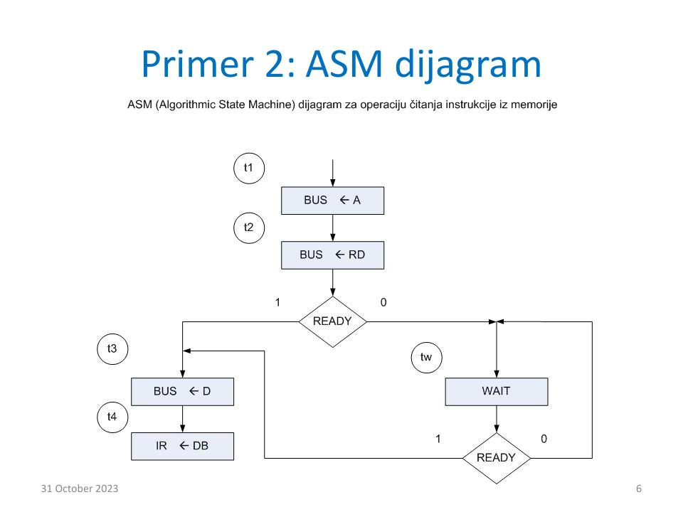
Na slajdu 5 su četiri stanja, a desno dole je ista stvar zapisana tekstom, sa oznakom ko radi:
| Takt | U pravougaoniku | Tekstom sa slajda | Ko radi i šta |
|---|---|---|---|
| t1 | BUS ← A | ADDR.BUS ← ADDR | CPU stavlja adresu (0120) na adresnu magistralu. Korak ① sa slajda 4. |
| t2 | BUS ← RD | CTRL.BUS ← RD.CONT | CPU stavlja signal čitanja na upravljačku magistralu. Korak ②. |
| romb | READY? | CPU proverava da li je memorija spremna. Korak ③. | |
| t3 | BUS ← D | DATA.BUS ← DATA.INS | Memorija stavlja instrukciju na magistralu podataka. Korak ④. |
| t4 | IR ← DB | INSTR.REG ← DATA.BUS | CPU upisuje instrukciju sa magistrale podataka (DB) u registar instrukcija. Korak ⑤. |
Razlika između dva slajda je samo u tome šta se dešava kad je READY = 0. Na slajdu 5 strelica „0“ iz romba vodi nazad iznad t2: procesor ponovo šalje RD i ponovo proverava, sve dok ne dobije 1. Na slajdu 6 postoji posebno stanje tw (WAIT): procesor ulazi u stanje čekanja i u njemu u svakom taktu proverava READY; tek kad postane 1, prelazi na t3. Takvi ubačeni taktovi zovu se wait states (stanja čekanja). U njima procesor ne radi ništa korisno, i svaki je izgubljen takt. Upravo zato postoji keš iz Modula 3: ako je instrukcija u kešu, READY stiže odmah i stanja čekanja nema.
Memorija je spora, pa procesor po slajdu 6 provede 2 takta u stanju tw. Koliko taktova ukupno traje čitanje instrukcije?
Pravo čitanje instrukcije: MMU i rezervacija magistrale (slajd 7)
ASM dijagram je pojednostavljen. Slajd 7 pokazuje kako izgleda čitanje instrukcije u pravom procesoru, sa još dva detalja koja ASM nije imao:

Desno je CPU sa registrima PC, MAR, IR, MBR i upravljačkom jedinicom (Control Unit), a pored su tri magistrale: adresna (Address Bus), podataka (Data Bus) i upravljačka (Control Bus), koje vode do memorije. Prati strelice: PC → MAR → adresna magistrala → memorija; memorija → magistrala podataka → MBR → IR. Upravljačka jedinica šalje signale na upravljačku magistralu i (strelica nagore) menja PC. Levo su koraci:
| # | Korak | Šta se dešava sa našom instrukcijom |
|---|---|---|
| 1 | MAR ← PC | Adresa instrukcije (0120) iz PC ide u MAR. |
| 2 | MAR ← MMU(MAR) | MMU prevodi virtuelnu adresu (onu koju vidi program) u fizičku (stvarno mesto u RAM-u). Program misli da je na adresi 0120, a stvarno je možda na 7F0120. Ovo je veza sa delom predmeta o operativnim sistemima (virtuelna memorija). |
| 3 | Control Bus ← Reserve | Procesor rezerviše magistralu, da je u međuvremenu ne bi koristio neko drugi (DMA kontroler, drugo jezgro). |
| 4 | Control Bus ← Read | Zahtev za čitanje (to je RD sa slajda 4). |
| 5 | PC ← ALU(PC+1) | Dok memorija radi, ALU poveća PC, da pokazuje na sledeću instrukciju. Vreme čekanja se korisno iskoristi. |
| 6 | MBR ← MEM[MAR] | Memorija vrati instrukciju u MBR. |
| 7 | Control Bus ← Release | Magistrala se oslobađa. |
| 8 | IR ← MBR | Instrukcija ADD AL, [SI+2000] je u registru instrukcija i može da se dekodira. |
Ako uporediš sa Modulom 3, ovo su isti mikrokoraci donošenja instrukcije (ARM ← BN, PRM ← memorija, RN ← PRM, BN ← BN + 1), samo sa engleskim imenima i sa dva nova koraka: prevođenje adrese (MMU) i rezervisanje magistrale.
Donošenje operanda, i zašto nekad treba dva čitanja (slajd 8)
Instrukcija je u IR, procesor je dekodirao da treba da sabere AL sa ocenom iz memorije. Sada mora da donese i operand, tu ocenu. Za našu instrukciju procesor izračuna adresu (2000 + SI) i uradi jedno čitanje, potpuno isto kao gore. Slajd 8 pokazuje teži slučaj, indirektno adresiranje, gde u instrukciji ne piše adresa operanda, nego adresa na kojoj piše adresa operanda (detaljno u delu 2). Tada su potrebna dva čitanja memorije:
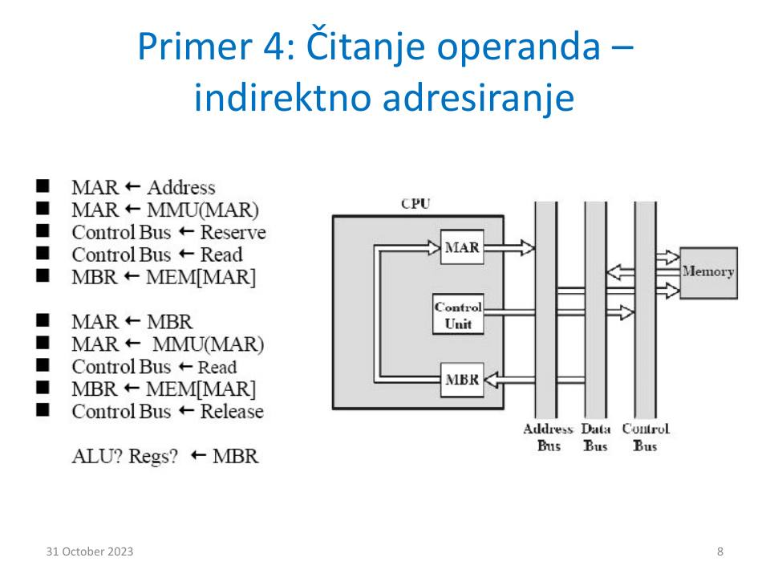
MAR ← Address adresa iz instrukcije MAR ← MMU(MAR) prevedi u fizičku Control Bus ← Reserve Control Bus ← Read MBR ← MEM[MAR] ← 1. čitanje: dobili smo ADRESU operanda MAR ← MBR ta adresa ide nazad u MAR MAR ← MMU(MAR) i ona se prevodi Control Bus ← Read MBR ← MEM[MAR] ← 2. čitanje: dobili smo sam OPERAND Control Bus ← Release ALU? Regs? ← MBR operand ide u ALU ili u registar
Na šemi desno obrati pažnju na strelicu koja ide iz MBR nazad u MAR: to je baš korak MAR ← MBR, kad ono što je pročitano postaje nova adresa. Upitnici u poslednjem redu („ALU? Regs?“) znače da operand ide tamo gde ga instrukcija traži: u ALU ako se sabira, u registar ako se samo učitava. I primeti da se magistrala rezerviše jednom i oslobađa tek posle oba čitanja.
Koliko puta procesor ukupno ide u memoriju da izvrši instrukciju koja sabira registar sa operandom adresiranim indirektno memorijski?
Prekid: kako procesor ostavi posao i vrati se (slajd 9)
Prekid (interrupt) je signal kojim neki događaj traži da procesor prekine ono što radi i odmah ga obradi. Izvori prekida su: tastatura (pritisnut taster), disk (prenos završen), tajmer (isteklo vreme; to je osnova kojom operativni sistem deli procesor između više programa), mrežna kartica (stigao paket), ali i greška u samom programu (deljenje nulom).
Procesor ne prekida instrukciju na pola. Prekide proverava u poslednjoj fazi ciklusa instrukcije (faza 8 iz Modula 3), dakle tek kad završi tekuću instrukciju. Naš ADD se, dakle, završi do kraja. Onda procesor mora da sačuva stanje: gde je stao (PC) i kakve su bile zastavice (PSW), da bi posle obrade prekida mogao da nastavi kao da se ništa nije desilo. Stanje čuva na steku, delu memorije na čiji vrh pokazuje registar SP.

Slajd 9 ima istu šemu kao slajd 7, samo su koraci levo grupisani sivim pozadinama. Pročitaj ih kao pet grupa:
| Grupa | Koraci | Objašnjenje |
|---|---|---|
| 1. Sačuvaj PC na stek | MAR ← SPMAR ← MMU(MAR)Control Bus ← ReserveMBR ← PCControl Bus ← Write | Adresa vrha steka iz SP ide u MAR. U MBR se stavi PC (adresa instrukcije od koje treba nastaviti) i upiše u memoriju signalom Write. Ovo je čitanje sa slajda 7 „u obrnutom smeru“: podatak ide iz procesora u memoriju. |
| 2. Sačuvaj PSW na stek | MAR ← SP ← ALU(SP+1)MAR ← MMU(MAR)MBR ← PSWControl Bus ← WriteSP ← ALU(SP+1) | SP se pomeri na sledeće mesto i tamo se upiše PSW (zastavice i stanje procesora). Na kraju SP pokazuje na novi vrh steka. |
| 3. Promeni režim | PSW ← privileged & disable | Procesor prelazi u privilegovani režim (režim jezgra operativnog sistema, u kome sme sve) i zabranjuje nove prekide, da ga drugi prekid ne bi prekinuo usred čuvanja stanja. |
| 4. Pročitaj vektor prekida | MAR ← Interrupt numberControl Bus ← ReadPC ← MBR ← MEM[MAR] | Broj prekida služi kao adresa u tabeli vektora prekida. Na toj adresi piše adresa rutine koja obrađuje taj prekid, i ona ide u PC. Strelica sa natpisom „No address translation!“ kaže da se ovde ne koristi MMU: tabela je na fiksnoj fizičkoj adresi, jer procesor mora da je nađe bez obzira koji program je radio. |
| 5. Oslobodi | Control Bus ← Release | Magistrala se oslobađa. Sledeći ciklus instrukcije donosi prvu instrukciju rutine za obradu prekida, jer je PC sada pokazuje. |
Kad rutina završi (pročita taster iz tastature i sačuva ga), posebna instrukcija povratka iz prekida (kod x86 IRET) skida PSW i PC sa steka, i naša petlja nastavlja sledeću ocenu tačno odakle je stala. Program za prosek ne zna da je bio prekinut.
Isprobaj ceo postupak korak po korak. Laboratorija koristi pojednostavljenu memoriju: na adresi 0120 je jedna obična instrukcija sabiranja (zamisli da je to naš ADD), a rutina za tastaturu počinje na adresi 3000, odmah iza našeg niza ocena.
Program izvršava instrukciju na adresi 0120 kad tastatura pošalje prekid broj 9. Prati PC, PSW, SP i stek u memoriji. Stek ovde raste naviše (SP + 1), kao na slajdu 9. Kod Intel x86 stek raste naniže (SP − 2 ili − 4 pri svakom PUSH), ali je princip isti.
Memorija
Zašto procesor čuva i PSW, a ne samo PC? Šta bi se desilo da ga ne sačuva?
ADD.Zašto se u koraku 3 zabranjuju novi prekidi?
Tri načina razmene podataka sa uređajima (slajd 10)
Uređaji (tastatura, disk, mrežna kartica) su mnogo sporiji od procesora i rade kad su oni spremni, ne kad procesor hoće. Procesor zato ima tri načina da sa njima razmenjuje podatke, i to su tri metode sa slajda 10:
| Metoda | Kako radi | Prednost | Mana |
|---|---|---|---|
| Polling (busy-waiting, „prozivanje“) | CPU u petlji stalno čita statusni registar uređaja: „jesi li spreman?“ Kad jeste, sam prenese podatak. | Najjednostavnije, ne treba poseban hardver. | CPU troši sve vreme na čekanje i ne radi ništa drugo. |
| Interrupt driven I/O (U/I vođen prekidima) | CPU zada posao uređaju i radi nešto drugo. Kad je uređaj spreman, pošalje prekid, i CPU tada prenese podatak. | CPU ne čeka. | Svaki bajt (ili reč) i dalje prolazi kroz CPU; za veliki prenos ima mnogo prekida. |
| DMA (Direct Memory Access, direktan pristup memoriji) | CPU kaže DMA kontroleru: „prenesi 4096 bajtova sa diska na adresu 2000 u memoriji“. DMA kontroler sam preuzme magistralu i prenese ceo blok. CPU dobije jedan prekid na kraju. | CPU skoro uopšte ne učestvuje; najbolje za velike blokove. | Treba poseban hardver; DMA i CPU se otimaju za magistralu. |
Za naš primer: kad Excel otvara fajl sa ocenama, operativni sistem kaže disku „pročitaj ovaj blok“ i DMA kontroler sam prebaci ceo blok u memoriju, od adrese 2000. Procesor za to vreme radi nešto drugo i dobije jedan prekid kad su ocene stigle. Za tastaturu, gde stiže jedan po jedan znak i to retko, prekidi su idealni. Polling se danas koristi samo u najjednostavnijim uređajima (mikrokontroleri) ili za vrlo kratka čekanja.
DMA može da radi u dva režima: burst (preuzme magistralu i prenese ceo blok odjednom; procesor za to vreme ne može u memoriju) ili cycle stealing („krađa ciklusa“: uzima magistralu po jedan ciklus između procesorovih pristupa, pa procesor samo malo uspori). Sad je jasno i zašto procesor na slajdu 7 rezerviše magistralu: da mu je DMA ne bi uzeo usred čitanja.
Treba preneti film od 2 GB sa diska u memoriju. Koju metodu bi izabrao i zašto?
Kako procesor zna koju rutinu da pozove (slajdovi 11–12)
U grupi 4 sa slajda 9 procesor je pročitao „vektor prekida“. Slajd 11 pokazuje kako ta tabela izgleda kod Intel Pentium procesora:

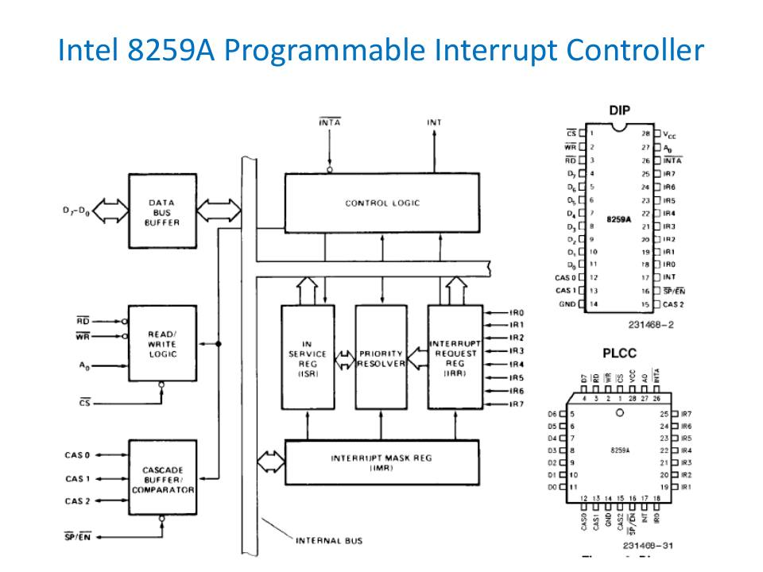
Svaki prekid ima broj (vector number) od 0 do 255, i za svaki broj u tabeli piše adresa rutine. Brojevi 0–31 su rezervisani za izuzetke, greške koje nastaju u samom procesoru dok izvršava program: 0 deljenje nulom (divide error), 1 debug, 2 NMI (nemaskirajući prekid, za ozbiljne hardverske greške), 3 breakpoint (tačka prekida za debugger), 4 prekoračenje, 6 nepostojeći opkod, 8 dvostruka greška, 12 greška steka, 13 opšta zaštita (program pristupa memoriji koja nije njegova), 14 page fault (tražena stranica nije u RAM-u; veza sa virtuelnom memorijom u delu o OS), 16 greška u pokretnom zarezu. Brojevi 32–255 su maskirajući prekidi od spoljnih uređaja, koji se mogu privremeno zabraniti (to je „disable“ iz grupe 3).
Ostaje pitanje: uređaja ima mnogo, a procesor ima jednu liniju za prekid. Slajd 12 prikazuje čip koji to rešava, Intel 8259A, programabilni kontroler prekida. On skuplja zahteve od do 8 uređaja (ulazi IR0–IR7) i prosleđuje ih procesoru jednom linijom INT. Unutra ima:
- IRR (Interrupt Request Register): pamti koji uređaji trenutno traže prekid,
- Priority Resolver: ako ih traži više odjednom, bira onaj najvišeg prioriteta,
- ISR (In-Service Register): pamti koji prekid se upravo obrađuje,
- IMR (Interrupt Mask Register): koje prekide trenutno treba ignorisati (maskirati),
- Data Bus Buffer i Read/Write logiku prema procesoru, i Cascade buffer preko koga se više 8259A čipova povezuje (do 64 prekida).
Kad procesor prihvati prekid, odgovori signalom INTA (interrupt acknowledge), a 8259A mu preko magistrale podataka pošalje broj vektora, npr. 9 za tastaturu. To je onaj „Interrupt number“ koji u grupi 4 ide u MAR. Tako se krug zatvara: taster → 8259A → INT → procesor završi ADD → čuva PC i PSW → INTA → broj 9 → tabela → rutina za tastaturu.
Program podeli broj nulom. Da li za to treba 8259A?
[SI+2000]? Kako instrukcija uopšte kaže procesoru gde je podatak? To je tema drugog predavanja Modula 4, načini adresiranja.Dodatni izvori: Intel 8259A datasheet (Harvard) · I/O Systems: DMA, Interrupts & Buses
Gde je podatak: načini adresiranja
Drugo predavanje Modula 4 počinje sadržajem (slajd 2) i sa dve „velike ideje“ (slajdovi 3–5): univerzalni računarski uređaj i rešavanje problema transformacijama kroz slojeve. Njih smo već obradili na kraju dela 5 Modula 1, pa ovde idemo pravo na glavnu temu.
Instrukcija ADD AL, ??? treba da sabere AL sa nečim. Gde je to „nešto“? Može biti broj zapisan u samoj instrukciji, može biti u registru, u memoriji na nekoj adresi, na adresi koja piše u registru, u nizu… Način adresiranja određuje kako procesor iz adresnog dela instrukcije dolazi do operanda. Efektivna adresa (EA) je konačna, stvarna adresa operanda u memoriji, ona koju procesor na kraju stavlja u MAR.
Zašto ne postoji samo jedan način? Zato što programi rade sa različitim vrstama podataka, i svaki način odgovara jednoj konstrukciji iz programskih jezika: konstanti (x = 5), promenljivoj (x), pokazivaču (*p), nizu (a[i]), polju strukture (s.polje). Naš primer, sabiranje niza ocena, je baš priča o tome kako se dolazi od najjednostavnijeg načina do onog koji nam treba.
Mapa načina adresiranja (slajdovi 6–9)
Slajd 6 nabraja sedam načina: trenutno, direktno memorijsko, direktno registarsko, indirektno memorijsko, indirektno registarsko, bazno registarsko i indeksno. Slajdovi 7 i 8 ih dele u dve grupe, prema tome kako procesor dolazi do adrese:

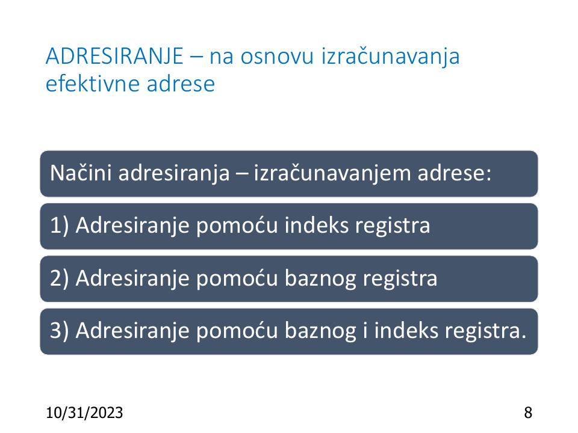
- Na osnovu čitanja adrese: 1) trenutno, 2) direktno, 3) indirektno. Procesor adresu (ili sam operand) samo pročita, iz instrukcije, registra ili memorije.
- Na osnovu izračunavanja efektivne adrese: 1) pomoću indeks registra, 2) pomoću baznog registra, 3) pomoću baznog i indeks registra. Procesor adresu izračuna sabiranjem.

Slajd 9 je ručno nacrtan pregled, i vredi ga dobro razumeti jer ga je lako zapamtiti kao sliku. Svaki od sedam crteža ima Instruction (instrukciju sa poljima) i, gde treba, Memory ili Registers. Broj strelica pokazuje koliko „skokova“ treba do operanda:
- Immediate (gore levo): u instrukciji je sam Operand. Nema strelica.
- Direct: u instrukciji je adresa A, jedna strelica vodi u memoriju na A, tamo je operand.
- Indirect (gore desno): u instrukciji je A, na adresi A piše B, a na B je operand. Dve strelice.
- Register: u instrukciji je broj registra R, operand je u tom registru.
- Register Indirect: R pokazuje na registar u kome je adresa A, a na A u memoriji je operand.
- Displacement (desno): u instrukciji su R i A; sadržaj registra R se sabere (krug sa +) sa A i to je adresa operanda. Ovo je zajednički crtež za indeksno i bazno adresiranje.
- Stack (dole): instrukcija ne navodi ništa, operand je implicitno (Implicitly) na vrhu steka.
1. Trenutno: vrednost je u instrukciji (slajd 10)

U adresnom delu instrukcije se nalazi sam operand, vrednost, a ne adresa. Znak # označava trenutnu vrednost. U MOV #3 R1 prva adresa (#3) je trenutno adresiranje, a druga (R1) je direktno adresiranje registra: R1 ← 3. Kod Intela se # ne piše; broj bez zagrada je trenutna vrednost:
MOV AX, 2000 AX ← 2000 (broj 2000, ne adresa!) MOV AL, 35H AL ← 35h (H = heksadecimalno) MOV CL, 0A CL ← 0Ah = 10 ADD AL, 45 AL ← AL + 45 AND AX, 0000 AX ← AX I 0 (brisanje registra)
Pristupa memoriji za operand: 0, jer je operand stigao zajedno sa instrukcijom. Zato je ovo najbrži način. Mana: vrednost je fiksna (konstanta) i ograničena brojem bita adresnog polja. U našem primeru, trenutno adresiranje treba na početku: MOV AL, 0 (zbir kreće od nule) i MOV SI, 0 (počinjemo od prve ocene).
2. Direktno: adresa je u instrukciji (slajdovi 11–13)
Direktno memorijsko (slajd 11): adresno polje instrukcije sadrži efektivnu adresu operanda. Instrukcija ima dva polja, opkod i adresa, a strelica iz adrese vodi pravo u memoriju do operanda. ADD R1, 1001: 1001 je memorijska adresa na kojoj je operand, pa R1 ← R1 + S(1001). Pristupa memoriji: 1. U programu to odgovara globalnoj promenljivoj, čija je adresa poznata unapred. Za naš niz: ADD AL, [2000] bi sabrao samo prvu ocenu.
Direktno registarsko (slajd 12): adresno polje sadrži broj registra u kome je operand. ADD R1, R2: R1 ← R1 + R2. Pristupa memoriji: 0.
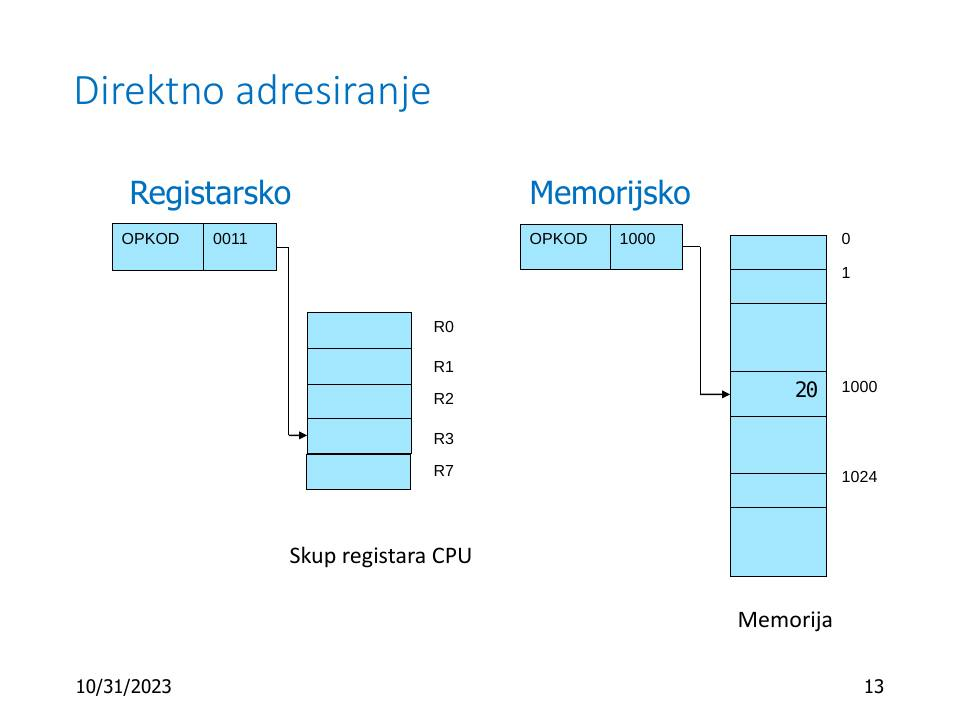
Slajd 13 ih stavlja jedno pored drugog, sa brojevima. Levo (registarsko): instrukcija OPKOD 0011; 0011 je 3, pa je operand u registru R3. Desno (memorijsko): instrukcija OPKOD 1000; 1000 je adresa, a na adresi 1000 u memoriji je operand 20. Zapamti ovu sliku, jer će slajd 17 imati iste brojeve za indirektno adresiranje. Uoči i to da je adresa registra samo 4 bita, a memorijska adresa mora biti mnogo duža.
Odatle i slajd 18, prednosti i nedostaci korišćenja registara:
- adresni deo za adresiranje registra je kraći (za 16 registara treba 4 bita, a za 4 GB memorije 32 bita), pa je i cela instrukcija kraća,
- pristup registrima je za red veličine brži od pristupa memoriji (setimo se hijerarhije memorije iz Modula 1),
- nedostatak: broj registara je mali, pa ne mogu svi podaci da budu u registrima.
Zato naš program drži zbir u registru AL (koristi se u svakom krugu petlje), a ocene u memoriji (ima ih mnogo).
3. Indirektno: adresa adrese (slajdovi 14–19)
Slajd 14 to kaže jednom rečenicom: adresni deo instrukcije sadrži adresu adrese operanda. Adresa operanda može biti u memorijskoj lokaciji ili u registru, pa postoje dve vrste. Zagrade ( ) u zapisu znače „idi na adresu koja piše ovde“.


Indirektno memorijsko (slajd 15): LOAD R1, (1005). Na adresi 1005 je zapisana adresa operanda, pa je EA = S(1005). Pristupa memoriji za operand: 2, prvo da se pročita 1005 i dobije adresa, pa da se pročita sam operand. To su baš dva čitanja sa slajda 8 iz prvog dela.
Indirektno registarsko (slajd 16): LOAD X3, (X2) ili LOAD R1, (R2). U registru X2 je adresa operanda, pa je EA = S(X2). Na slajdu na adresiranoj lokaciji piše 200, pa X3 ← 200. Pristupa memoriji: 1, jer je adresa već u registru. Engleska napomena na slajdu kaže samo da se indirektni način označava stavljanjem registra u zagrade.
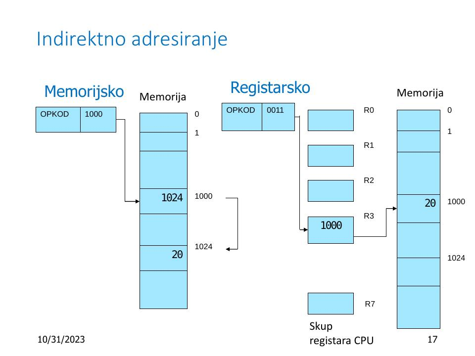
Slajd 17 je „blizanac“ slajda 13. Levo (memorijsko): instrukcija OPKOD 1000. Na adresi 1000 u memoriji piše 1024 (to je adresa), a na adresi 1024 piše 20 (to je operand). Desno (registarsko): instrukcija OPKOD 0011 bira registar R3; u R3 piše 1000 (adresa), a na adresi 1000 u memoriji je operand 20. Uporedi: ista instrukcija OPKOD 1000 kod direktnog daje 20 (sadržaj adrese 1000), a kod indirektnog daje ono što je na adresi 1024.
p je adresa, a *p je vrednost na toj adresi. Kad funkciji pošalješ niz ocena kao parametar, šalješ samo adresu niza (2000), a funkcija mu pristupa indirektno.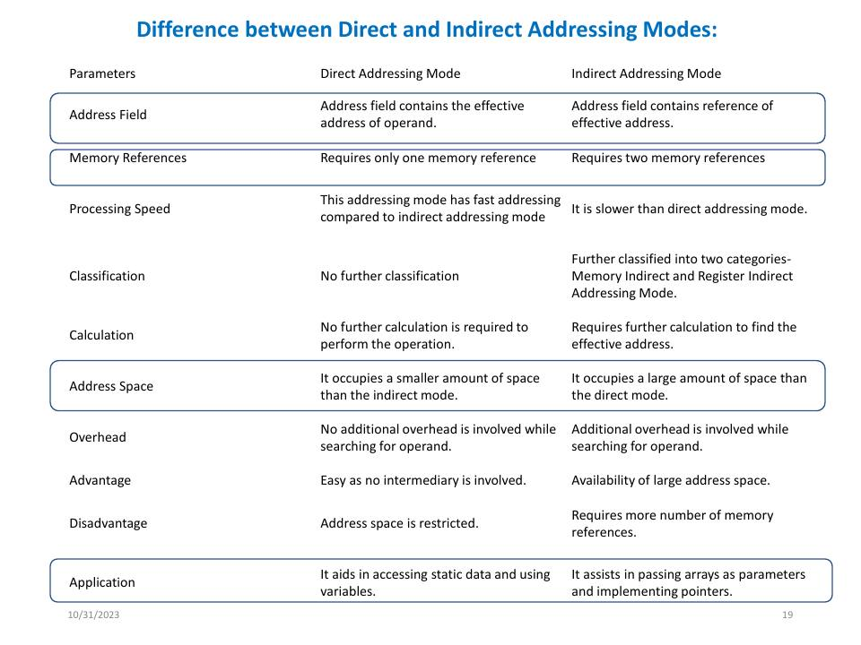
Slajd 19 je tabela poređenja na engleskom. Prevedena:
| Parametar | Direktno | Indirektno |
|---|---|---|
| Adresno polje | Sadrži efektivnu adresu operanda | Sadrži referencu na efektivnu adresu |
| Pristupi memoriji | Jedan | Dva (kod memorijskog) |
| Brzina | Brže | Sporije |
| Podela | Nema dalje podele | Memorijsko i registarsko indirektno |
| Računanje | Nije potrebno | Potrebno je dodatno da se nađe EA |
| Adresni prostor | Ograničen (koliko bita ima polje) | Velik (u memoriji može da stoji puna adresa) |
| Primena | Statički podaci, promenljive | Pokazivači, prenos nizova kao parametara |
Instrukcija je LOAD R1, (1000), memorija je ista kao na slajdu 17. Šta će biti u R1? A za LOAD R1, 1000?
(1000) (indirektno): na 1000 piše 1024, na 1024 piše 20, pa je R1 = 20, uz dva čitanja. Za 1000 (direktno): R1 dobija sadržaj adrese 1000, dakle R1 = 1024, uz jedno čitanje. Ista brojka, a potpuno drugačiji rezultat.4. Indeksno: kako se prolazi kroz niz (slajdovi 20–22)
Slajd 20 kaže da se ovaj način koristi za nizove: jednodimenzionalni niz a[1], a[2], …, a[n] stoji u memoriji na uzastopnim lokacijama. Početna adresa niza (k) je zapisana u instrukciji, a redni broj elementa (i) je u indeks registru (IR; kod Intela to su SI i DI). Procesor ih sabere:

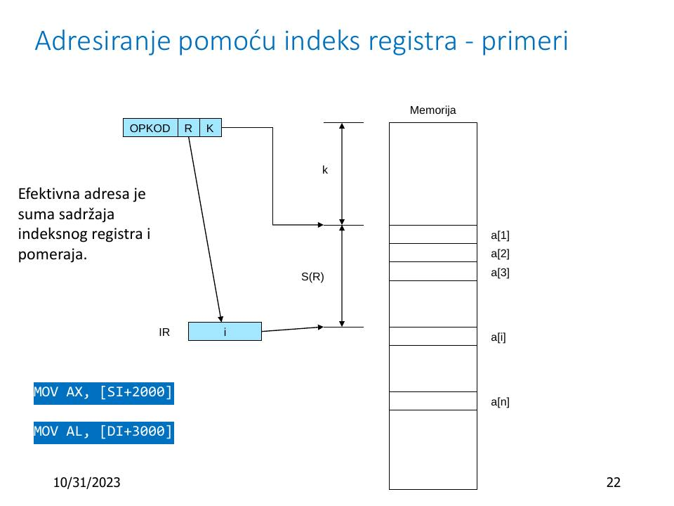
Na slajdu 21 instrukcija ima polja OPKOD | R | b: R kaže koji registar je indeksni, a b je početna adresa niza. Indeks registar sadrži i. Sabirač (krug sa +) sabere b i S(R) i dobije adresu elementa a[i]. Naslov kaže „za jednoadresne mašine“: isti adresni deo instrukcije ima dva dela, adresu registra i baznu adresu niza. Slajd 22 je isti crtež sa oznakom k (pomeraj od početka memorije do početka niza) i dva Intel primera: MOV AX, [SI+2000] i MOV AL, [DI+3000].
Ovo je odgovor na pitanje iz uvoda: naš ADD AL, [SI+2000] je indeksno adresiranje. Ocene su na 2000, 2001, 2002, 2003. Petlja koristi jednu te istu instrukciju, a samo se SI povećava za 1 u svakom krugu:
| Krug | SI | EA = 2000 + SI | Ocena | AL posle ADD |
|---|---|---|---|---|
| 1. | 0 | 2000 | 8 | 8 |
| 2. | 1 | 2001 | 9 | 17 |
| 3. | 2 | 2002 | 7 | 24 |
| 4. | 3 | 2003 | 10 | 34 |
Instrukcija se ne menja, a svaki put čita drugu ocenu. Bez indeksnog adresiranja, program bi morao da ima posebnu instrukciju za svaki element niza, ili da menja sopstveni kod. Prosek je onda 34 / 4 = 8,5.
5. Bazno: program koji radi bilo gde u memoriji (slajdovi 23–25)
Postoji i drugi problem. Naš program je pisan kao da je niz na adresi 2000. Šta ako operativni sistem učita program negde drugde, jer je na 2000 već neki drugi program? Rešenje sa slajda 23: sve adrese podataka i instrukcija programa pišu se relativno u odnosu na početak programa (baznu adresu), a u bazni registar se pri učitavanju upiše stvarna početna adresa programa:


Slajd 24 je crtež „Displacement“ sa slajda 9: instrukcija ima polja opkod | reg. | pomeraj, sadržaj izabranog registra se sabere sa pomerajem i dobije se adresa operanda. Slajd 25 pokazuje smisao: bazni registar BR sadrži b, adresu na kojoj počinje Program u memoriji, a pomeraj P iz instrukcije kaže koliko je operand daleko od početka programa.
Najvažnija prednost: program može da se izvršava u bilo kom delu memorije (premestivost, relocation). Kad OS učita program na adresu 50000 umesto 10000, ne mora da menja nijednu instrukciju; samo upiše 50000 u bazni registar. Ovo je osnova za to da više programa istovremeno bude u memoriji, o čemu govori deo predmeta o operativnim sistemima.
6. Bazno + indeksno: niz unutar programa koji može biti bilo gde (slajdovi 26–27)
Sada spojimo oba problema: niz ocena je na pomeraju D od početka našeg programa, a program može biti bilo gde. Slajd 26 uvodi tri dela:
- BR: adresa opšteg registra koji se koristi kao bazni (početak bloka, programa),
- IR: adresa opšteg registra koji se koristi kao indeksni (redni broj elementa),
- D: pomeraj (displacement), relativna adresa niza u odnosu na baznu adresu bloka u kome počinje niz.

Na slajdu 27 instrukcija ima četiri polja: OPKOD | BR | IR | D. Bazni registar sadrži b (početak bloka u memoriji), pomeraj D vodi od b do početka niza (zajedno daju K), a indeks registar sadrži i, pa se dolazi do a[i]. Intel primer sa slajda: ADD AX, [BX+SI], gde je BX bazni, a SI indeksni registar.
Sad isprobaj sve načine na istim registrima i istoj memoriji. Obrati pažnju koliko puta se ide u memoriju i kako se menja put do operanda:
Registri
IR = 3
BR = 1000
Memorija
[1003] = 55
[1023] = 91
[1024] = 20
Svi načini na jednom mestu
| Način | Primer | Efektivna adresa / operand | Pristupa memoriji | Odgovara u C-u |
|---|---|---|---|---|
| Trenutno | MOV #3, R1 | operand = 3 (u instrukciji) | 0 | x = 3 |
| Direktno registarsko | ADD R1, R2 | operand = S(R2) | 0 | lokalna promenljiva u registru |
| Direktno memorijsko | ADD R1, 1001 | EA = 1001 | 1 | globalna promenljiva |
| Indirektno registarsko | LOAD R1, (R2) | EA = S(R2) | 1 | *p (p u registru) |
| Indirektno memorijsko | LOAD R1, (1005) | EA = S(1005) | 2 | *p (p u memoriji) |
| Indeksno | MOV AX, [SI+2000] | EA = k + S(IR) | 1 | a[i] |
| Bazno | OPKOD BR, P | EA = S(BR) + P | 1 | premestiv program, s.polje |
| Bazno + indeksno | ADD AX, [BX+SI] | EA = S(BR) + D + S(IR) | 1 | s.niz[i] |
MOV AX, 2000 je trenutno (AX = 2000), a MOV AX, [2000] je direktno memorijsko (AX = sadržaj adrese 2000).Proveri da li razlikuješ načine kad ih vidiš u stvarnim instrukcijama:
Za svaku instrukciju izaberi način adresiranja izvornog operanda (onog posle zareza; kod LOAD i MOV to je ono što se čita). Posle odgovora dobijaš objašnjenje.
Šta određuje koliko je instrukcija dugačka (slajd 28)
Videli smo da instrukcija sa memorijskom adresom mora biti duža od one sa registrom, a bazno + indeksno ima čak četiri polja. Slajd 28 nabraja šta sve utiče na dužinu instrukcije:
- veličina memorije: veća memorija traži duže adrese,
- organizacija memorije: da li se adresira svaki bajt ili cela reč (bajt-adresabilna memorija iste veličine traži više adresa),
- struktura magistrale: koliko bita se prenese odjednom; instrukcija koja staje u jedan prenos donosi se najbrže,
- složenost procesora: više instrukcija i više načina adresiranja traže duži opkod i dodatna polja,
- brzina procesora: brz procesor ne sme da čeka na donošenje dugačkih instrukcija.
Zašto bi projektant procesora uopšte uvodio sporo indirektno memorijsko adresiranje, kad postoji brže indirektno registarsko?
Dodatni izvori: GeeksforGeeks, Addressing modes in 8086 · Intro to x86 Assembly Language (video sa slajda)
Na pravom Intel procesoru: registri, instrukcije, bajtovi i slova
Registri Intel procesora (slajd 29)
Naša instrukcija koristi registre AL i SI. Odakle ta imena? Slajd 29 nabraja registre za podatke i adrese kod Intela, po širini:

| Širina | Registri | Od kog procesora |
|---|---|---|
| 8 bita | AH, AL, BH, BL, CH, CL, DH, DL | 8080/8086 |
| 16 bita | AX, BX, CX, DX, SP, BP, SI, DI | 8086 (1978) |
| 32 bita | EAX, EBX, ECX, EDX, ESP, EBP, ESI, EDI | 80386 (1985), „E“ = extended |
| 64 bita | RAX, RBX, RCX, RDX, RSP, RBP, RSI, RDI, R8–R15 | x86-64 (AMD, 2003) |
Ovo nisu različiti registri, nego delovi istog registra. To je ideja familije modela iz Modula 1 na delu: da bi stari programi radili na novim procesorima, svaki novi procesor je samo „proširio“ stare registre, a stara imena su ostala da označavaju njihove donje delove:
Naš zbir ocena (najviše 40 za četiri desetke) staje u jedan bajt, pa koristimo AL, najmanji deo registra RAX. Upiši neku vrednost i vidi kako se registar deli:
Napomena za radoznale: kad se kod x86-64 upiše nešto u EAX, gornja 32 bita RAX-a se obrišu; upis u AX, AH ili AL ostavlja ostatak registra netaknutim.
Imena registara nisu slučajna. Svaki ima tipičnu namenu, i sad vidiš zašto je u našem primeru indeks baš SI:
| Registar | Ime | Tipična upotreba |
|---|---|---|
| AX | Accumulator | Rezultati aritmetike, povratna vrednost funkcije (akumulator iz Modula 1 i 3) |
| BX | Base | Bazni registar za adresiranje ([BX+SI]) |
| CX | Count | Brojač u petljama (u našem primeru: koliko je ocena ostalo) |
| DX | Data | Podaci, U/I portovi, gornja polovina rezultata kod množenja |
| SP | Stack Pointer | Pokazuje na vrh steka (prekidi iz dela 1, PUSH/POP) |
| BP | Base Pointer | Početak okvira funkcije na steku |
| SI / DI | Source / Destination Index | Indeksni registri (indeksno adresiranje, kopiranje nizova) |
Načini adresiranja kod Pentium-a (slajdovi 30–32)
Intel ima sve načine iz dela 2, i još nekoliko kombinacija. Ali kod njega postoji i dodatni sloj, segmenti. Memorija je podeljena na segmente (za kod, za podatke, za stek), pa je postupak sa slajda 30 ovakav:
- Virtuelna ili efektivna adresa je offset (pomeraj) unutar segmenta. To je ono što izračunaju načini adresiranja iz dela 2.
- Linearna adresa se dobija kad se na offset doda početna adresa segmenta.
- Ako je uključen rad sa stranicama (paging), linearna adresa još prolazi kroz prevođenje stranice da bi se dobila fizička. To je posao MMU iz dela 1.
Pentium podržava ove načine: Immediate (trenutno), Register operand (registarsko), Displacement (samo pomeraj, odnosno direktno), Base (samo bazni registar, odnosno indirektno registarsko), Base with displacement (bazno), Scaled index with displacement (indeks × skala + pomeraj, za nizove), Base with index and displacement (bazno + indeksno), Base scaled index with displacement (sve zajedno) i Relative (relativno u odnosu na PC, za skokove).
Slajd 31 crta celo izračunavanje. Gore desno su Base Register i Index Register; indeks se množi sa Scale (1, 2, 4 ili 8, veličina jednog elementa niza u bajtovima), pa se sve sabere sa Displacement (pomeraj iz instrukcije, 0, 8 ili 32 bita). Rezultat je Effective Address. Levo su segmentni registri (CS, DS, SS, ES, FS, GS) koji biraju deskriptor segmenta sa tri podatka: Base Address (gde segment počinje), Limit (koliki je, da program ne bi izašao iz njega) i Access Rights (prava pristupa). Base Address segmenta + efektivna adresa = Linear Address, koja pokazuje u segment u memoriji.
Zašto Scale? Zato što elementi niza nisu uvek bajtovi. Da su naše ocene 32-bitni brojevi (4 bajta), bile bi na adresama 2000, 2004, 2008, 2012. Sa Scale = 4 indeks i dalje ide 0, 1, 2, 3, a procesor sam množi: ADD EAX, [ESI*4+2000]. To je indeksno adresiranje iz dela 2, prilagođeno pravim tipovima podataka.
Slajd 32 pokazuje format x86 instrukcije, i jasno je da je to CISC procesor iz Modula 3: instrukcija ima promenljivu dužinu. Ima do 4 bajta prefiksa (npr. promena veličine operanda ili segmenta), 1–3 bajta opkoda, 0–1 bajt ModR/M (bira način adresiranja: polja Mod, Reg/Opcode i R/M), 0–1 bajt SIB (Scale, Index, Base), 0/1/2/4 bajta Displacement i 0/1/2/4 bajta Immediate (trenutna vrednost). Ukupno od 1 do 15 bajtova. Svaki način adresiranja koji smo naučili ima svoje polje u ovom formatu.
Niz 64-bitnih brojeva počinje na adresi 3000, a RSI = 5. Koja je adresa elementa sa indeksom 5 ako se koristi Scale = 8?
Prave instrukcije (Dodatak, slajdovi 40, 42–45)
Na kraju prezentacije profesor je dodao primere stvarnih Intel instrukcija. Oni su najbolja vežba za sve što smo naučili, jer u svakoj možeš da prepoznaš način adresiranja.
mov ebx, 123 ; ebx = 123 (trenutno adresiranje) mov eax, ebx ; eax = ebx (registarsko) add ebx, ecx ; ebx += ecx sub ebx, edx ; ebx -= edx mul ebx ; eax *= ebx (implicitno koristi eax: akumulator!) div edx ; eax /= edx
Obrati pažnju na mul i div: imaju samo jedan operand, a drugi je implicitno EAX. To je ostatak akumulatorske mašine iz Modula 3 u modernom procesoru.


- MOV (slajd 42) kopira sadržaj izvornog operanda u odredišni; izvor se nikad ne menja. Operandi moraju biti iste veličine:
MOV AL, BL(8 bita),MOV AX, CX(16),MOV ECX, EBX(32),MOV RAX, RDX(64). Neke kombinacije nisu dozvoljene (npr.MOV R8B, CH). - Bazno i indeksno (slajd 43):
MOV CX, [BX+DI]kopira 16-bitnu reč sa adrese BX + DI u CX; sličnoMOV CH, [BP+SI],MOV [BX+SI], SP(upis u memoriju),MOV CL, [EDX+EDI],MOV [EAX+EBX], ECX,MOV [RSI+RBX], RAX. - PUSH / POP (slajd 44):
PUSH AXstavlja AX na stek,POP BXskida vrh steka u BX,PUSHF/POPFčuvaju zastavice (EFLAGS, Intelov PSW),PUSHA/POPAsve registre odjednom,PUSH 1234Hstavlja konstantu.POP CSje zabranjena (kodni segment se ne sme menjati direktno). Ovo je stek iz dela 1: prekid radi isto što i PUSH PC i PUSHF, samo automatski. - ADD (slajd 45):
ADD AL, BL,ADD CX, DI,ADD EBP, EAX,ADD CL, 44H(trenutno),ADD BX, 245FH,ADD [BX], AL(sabira AL sa bajtom u memoriji na adresi BX i rezultat upisuje u memoriju: indirektno registarsko),ADD CL, [BP],ADD BX, [SI+2],ADD CL, TEMP(direktno memorijsko, TEMP je simboličko ime promenljive),ADD BX, TEMP[DI](indeksno).
Sada možemo da napišemo ceo program za zbir ocena koji smo pratili kroz modul. Svaka linija koristi nešto što smo naučili:
MOV AL, 0 ; zbir = 0 (trenutno)
MOV SI, 0 ; indeks prve ocene (trenutno)
MOV CX, 4 ; broj ocena (trenutno)
petlja: ADD AL, [SI+2000] ; zbir += ocena[SI] (indeksno)
INC SI ; sledeća ocena (registarsko)
DEC CX ; jedna manje (registarsko)
JNZ petlja ; ako CX nije 0, ponovi (relativno, skok)
MOV [2010], AL ; sačuvaj zbir 34 (direktno memorijsko)
JNZ („skoči ako nije nula“) gleda zastavicu nule iz PSW koju je postavio DEC. Zato prekid iz dela 1 mora da sačuva PSW: da je tastatura prekinula program između DEC i JNZ, bez PSW-a bi skok pogledao pogrešnu zastavicu.
Bit, bajt, reč i tipovi podataka (slajdovi 34–35, 41)
- Bit: 0 ili 1.
- Nibl (nibble): 4 bita, jedna heksadecimalna cifra (0–F). Npr. 1001 = 9.
- Bajt: 8 bita, dve hex cifre. Npr. 1111 0000 = F0h = 240. Naš zbir 34 je bajt 0010 0010 = 22h.
- Reč (word): veličina zavisi od arhitekture. Kod Intela „word“ = 16 bita, „double word“ = 32, „quad word“ = 64. Slajd 35 pokazuje 64-bitnu reč (8 bajtova) i 128-bitnu (16 bajtova, koristi se u vektorskim SSE instrukcijama, onima koje su u Modulu 2 ubrzale množenje matrica).

Slajd 41 (iz dodatka) povezuje tipove iz C-a sa veličinama na x86-64:
| C deklaracija | Bajtova | Asemblerski sufiks | x86-64 tip |
|---|---|---|---|
| char | 1 | b | Byte |
| short | 2 | w | Word |
| int, unsigned int | 4 | l ili d | Double word |
| long, unsigned long | 8 | q | Quad word |
| pokazivač (char *) | 8 | q | Quad word |
| float / double | 4 / 8 | s / d | Single / double precision |
Kojim redom idu bajtovi: big i little endian (slajdovi 33, 36)
Kad je vrednost veća od jednog bajta (npr. int od 4 bajta), a memorija je adresirana po bajtovima, postavlja se pitanje koje zvuči sitno, a pravi velike probleme: kojim redom se bajtovi upisuju na uzastopne adrese? Slajd 33 kaže da postoje dva dogovora:
- Big endian („veliki kraj prvi“): najznačajniji bajt ide na najnižu adresu, isto kao što mi pišemo brojeve. Koriste ga: Java virtuelna mašina, Internet (mrežni protokoli, „network byte order“), HP, IBM i Motorola 68000.
- Little endian („mali kraj prvi“): najmanje značajan bajt ide na najnižu adresu. Koriste ga: Intel 8086 (i svi x86 posle njega) i VAX DEC. Danas i ARM, podrazumevano.

Slajd 36 daje primer koji se pita na ispitu: 32-bitna vrednost 0x12345678 upisuje se od adrese 00.
| Adresa | 00 | 01 | 02 | 03 |
|---|---|---|---|---|
| Big endian | 12 | 34 | 56 | 78 |
| Little endian | 78 | 56 | 34 | 12 |
Postupak: broj podeli na bajtove sleva, po dve hex cifre: 12 (najznačajniji), 34, 56, 78 (najmanje značajan). Big endian ih piše tim redom, little endian obrnutim. Bitovi unutar bajta se ne obrću, i hex cifre unutar bajta ostaju iste (78 ostaje 78, ne postaje 87); obrće se samo redosled bajtova.
Ocena 10 je sačuvana kao 32-bitni int na Intel računaru, od adrese 2000. Šta piše na adresama 2000–2003?
Kako se pamte slova: ASCII i Unicode (slajdovi 37–38)
Uz ocene, tabela ima i imena studenata. Računar, međutim, čuva samo brojeve, pa se i svaki znak mora kodirati brojem. Slajdovi 37 i 38 prikazuju dve tabele kodova:

- ASCII (American Standard Code for Information Interchange) koristi 7 bita, dakle 128 znakova: 0–31 su upravljački znaci (NUL, LF = novi red = 10, CR = 13, ESC = 27), 32 je razmak, 48–57 su cifre '0'–'9', 65–90 velika slova 'A'–'Z', 97–122 mala slova. Korisni trikovi: 'a' − 'A' = 32 (razlikuju se u jednom bitu), a cifra '7' − '0' = 7.
- Unicode dodeljuje broj (code point) svakom znaku svih pisama sveta: č (U+010D), ž (U+017E), ćirilica, kineski znaci, emoji. Prvih 128 Unicode znakova su isti kao ASCII. Najčešće se zapisuje kao UTF-8: ASCII znak zauzima 1 bajt, č ili ž 2 bajta, kineski znak 3, emoji 4.
| Znak | Decimalno | Hex | Binarno |
|---|---|---|---|
| '0' | 48 | 30 | 0011 0000 |
| 'A' | 65 | 41 | 0100 0001 |
| 'a' | 97 | 61 | 0110 0001 |
| razmak | 32 | 20 | 0010 0000 |
Ime „Ana“ je u memoriji tri bajta: 41 6E 61. Ime „Đorđe“ u UTF-8 zauzima 7 bajtova, jer su oba slova đ/Đ po dva bajta. Upiši svoje ime i vidi:
Zašto se kod ASCII teksta ne postavlja pitanje big ili little endian?
Ceo Modul 4 u jednom pogledu
Ovo je cela priča Modula 4, ispričana kroz jednu instrukciju ADD AL, [SI+2000]. Ako svaku rečenicu umeš da objasniš svojim rečima, Modul 4 znaš:
- Procesor je mašina stanja, pa je svako čitanje iz memorije niz stanja (adresa na magistralu, RD, čekanje na READY, podatak na magistralu, upis u registar) (M4_01 sl. 2–4).
- ASM dijagram to crta po taktovima (t1–t4, romb READY); spora memorija dodaje stanja čekanja tw (sl. 5–6).
- Pravo čitanje instrukcije: MAR ← PC, MMU prevodi adresu, rezerviši magistralu, Read, PC + 1, MBR ← MEM, oslobodi, IR ← MBR. Indirektno adresiranje traži dva čitanja (sl. 7–8).
- Prekid: posle tekuće instrukcije PC i PSW idu na stek, procesor prelazi u privilegovan režim i zabranjuje prekide, a adresu rutine čita iz tabele vektora bez MMU (sl. 9, 11).
- U/I: polling (procesor čeka), prekidi (uređaj javlja), DMA (kontroler sam prenosi blok); više uređaja deli liniju INT preko 8259A (sl. 10, 12).
- Načini adresiranja: trenutno (vrednost, 0 pristupa), direktno (adresa, 1), indirektno (adresa adrese, 2 kod memorijskog), registarske varijante su kraće i brže (M4_02 sl. 6–19).
- Izračunavanje adrese: indeksno k + S(IR) za nizove, bazno S(BR) + P za premestive programe, bazno + indeksno S(BR) + D + S(IR) (sl. 20–27).
- Intel: AL ⊂ AX ⊂ EAX ⊂ RAX; EA = Base + Index × Scale + Displacement, pa segment; instrukcije promenljive dužine (CISC) (sl. 29–32, 40–45).
- Podaci: bajt, reč, tipovi; big endian (najznačajniji bajt prvi: Internet, JVM) i little endian (Intel); tekst kao ASCII (7 bita) ili Unicode/UTF-8 (sl. 33–38, 41).
Formule, domaći zadaci, ispitna pitanja i veliki test
Sve formule na jednom mestu
Domaći zadaci sa predavanja, rešeni korak po korak
Na slajdovima nema rešenja; ovo je moje rešenje. Pretpostavka: memorija je bajt-adresabilna (svaki bajt ima svoju adresu, kao kod svih današnjih procesora) i 1 KB = 2¹⁰ B, 1 GB = 2³⁰ B. Proveri sa asistentom koje tumačenje „memorijske lokacije“ traže.
DZ 1: 4 jezgra, svako ima L1 keš od 64 KB (direct-mapped, linija 32 B). RAM 16 GB sa memorijskim linijama od 64 B.
a) Koliko različitih memorijskih lokacija može adresirati procesor?
- 16 GB = 16 × 2³⁰ B = 2⁴ × 2³⁰ = 2³⁴ B.
- Ako je lokacija = bajt: 2³⁴ = 17 179 869 184 lokacija, za to je potrebna 34-bitna adresa.
- Ako se pod lokacijom misli na memorijsku liniju od 64 B = 2⁶ B: 2³⁴ / 2⁶ = 2²⁸ = 268 435 456 linija.
b) Koliko ukupno keš linija ima L1 za sva četiri jezgra?
- Jedno jezgro: 64 KB / 32 B = 2¹⁶ / 2⁵ = 2¹¹ = 2048 linija.
- Četiri jezgra: 4 × 2048 = 8192 linije.
c) Koliko adresa keš L1 može mapirati u svojim linijama?
- U jednom trenutku jedan L1 drži 2048 linija × 32 B = 65 536 B, dakle 2¹⁶ = 65 536 adresa (bajtova). Sva četiri keša zajedno: 4 × 65 536 = 262 144 adrese (256 KB).
- Pošto je keš direct-mapped, svaka od 2³⁴ RAM adresa ima tačno jednu liniju gde može biti. Adresa od 34 bita se deli: offset = 5 bita (32 = 2⁵ bajtova u liniji), indeks = 11 bita (2048 = 2¹¹ linija), tag = 34 − 11 − 5 = 18 bita. Dakle na svaku liniju keša mapira se 2¹⁸ = 262 144 različitih blokova RAM-a (ali u jednom trenutku je tamo samo jedan).
DZ 2: 6 jezgara, svako direktno pristupa RAM-u. RAM 128 GB sa memorijskim linijama od 256 B.
a) 128 GB = 2⁷ × 2³⁰ = 2³⁷ B → 2³⁷ = 137 438 953 472 bajt-lokacija, 37-bitna adresa. U linijama od 256 B = 2⁸: 2³⁷ / 2⁸ = 2²⁹ = 536 870 912 linija.
b) Najveća količina podataka koju RAM drži odjednom je njen kapacitet: 128 GB = 137 438 953 472 B (= 2²⁹ linija × 256 B). Broj jezgara (6) ne menja ovo, jer sva jezgra dele istu memoriju (deljena memorija).